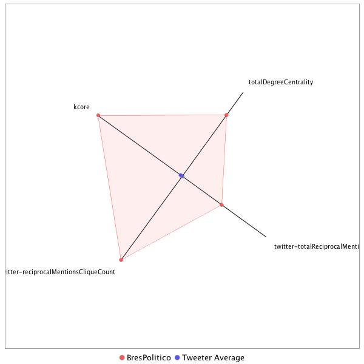

This tweeter has been identified as a super friend. Its target audience and hashtag and word usage are analyzed below.
Basic Statistics
Number of direct followers 37177 The peak number of followers that the tweeter had during any time period. Number of retweeters 185 Number of agents that retweeted the key influencer. Number of secondary followers 12859239 The sum of the followers of those who retweeted the key influencer.
Measure Values of Super Friends node versus Tweeter Average
This compares the measure values of the key influencer with the average values across all tweeters. For each measure line, the center-point means zero and the end-point means the maximum score across all tweeters.

Where was the influencer?
The agent is not recorded as being in any locations. Either he tweeted without geo-tags or we have no information about the tweets he sent.
The agent and retweeters were in 22 different locations.

What hashtags did the influencer use?
This displays the top ranked hashtags that the influencer and its retweeters used.
Rank hashtag Count 1 AHCA 827 2 pharma 645 3 Obamacare 479 4 TrumpCare 460 5 mtal 446 6 GA06 440 7 FDA 417 8 biotech 385 9 Comey 368 10 ACA 346 11 BREAKING 328 12 CNNsotu 327 13 ComeyHearing 322 14 SCOTUS 292 15 TheLead 292 16 VAGov 237 17 NIH 233 18 MemorialDayWeekend 228 19 adopt 220 20 Russia 199 21 ParisAgreement 190 22 drugprices 188 23 AdoptDontShop 170 24 dog 169 25 healthcare 141 26 Trump 128 27 NAFTA 112 28 TrumpBudget 109 29 ge2017 104 30 WrongChoiceAct 102 31 cat 102 32 drugpricing 101 33 trumprussia 101 34 sallyyates 99 35 MTpol 94 36 FF 92 37 CDC 91 38 NYC 89 39 rescue 88 40 Medicaid 87 41 Opioids 84 42 covfefe 82 43 SC05 81 44 climate 79 45 foster 79 46 omnibus 79 47 TheBachelorette 78 48 MemorialDay 77 49 alsen 75 50 Hardball 73 51 txlege 73 52 Qatar 72 53 CR 71 54 Manchester 71 55 ComeyFiring 69 56 CongressionalBaseballGame 67 57 science 65 58 ThisWeek 61 59 climatechange 60 60 CATS 58 61 ComeyTestimony 56 62 ParisAccord 55 63 FTN 54 64 opioid 54 65 CAPIdeas 53 66 PDUFA 51 67 HHS 50 68 ComeyDay 49 69 TBT 49 70 dogs 48 71 travelban 48 72 SessionsHearing 47 73 Ebola 45 74 biosimilars 43 75 CodeCon 41 76 FOIA 40 77 CA 39 78 Nats 37 79 US 37 80 ksleg 37 81 NBAFinals 36 82 kentuckyderby 36 83 snl 36 84 trade 36 85 ASCO17 35 86 OTD 35 87 LondonBridge 34 88 OHSEN 34 89 biosimilar 34 90 gapol 34 91 bdcnews 33 92 yemen 33 93 JFK100 32 94 NotTheComeyHearing 32 95 ODAC 32 96 TonyAwards 32 97 wvsen 32 98 FBI 31 99 Florida 31 100 Syria 31
Tweet List
This displays all of the tweets of the influencer ordered from earliest to latest. Click on a tweet to see its status in Twitter.
Number Tweet ID Date Message 1 859573197498462209 2017-05-02 20:59:55-04 Trump calling House Rs to try to save AHCA, per multiple sources. R leaders & WH claim they're "making progress." But they've said it before 2 859037752414883840 2017-05-01 09:32:14-04 You know who can't love this budget deal? OMB Director Mick Mulvaney. Who would 100% vote against it if he were still in Congress. 3 859026393883193345 2017-05-01 08:47:06-04 Not sure how Jackson was upset by Civil War since he died 16 years before it started.... https://t.co/d1DfMXVsKx 4 860189425220943873 2017-05-04 13:48:35-04 >@SpeakerRyan: "You know, a lot of us have been waiting 7 years to cast this vote." 5 861705859004608513 2017-05-08 18:14:21-04 This is really a serious problem. How long before individual members & senators claim their interactions with agencies can't be FOIA'd? https://t.co/dJXH7xkfIN 6 860535214346579968 2017-05-05 12:42:37-04 This is a very, very troubling move by Hensarling. There's no justifiable reason for these records to be withheld. https://t.co/YHEKJagGxh 7 862081716780978176 2017-05-09 19:07:52-04 C-Span showing Comey's last appearance before the Senate Judiciary Cmte last week. 8 859466170445037568 2017-05-02 13:54:37-04 Clinton: "I'm back to being a private citizen, and part of the resistance." 9 863042447613583362 2017-05-12 10:45:28-04 House Dems says AG Jeff Sessions may have violated law by his involvement in Comey firing. https://t.co/LbUnXBNKRk 10 862876067304017921 2017-05-11 23:44:20-04 2018 Senate race alert! https://t.co/Dw5vUiY2iG 11 862731750480412672 2017-05-11 14:10:52-04 Sanders admits that she was wrong on Wednesday in saying Trump only decided to fire Comey after mtg w/Sessions & Rosenstein 12 862773460166168577 2017-05-11 16:56:37-04 Schumer said Rosenstein wanted to meet with him in private, but Schumer wanted all-senators briefing https://t.co/nUFNsZOvYZ 13 859467149630427136 2017-05-02 13:58:31-04 This is after GOP leaders insisted they weren't going to change the bill again. Shows how much trouble they think they're in https://t.co/P6ab0xm4zN 14 864257192823840768 2017-05-15 19:12:26-04 This is a very interesting point https://t.co/gkMNpoIv3V 15 864260271732404224 2017-05-15 19:24:40-04 This is a very carefully structured statement. Says Trump didn't compromise any military ops, but not intel ops https://t.co/yavyUjSCaw 16 864519112579481602 2017-05-16 12:33:13-04 This is an amazing statement from a GOP lawmaker https://t.co/hdd3ZUdyL2 17 864551410469408768 2017-05-16 14:41:33-04 Sheldon Adelson is on the 2nd floor of the Capitol 18 865298085135753216 2017-05-18 16:08:34-04 Huge misread of Democrats https://t.co/ONoyoAzmIG 19 864674492991385600 2017-05-16 22:50:38-04 It's shocking this happened in Washington. https://t.co/YOk3GmgToK 20 866716173433536515 2017-05-22 14:03:33-04 Racist Islamophobe & notorious birther gets credentialed by White House. Sad day https://t.co/7UmmhIFPOM 21 867538637868675074 2017-05-24 20:31:44-04 This statement doesn't match up with the Jacobs' audio. https://t.co/WZ3dfu2otJ 22 867489630043734016 2017-05-24 17:16:59-04 >@SenBillNelson's campaign ALREADY funding off new CBO score, saying "the outlook is just as bad – if not worse – than we thought." 23 869018298318557186 2017-05-28 22:31:22-04 There's no tax cut plan. There's no budget by Hill Republicans. There's no Obamacare repeal bill. They're months behind sked on everything https://t.co/r0MGnae5J5 24 867390973592129537 2017-05-24 10:44:58-04 Embarrassing that a member of Congress would say something like this https://t.co/GMaNEpLf6P 25 872832024813461504 2017-06-08 11:05:45-04 Comey says Trump repeatedly brought up McCabe's wife's political actions, Rubio suggests it could have been offered as trade 26 872775940732067840 2017-06-08 07:22:54-04 .@MarkWarner, top Dem on Intel: "This is not how a president of the United States behaves." https://t.co/NA5FFWGSFs 27 875006944167284736 2017-06-14 11:08:06-04 House GOP leaders say Scalise is out of surgery. Source says "there is significant blood loss" but Scalise is "doing ok." 28 874464106002223105 2017-06-12 23:11:04-04 We had a congressman-elect plead guilty to assaulting a reporter & that didn't make top 5 stories of the day. https://t.co/ZhpoLlUg2q 29 874330248975978496 2017-06-12 14:19:10-04 High-quality trolling by @SenSchumer https://t.co/2VHGPbzmci 30 874716760217456642 2017-06-13 15:55:01-04 An attorney general is not called "general." That has to stop asap 31 872885524591239168 2017-06-08 14:38:21-04 .@SenatorBurr trying to use ATM. Horde of reporter descend on him https://t.co/CLiqsIMW9c 32 874302732009603073 2017-06-12 12:29:49-04 The new GOP member from Montana https://t.co/8rW9edzmqt 33 872818311435882498 2017-06-08 10:11:16-04 Warner: "We're here because a foreign adversary attacked us right here at home." 34 874723172054183937 2017-06-13 16:20:30-04 Still stunned by this exchange https://t.co/YzUo5j81qM 35 875106981052391425 2017-06-14 17:45:37-04 Michael Brown, Alexander police chief, says shooting "Was not only chaotic, it was a combat situation." 36 874725442607042563 2017-06-13 16:29:31-04 Sessions says "I don't recall" or "I don't have any information" on various Trump campaign officials mtg with Russians except Carter Page 37 872847655218630657 2017-06-08 12:07:52-04 Comey repeats Flynn is under investigation for potentially perjuring himself in dealing w/FBI agents & federal investigators 38 875034019322376192 2017-06-14 12:55:42-04 Been up on the Hill for 25 years. Capitol Police do extraordinary work in a tough job. https://t.co/mmqTb0rTSR 39 872827221337153536 2017-06-08 10:46:40-04 Comey - Trump only asked him about Flynn investigation, nothing else 40 872645021345906688 2017-06-07 22:42:40-04 This is genius https://t.co/JP9uf3QamN 41 874722443050573824 2017-06-13 16:17:36-04 The attorney general knows nothing about Russian interference in the 2016 election beyond "what I've read in the newspaper." 42 872942062399782912 2017-06-08 18:23:00-04 Loretta Lynch pushes back via "source familiar" with discussions btwn Comey & Lynch over Clinton email probe https://t.co/2ZLL4y2cic 43 874289887117275136 2017-06-12 11:38:47-04 Trolling bigly - @RepMikeQuigley introduces "COVFEFE Act" or "Communications Over Various Feeds Electronically for Engagement" Act 44 872491229682028544 2017-06-07 12:31:33-04 Coats: "Just because it's published in the Washington Post doesn't mean it's unclassified." 45 872466954531074048 2017-06-07 10:55:06-04 NSA Director Rogers won't discuss any convo w/Trump but says never been directed to do anything illegal, unethical or immoral 46 872547102299234304 2017-06-07 16:13:34-04 >@CongMikeSimpson cuts off @BillPascrell for slamming Trump admin, says Pascrell "is wandering." Pascrell: "I'm not in Idaho." 47 870771636668182532 2017-06-02 18:38:30-04 House votes next week to condemn "the violence against peaceful protesters outside the Turkish Ambassador’s residence on May 16, 2017..." 48 870371525035266048 2017-06-01 16:08:36-04 WH press statement on "Praise For President Trump's Paris Decision" includes glowing comments from Cabinet officials. 49 863061117236596736 2017-05-12 11:59:39-04 Asked Cornyn this, said he was happy serving the people of Texas in his current job! https://t.co/M1G1PNlPn8 50 859400196031119362 2017-05-02 09:32:28-04 Going over the omnibus, voting on it tomorrow. Or as one R jokingly put it "The Nancy Pelosi-Chuck Schumer Full Gov't Funding Bill." https://t.co/kxhj2jCsbD 51 868203689118400517 2017-05-26 16:34:24-04 *It's a Sh** Sandwich * Boehner Birthday Bash * What The Hell Are You Wearing? * I Told You .* Shut the Eff Up https://t.co/yIzAG5rLKl 52 860197204383977472 2017-05-04 14:19:29-04 20 Republican no's 53 860197044870418435 2017-05-04 14:18:51-04 AHCA passes 217-213 54 860195433720762368 2017-05-04 14:12:27-04 Vote on American Health Care Act begins. Huge moment for Ryan, Trump, and House GOP leadership. 55 869990843284955136 2017-05-31 14:55:55-04 This is a very important point. Hard to see how Mueller would agree to Comey's appearance otherwise https://t.co/dcuaXtjeUG 56 859905303718002690 2017-05-03 18:59:35-04 Health care vote tomorrow!'!! 57 859878329708687362 2017-05-03 17:12:24-04 Tom DeLay in the building. One reporter told him at least he knew how to win a vote. It wasn't me. 58 867447295817723904 2017-05-24 14:28:46-04 Mnuchin says "his preference" is for Congress to pass a clean debt ceiling, and he wants it done as soon as possible. 59 860188152807518209 2017-05-04 13:43:31-04 >@NancyPelosi: "Is there any care in Trumpcare at all?" Dems: "NO!" 60 859907203305799681 2017-05-03 19:07:08-04 Official notice coming in about 10 minutes https://t.co/agSsMA6tUR 61 859421329363271680 2017-05-02 10:56:26-04 Michigan GOP Rep. Fred Upton is a no on health care. Hard to see how Ryan can pass this if a guy like Upton is against it. 62 866849206677458944 2017-05-22 22:52:10-04 It really is an amazing speech. Everyone should read it all the way to the end. https://t.co/H9VMlhao8r 63 860187951497703425 2017-05-04 13:42:43-04 .@NancyPelosi to Republicans: "You will glow in the dark on this one." 64 867805233996599298 2017-05-25 14:11:05-04 It was the same on House side. It's become a punchline on the Hill today, although not funny at all https://t.co/Gs5qLXlfFp 65 869925983457075201 2017-05-31 10:38:11-04 RT @NateSilver538: Not much recovery in Trump approval numbers. Some in Gallup, but he remains at or near all-time lows in other polls. htt… 66 869750142383030272 2017-05-30 22:59:27-04 RT @morningmoneyben: Even if Trump does push through some tax cuts he's not likely to get the 7 years of 3 percent growth he promised. http… 67 869749907141296129 2017-05-30 22:58:31-04 RT @LeoBLutz: Big if true @SenBobCorker https://t.co/ToIYPcwEZr 68 869748851766439936 2017-05-30 22:54:20-04 RT @anniekarni: Kushner has long related to Dickens' "it was the best of times, it was the worst of times." Had it framed on wall. https://… 69 869687849435660292 2017-05-30 18:51:55-04 RT @JakeSherman: WASHINGTON (AP) - AP source: Ex-National Security Adviser Flynn will provide some documents under subpoena to Senate intel… 70 869676928956903424 2017-05-30 18:08:32-04 RT @cimarcos: Nearly 5 months since the inauguration, @NancyPelosi still finds it difficult to say the words "President Trump." https://t.c… 71 869656811904880641 2017-05-30 16:48:36-04 RT @sbg1: Putin and Trump have the same message: Loser Dems are blaming Russia for election loss https://t.co/4NOngBXX9m 72 869592544790941700 2017-05-30 12:33:13-04 He's done this show before https://t.co/IIFaONlZMc https://t.co/jbCLp5SVzp 73 869592088354205696 2017-05-30 12:31:24-04 RT @alexburnsNYT: If this happened in the United States, we'd say: Only in America https://t.co/wciMaE8Qb6 74 869556588859752449 2017-05-30 10:10:21-04 RT @JakeSherman: This shows how Trump simply does not understand governing. Health care and tax cuts were both proceeding on 51-vote thresh… 75 869556053767315456 2017-05-30 10:08:13-04 Ohio Dems tried to get him to run for Senate in 2000 & 2004, he ran unsuccessfully for gov in '82. But in the age of Trump, who knows? https://t.co/AO4wrPfiuv 76 869550528539373569 2017-05-30 09:46:16-04 It's @frankthorp's birthday! Which makes it the most wonderful day of the year!!! @JakeSherman https://t.co/L2XYw9ah28 77 869549338137165825 2017-05-30 09:41:32-04 RT @BraddJaffy: A message from Devin Nunes, who ran the House Intel Russia investigation until he came under ethics scrutiny https://t.co/P… 78 869504122965438464 2017-05-30 06:41:52-04 Pence to make campaign push amid GOP concerns over Trump @politicoalex https://t.co/SCTbJF86aM 79 869476895611645953 2017-05-30 04:53:40-04 RT @business: South Korea's Moon orders probe after U.S. missile shield surprise https://t.co/npp97sKozN https://t.co/pkGJrQtL2A 80 869408563571167232 2017-05-30 00:22:09-04 RT @politico: Officials say Trump and Bannon are increasingly convinced they are victims of a conspiracy against the White House https://t.… 81 869403202818539520 2017-05-30 00:00:50-04 RT @LATSeema: Democratic factions sit and wait for Feinstein to decide https://t.co/IHB7IWawln via @sfchronicle 82 869394990207729665 2017-05-29 23:28:12-04 RT @WSJPolitics: GOP’s proposed tax changes are no match for status quo https://t.co/V8INlsXQgD 83 869386951140487168 2017-05-29 22:56:16-04 RT @Hadas_Gold: Are we starting to see what many in the media have feared is result of violent rhetoric against the media https://t.co/k2Of… 84 869386606599393280 2017-05-29 22:54:54-04 RT @politico: Over the past two weeks, it has became exponentially more difficult for Trump to fill hundreds of top legal jobs https://t.co… 85 869380920012419072 2017-05-29 22:32:18-04 RT @karpmj: The very first Memorial Day was observed by former slaves, honoring the graves of Union soldiers in Charleston https://t.co/wgq… 86 869369893765996544 2017-05-29 21:48:29-04 RT @BraddJaffy: oooh the rare match https://t.co/oWSEIdQ7iQ 87 869369755974631424 2017-05-29 21:47:56-04 RT @jeffzeleny: Spotted leaving White House tonight: Corey Lewandowski and David Bosse. Both in suits on this Memorial Day, after West Wing… 88 869369698164649985 2017-05-29 21:47:42-04 RT @jdawsey1: DUI of the Tiger is a Post one for the ages. https://t.co/1mrn7A5laB 89 869369518208020481 2017-05-29 21:46:59-04 RT @BraddJaffy: Trump administration plans to disband, dismantle, minimize civil rights efforts in government agencies https://t.co/m3iMUcU… 90 869349497012457472 2017-05-29 20:27:26-04 RT @elianayjohnson: Great NYT story on hilarious origin of Trump family's coat of arms - https://t.co/o28uBx6cyc 91 869293580271177731 2017-05-29 16:45:14-04 RT @CNN: 'They lost their lives because of me.' Teen thanks men who intervened to try and stop hate speech on Portland train https://t.co/5… 92 869264012206362629 2017-05-29 14:47:45-04 RT @politico: A growing number of local governments are clamoring for Congress to launch impeachment proceedings against Trump https://t.co… 93 869262994563354625 2017-05-29 14:43:42-04 RT @cjciaramella: In the 2000s, there was a house of anarchist clowns in NE Alberta who, I heard, would ride around on tall bikes and egg w… 94 869262912967385090 2017-05-29 14:43:23-04 RT @AaronMesh: White supremacists are brawling with masked anarchists in the Portland streets. @coreypein reports. https://t.co/wCJAmfyIf6… 95 869258650086408192 2017-05-29 14:26:26-04 Such a great writer. RIP https://t.co/NQN3SJPcIT 96 869258181683408896 2017-05-29 14:24:35-04 RT @politico: Trump squanders opportunity to reassure U.S. Muslims after Portland attack https://t.co/47wQDsONqN https://t.co/IEZ5OAb6iI 97 869258144609947648 2017-05-29 14:24:26-04 RT @newschambers: Remarkable attack on Trump's treatment of Merkel by her chief rival Martin Schulz. https://t.co/IvK1AVf9Nq 98 869075971223281664 2017-05-29 02:20:32-04 No https://t.co/2dglYlNdyP 99 869020998770855936 2017-05-28 22:42:06-04 RT @cschweitz: Travel to the U.S. has dropped by 11 percent since Trump took office https://t.co/SOsvCQ7UdZ 100 869018439607881728 2017-05-28 22:31:56-04 RT @JoshuaHoyos: New Trump statement on Kushner to @nytimes @maggieNYT @GlennThrush @SharonLNYT https://t.co/4Px5ZkPsAX https://t.co/dfNYDd… 101 869017681013473281 2017-05-28 22:28:55-04 RT @Olivianuzzi: Out of Trump's 10 tweets today, most have been about the "fake news" media. 0 about Memorial Day. 0 about Portland. 0 abou… 102 869017236110966785 2017-05-28 22:27:09-04 RT @maggieNYT: There are few things Trump dislikes more than a sense someone is sponging off Mr. Trump https://t.co/vNIA43oXb0 103 869002387402481664 2017-05-28 21:28:09-04 RT @ConStelz: Yup. Politico's Matthew Karnitschnig joins in attempt to talk liberal Twittersphere off ledge https://t.co/bAaOeoGYSw 104 869002141976940544 2017-05-28 21:27:10-04 RT @business: Takuma Sato became the first Japanese winner of the Indianapolis 500 https://t.co/vD5m2gEc0O https://t.co/Vw5ARX3CO6 105 869001001709293568 2017-05-28 21:22:38-04 RT @mattyglesias: Politico reports that Team Trump is starting to get high on its own supply https://t.co/gKYkcrNtae https://t.co/u85EujgAHQ 106 868884874651893760 2017-05-28 13:41:11-04 RT @jdawsey1: Trump loved being an anonymous source. Were all of the tips he passed along to the New York Post and others "fake news?" 107 868850376283484161 2017-05-28 11:24:06-04 RT @BraddJaffy: This is stunning from Merkel https://t.co/etxfJghYLn https://t.co/QCKirU0pxf 108 868836297015799809 2017-05-28 10:28:10-04 RT @jdawsey1: Blocking, rewriting & delaying Obama-era rules may be Trump's biggest untold success. @andrewrestuccia and @nancook: https://… 109 868823347425103872 2017-05-28 09:36:42-04 RT @TeddyDavisCNN: Rahm Emanuel led Dem cong'l takeover in 2006 but says at Stanford he does not see it happening this time: "It ain't gon… 110 868669385128464386 2017-05-27 23:24:55-04 RT @JonahNRO: I am ashamed to be even remotely associated with this. https://t.co/aZFiTNxLFP 111 868669184577765376 2017-05-27 23:24:07-04 RT @politico: Noose found outside Hirshhorn museum https://t.co/n347SK2oUO https://t.co/VuolTJ3E2t 112 868668697359126528 2017-05-27 23:22:11-04 RT @politico: Suit against Hillary Clinton over Benghazi deaths and emails is dismissed https://t.co/05W2qrtsjT https://t.co/DY7ykWLBFs 113 868668292554207235 2017-05-27 23:20:34-04 RT @michaeldweiss: Kushner advocated sacking the head of a counterintel probe after he advocated using Russian soil to evade counterintel.… 114 868647385450381319 2017-05-27 21:57:30-04 RT @costareports: AP: "The request is the first time any investigators have made inquiries with Trump's campaign officials." https://t.co/b… 115 868641593934393344 2017-05-27 21:34:29-04 RT @yashar: And here's a heartbreaking, touching Facebook post from his sister. This family seems so wonderful. Their son/brother is a hero… 116 868641501005348865 2017-05-27 21:34:07-04 RT @samueloakford: The second man killed by a Nazi in Oregon was a 2 decade army veteran with four kids. https://t.co/cYC2nYy5zj 117 868641169244385281 2017-05-27 21:32:47-04 RT @DavidAFrench: Kansas, NYC, Maryland, Portland all this year; all white supremacist/anti-immigrant murders; darkness is migrating from o… 118 868629933685452801 2017-05-27 20:48:09-04 This is like a monthly-bimonthly story for Trump. https://t.co/siXSUVOuxM 119 868629723882115073 2017-05-27 20:47:19-04 Same https://t.co/iw0lenT95x 120 868629611290263552 2017-05-27 20:46:52-04 RT @CarlosLozadaWP: A @FoxNews opinion series TRUMPING YOUR LIFE: "How to be a better, stronger person by being more like the president" ht… 121 868623363077537792 2017-05-27 20:22:02-04 RT @joshgerstein: Jailed ex-Speaker Dennis Hastert faces new lawsuit claiming he raped a 9 or 10 year old in a restroom in early 1970s http… 122 868622703569362949 2017-05-27 20:19:25-04 Hastert faces new lawsuit alleging he raped student @joshgerstein https://t.co/B9P2KyR7Mb 123 868592455649828865 2017-05-27 18:19:13-04 RT @maggieNYT: Kushner signaled to allies he is digging in for the long slog, even as several administration officials were alarmed https:/… 124 868592373135179777 2017-05-27 18:18:54-04 RT @anniekarni: Two associates who have spoken to Kushner in recent weeks described him as “unhappy” and “miserable.” https://t.co/zIM1wf4T… 125 868592336367955969 2017-05-27 18:18:45-04 RT @jdawsey1: Democrats will mount push for Kushner to lose security clearance & colleagues increasingly wonder if he'll survive. https://t… 126 868592311839731714 2017-05-27 18:18:39-04 RT @jdawsey1: White House pushed back hard on this story from @elianayjohnson and me Monday. Looks like it is coming true: https://t.co/eF6… 127 868557670227333120 2017-05-27 16:01:00-04 RT @CraigWinneker: Soul music The Allman Brothers Band - Whipping Post - 9/23/1970 - Fillmore East (Of... https://t.co/3sPEmMNfez 128 868557621690806272 2017-05-27 16:00:48-04 My first album was the Allman Bros. RIP https://t.co/3j5s7iSuhh 129 868552600328818694 2017-05-27 15:40:51-04 RT @AP: BREAKING: Publicist: Music legend Gregg Allman has died; organist, singer for The Allman Brothers Band helped spawn Southern rock 130 868551329706369024 2017-05-27 15:35:48-04 RT @jdawsey1: Adviser close to Trump says he was "very unhappy" yesterday that John Boehner attacked his presidency. But decided not to twe… 131 868494526104707072 2017-05-27 11:50:05-04 RT @maggieNYT: Quote of the trip https://t.co/NcjQwCGX0N 132 868483412025323520 2017-05-27 11:05:55-04 RT @kenvogel: Oligarch Oleg Deripaska, an ex-Manafort client, secretly came to the US 8 times from 2011-2014 as a Russian diplomat https://… 133 868483361106427904 2017-05-27 11:05:43-04 RT @tarapalmeri: McMaster 'not concerned' following Kushner reports https://t.co/ycz4pCJVvf via @politico 134 868471757736488960 2017-05-27 10:19:37-04 RT @AP_Politics: Trump aides keep mum on Kushner-Russia reports: https://t.co/hO1D87rNgd 135 868471729441705985 2017-05-27 10:19:30-04 RT @IsaacDovere: Showmanship https://t.co/m8vIsR4iMS 136 868471474163765248 2017-05-27 10:18:29-04 RT @DaviSusan: https://t.co/CKX7grDOrD 137 868471444682022913 2017-05-27 10:18:22-04 RT @alexburnsNYT: ... https://t.co/wbTFiuzVMy 138 868450146358632453 2017-05-27 08:53:44-04 RT @burgessev: What a long, Strange Alabama primary it will be https://t.co/ZzUjOyuVAP @seungminkim 139 868448476937539586 2017-05-27 08:47:06-04 RT @gregpmiller: Former Dep CIA director McLaughlin on Kushner: if an agency officer had done anything like this we'd be trying them for es… 140 868448421950173186 2017-05-27 08:46:53-04 RT @blakehounshell: The NRA now offers insurance in case you shoot someone https://t.co/Pc96n6Zyjt 141 868448318124417024 2017-05-27 08:46:28-04 RT @seungminkim: Roy Moore complains to @burgessev re McConnell: "He called up consultants and made it very difficult to raise money" https… 142 868448302357983235 2017-05-27 08:46:24-04 RT @seungminkim: Luther Strange has been in the Senate barely 4 months. But GOP is going all out to make sure he wins. w/ @burgessev https:… 143 868298952814325760 2017-05-26 22:52:57-04 RT @dnvolz: Reuters reported last week Flynn and Kisylak discussed creating a secret Russia back channel. Now, Post reports Kushner was als… 144 868294671855955973 2017-05-26 22:35:56-04 RT @EricLiptonNYT: Actually sounds sort of legitimate. Problem is any time investigators dig this deep, will likely find something, even if… 145 868294576775344128 2017-05-26 22:35:33-04 RT @matthewamiller: Fact they issued a statement on this but not on the secret comms story is a pretty good sign the latter wasn't just Rus… 146 868277297010397186 2017-05-26 21:26:54-04 RT @IsaacDovere: So now we're at the point where a Russian close with Putin is teasing Congressional testimony in exchange for a visa https… 147 868277227510804480 2017-05-26 21:26:37-04 RT @blakehounshell: More https://t.co/zPpZf4Wlq8 148 868277176180912128 2017-05-26 21:26:25-04 RT @dnvolz: Flynn and Kisylak discussed creating a "back channel" for Trump + Putin that would bypass the US security apparatus https://t.c… 149 868270534450180097 2017-05-26 21:00:01-04 RT @JoshSchwerin: "Kushner, had at least three previously undisclosed contacts with the Russian ambassador" https://t.co/jDqVInrlk3 150 868270494319095813 2017-05-26 20:59:52-04 RT @joshgerstein: NEW: Owners of Russia's Alfa Bank sue BuzzFeed over publication of Trump-Russia dossier https://t.co/2tcLJwmzDC https://t… 151 868269923101007873 2017-05-26 20:57:35-04 RT @Susan_Hennessey: The most significant question seems to be whether Trump was aware of and/or directed Jared and Flynn's contacts w/ Kis… 152 868269886140813312 2017-05-26 20:57:27-04 RT @HuffPostPol: Report: Tillerson declines to host Ramadan event at State Department https://t.co/9rnZ41LOV9 https://t.co/q3dR2t9MNh 153 868269474671153153 2017-05-26 20:55:49-04 RT @ShaneGoldmacher: .@EricLiptonNYT is crushing it on the Trump ethics beat --> https://t.co/8qpJAlISDH 154 868245064002285572 2017-05-26 19:18:49-04 RT @costareports: Russian ambassador told Moscow that Kushner wanted secret communications channel with Kremlin https://t.co/loBGGiVqJ9 155 868243732839137280 2017-05-26 19:13:31-04 RT @costareports: Scoop: Trump campaign committee has been asked by Senate to gather and produce all docs/records going back to 2015 https:… 156 868243684587966465 2017-05-26 19:13:20-04 RT @PhilipRucker: WaPo scoop: Russian ambassador told Moscow that Kushner wanted a secret communications channel with the Kremlin https://t… 157 868233506933145600 2017-05-26 18:32:53-04 RT @politico: .@realDonaldTrump nominee called Kennedy 'judicial prostitute' https://t.co/5py091QicH via @seungminkim https://t.co/r6AsxfRP… 158 868233388691533824 2017-05-26 18:32:25-04 RT @maggieNYT: No puppet https://t.co/59bkV6vETj 159 868202839226675200 2017-05-26 16:31:01-04 RT @danielle_ivory: Since taking office, Trump has visited his family-owned golf clubs 25x https://t.co/0zo1yCufWJ @EricLiptonNYT @benprote… 160 868139957604560896 2017-05-26 12:21:09-04 I hate you https://t.co/MF6d5kVDqQ 161 868130111320715264 2017-05-26 11:42:02-04 RT @politico: Among Senate Democrats, @SenGillibrand has taken the most aggressive stance toward President Trump's nominees https://t.co/B5… 162 868122800879546369 2017-05-26 11:12:59-04 A colleague wants to buy $160 garbage can for another colleague "BECAUSE IT'S SO SHINY!" I'm the bad guy for saying no. #martyr 163 868121725397065729 2017-05-26 11:08:42-04 RT @TheBradMielke: Donald Jr. and Eric Trump met with FBI investigators about this the day before their father fired James Comey. https://t… 164 868121511772790787 2017-05-26 11:07:51-04 RT @nytimesworld: To mollify Trump, China made a show of loosening its grip on its currency. Today it said, in effect, “never mind.” https:… 165 868120061839417344 2017-05-26 11:02:06-04 Why be a hater? Learn to love the pinstripes! https://t.co/R0WlWPIVOJ 166 868118347048792065 2017-05-26 10:55:17-04 RT @kenvogel: Ooops: @FEC auditors find that @TEDCRUZ failed to properly disclose $1M+ in loans from @GoldmanSachs & @Citi. https://t.co/uG… 167 868108300293898241 2017-05-26 10:15:22-04 RT @LisaMascaro: Oh. Boehner on Trump: "Everything else he's done (in office) has been a complete disaster." https://t.co/Mt5aKBu0gT 168 868108274587111424 2017-05-26 10:15:15-04 Pretty much in that order https://t.co/KoHHOGUaKa 169 868106631271387136 2017-05-26 10:08:44-04 Great book, underrated writer. RIP https://t.co/gu3qY1zjlO 170 868086507738890240 2017-05-26 08:48:46-04 RT @benweyl: Smart piece from @seungminkim @eschor with cool graphic from @mazet https://t.co/7yKIdI8jjF 171 868086162400915456 2017-05-26 08:47:24-04 RT @eschor: Meet the 2020 'hell no' caucus -- the six Senate Dems who have overwhelmingly opposed Trump nominees https://t.co/qPGU936UCr w/… 172 868073858145935361 2017-05-26 07:58:30-04 RT @RepDonBeyer: Kushner "is being investigated because of the extent and nature of his interactions with the Russians." His clearance mu… 173 868073445359308800 2017-05-26 07:56:52-04 RT @DaviSusan: In latest @nprpolitics pod I get away with saying "butthole" thanks to @alfranken. (Also: Trump budget/Russia/CBO) https://t… 174 868064147497525248 2017-05-26 07:19:55-04 RT @JakeSherman: >@tarapalmeri snags Gary Cohn at G7 in Sicily. On Paris climate agreement: "I think he's leaning to understanding the Euro… 175 868063928852598784 2017-05-26 07:19:03-04 RT @EliStokols: Blunt NYT Op-Ed: Trump's NATO scolds "not just condescending but embarrassing" esp in light of his "enthusiastic embrace" o… 176 867958807560716290 2017-05-26 00:21:20-04 RT @Redistrict: Believe it or not, though, I think the final margin in #MTAL will bode well for Dems nationally. https://t.co/Vzy8ghGVfW 177 867958633484636160 2017-05-26 00:20:38-04 RT @BryanDBender: Visas to Muslim-majority countries down 20 percent https://t.co/JeANiLyYDe via @politico 178 867958460700176386 2017-05-26 00:19:57-04 RT @pkcapitol: If results stay on this arc, wake-up call for Dems & activists to recruit serious, sober, quality candidates. Not quirky per… 179 867949043665784837 2017-05-25 23:42:32-04 RT @gdebenedetti: Gianforte's event here in Bozeman is starting to feel pretty festive as his lead hits 6% statewide with 43% of precincts… 180 867909068836524033 2017-05-25 21:03:41-04 RT @cnnbrk: FBI taking a closer look at Jared Kushner's roles with Trump campaign and transition team as part of Russia probe https://t.co/… 181 867902602062823424 2017-05-25 20:37:59-04 RT @jenhab: TODAY in Obamacare: Sen GOP has started writing a bill but prospects for passage are WAY down - story w/ @burgessev https://t.c… 182 867902533821399042 2017-05-25 20:37:43-04 https://t.co/AMcxKamdeD 183 867901802720759811 2017-05-25 20:34:49-04 RT @anniekarni: Timing: Kushner got back to D.C. today. https://t.co/awJm8akJQZ 184 867901776451731456 2017-05-25 20:34:42-04 RT @abettel: Yes, a bill is being drafted, but Senate Republicans are pessimistic and divided over health care https://t.co/udhSZdGhy0 @bur… 185 867901692632866816 2017-05-25 20:34:23-04 RT @burgessev: More on ACA repeal from a second senator: "If I had to bet my house, I'd bet we don't get it done" https://t.co/fQCykoKypH 186 867901672521175040 2017-05-25 20:34:18-04 RT @burgessev: Can Senate outdo House ACA repeal bill? Hatch: "we should have a better CBO score. But I can't guarantee it" https://t.co/fQ… 187 867900936857038848 2017-05-25 20:31:22-04 RT @adamcancryn: Senate GOP putting pen to paper on their Obamacare repeal bill, @jenhab reports: https://t.co/zWCZ6REBA9 188 867860219090612225 2017-05-25 17:49:34-04 RT @gdebenedetti: https://t.co/oyPONHMPlD 189 867860125293436929 2017-05-25 17:49:12-04 RT @POLITICOEurope: Trump demands NATO allies make up for ‘many years lost’ on military spending https://t.co/WZlEc5tw25 https://t.co/HfFFh… 190 867857409187995649 2017-05-25 17:38:25-04 RT @RichardRubinDC: I couldn't reconcile what Mnuchin and Mulvaney were saying on taxes today, so we just laid out the contradictions. ht… 191 867842994581508096 2017-05-25 16:41:08-04 Spotted John Bolton near the White House. That mustache needs its own website. 192 867826794535292928 2017-05-25 15:36:45-04 Truth https://t.co/4W76Ng5Sul 193 867818584738869249 2017-05-25 15:04:08-04 RT @rachaelmbade: House GOP leaders already plotting 2 avoid a shutdown this fall. SCOOPS w/@BresPolitico https://t.co/r1iV3yRagc 194 867806669308297216 2017-05-25 14:16:47-04 RT @herszenhorn: @margbrennan @lrozen @PressSec @POTUS @theresa_may UK PM @theresa_may confronted @realDonaldTrump over intel leaks at NATO… 195 867799206953701376 2017-05-25 13:47:08-04 RT @kenvogel: Trump aides now privately admit they weren't aware of the extent of Manafort’s Russia connections when he was hired. https://… 196 867799185495609345 2017-05-25 13:47:03-04 RT @kenvogel: SCOOP: Manafort & Trump team discussed probe of UKRAINIAN meddling to boost HILLARY—goal was to distract from Russia https://… 197 867799101928329219 2017-05-25 13:46:43-04 RT @politico: Sasse: Gianforte doesn't understand First Amendment https://t.co/30sqzFx81Q https://t.co/SqSzd4TtAJ 198 867799054390087680 2017-05-25 13:46:32-04 RT @peterbakernyt: Trump wrestling with human rights policy; so far human rights are losing, says Abrams, once choice for #2 at State. http… 199 867779904762523649 2017-05-25 12:30:26-04 Written using - literally - White House talking points https://t.co/Rt2EpCPIMB 200 867779507809394688 2017-05-25 12:28:51-04 RT @seungminkim: .@JeffFlake, @timkaine say they have commitment from @SenBobCorker to take it up next work period in Foreign Relations htt… 201 867763108869267456 2017-05-25 11:23:42-04 Dem. Rep. Lacy Clay jokingly tells House doorkeepers "Don't let anybody get body slammed out here" as members vote. 202 867758958072795137 2017-05-25 11:07:12-04 RT @Phil_Mattingly: Asked @NancyPelosi about Gianforte - she said his actions show he's "sort of a wannabe Trump." "Donald Trump is his mod… 203 867758767169048576 2017-05-25 11:06:26-04 RT @colinwilhelm: In admin. tax document Mnuchin and Cohn put eliminating almost every deduction on the table to pay for tax cuts. Reiterat… 204 867758603691864065 2017-05-25 11:05:47-04 @NancyPelosi /2 "How do you explain that to your children? You ask a question & I'm gonna strangle you?" 205 867758422359506945 2017-05-25 11:05:04-04 >@NancyPelosi calls embattled Montana GOP candidate Greg Gianforte "a wannabe Trump." 206 867757390753656832 2017-05-25 11:00:58-04 RT @colinwilhelm: Mnuchin commits to not raising Social Security age to pay for tax cuts. 207 867757269139718144 2017-05-25 11:00:29-04 RT @jmartNYT: I've obtained a copy of the Gallatin Co summons for Gianforte's assault charge > https://t.co/wqKgU5oNLx 208 867756056948224000 2017-05-25 10:55:40-04 RT @gdebenedetti: The person driving Gianforte away from the scene yesterday appeared to be Daines' chief of staff. Daines used to work for… 209 867747311061012480 2017-05-25 10:20:55-04 RT @KFILE: @newtgingrich .@newtgingrich's Washington Post op-ed on left. State Department talking point on the right. https://t.co/KOEPJwiS… 210 867747099017871361 2017-05-25 10:20:05-04 RT @kyledcheney: "It's nonsense. People shouldn't act like that." @reppittenger, slamming Gianforte's actions. 211 867746998237134848 2017-05-25 10:19:40-04 RT @jdawsey1: Why not! Top Mar-a-Lago employee with a controversial husband did advance for Trump's trip. By the great @tparti: https://t.c… 212 867746870017261568 2017-05-25 10:19:10-04 RT @AlexNBCNews: My morning on Capitol Hill --> https://t.co/Rf1wUQZx9w 213 867712271673434112 2017-05-25 08:01:41-04 RT @steveholland1: The photogs noticed that Trump and Macron were gripping their hands hard and in photo below Trump seems to just want his… 214 867712145252909056 2017-05-25 08:01:11-04 RT @PhilipRucker: it was quite a handshake, two alphas https://t.co/wi1HQyk5B6 215 867712125942341632 2017-05-25 08:01:06-04 RT @benweyl: Ryan cribs from the McConnell playbook on handling Trump scandals, via @rachaelmbade @burgessev https://t.co/HtQS27UDjK https:… 216 867709663147634688 2017-05-25 07:51:19-04 RT @burgessev: As Paul Ryan draws back on Trump critiques, some Senate Republicans say he's adopted the "McConnell strategy" https://t.co/v… 217 867695892878458880 2017-05-25 06:56:36-04 RT @tarapalmeri: Trump really can't help himself: He brought up size of his election victory AGAIN to EU leaders @JunckerEU & @eucopresiden… 218 867695834162499586 2017-05-25 06:56:22-04 RT @sbg1: Looks like the R-word came up after all at Trump's inaugural meeting with jittery allies. Clear now: reason for the jitters. htt… 219 867695750641274880 2017-05-25 06:56:02-04 RT @EricLiptonNYT: Gazette opinion: We're pulling our endorsement of Greg Gianforte https://t.co/ImPQGx7AxT via @billingsgazette 220 867695706651459584 2017-05-25 06:55:52-04 RT @chrisdonovan: Breaking...The Independent Record editor confirms they're retracting their endorsement of Gianforte. That will make all 3… 221 867595679887175680 2017-05-25 00:18:23-04 I would like to see the candidate who would grab @dcbigjohn https://t.co/7HjEBynqaV 222 867589742946377728 2017-05-24 23:54:48-04 Journalists who witnessed this incident contradict Gianforte's account of what occurred. https://t.co/vRZEmNlFhG 223 867563165936123904 2017-05-24 22:09:11-04 Republicans may need Democrats' help to raise debt limit /@colinwilhelm https://t.co/xMFNR7IOJ3 224 867548632786112512 2017-05-24 21:11:26-04 RT @tomlobianco: Full at Ben Jacobs audio transcript, courtesy CNN's Ryan Prior https://t.co/b18N0Q1RFK 225 867546510350848001 2017-05-24 21:03:00-04 RT @kylegriffin1: Missoulian wrote an editorial last month re: Giantforte's treatment of reporters: 'Gianforte, we're not the enemy' https:… 226 867546470219751424 2017-05-24 21:02:51-04 RT @Hadas_Gold: Reporter: Montana House GOP candidate 'body-slammed' me https://t.co/TUSfzVHZIZ 227 867545446415290369 2017-05-24 20:58:47-04 RT @pbump: https://t.co/J6jEVKCvYW https://t.co/wDzkzBzalx 228 867544763683282944 2017-05-24 20:56:04-04 RT @daveweigel: Being a congressman means reporters shoving recorders in your face to ask about policy. If you can't handle it, don't run. 229 867544481012355072 2017-05-24 20:54:57-04 RT @MatthewNussbaum: Berating reporters at rallies: unpleasant, but fair. Physically assaulting a reporter: a crime. 230 867541451093270528 2017-05-24 20:42:54-04 RT @kyledcheney: Exhibit A in how the hyperbolic attacks on media are now being used to justify violence against reporters: https://t.co/zh… 231 867541050440769536 2017-05-24 20:41:19-04 RT @AP: BREAKING: Guardian reporter alleges Republican candidate for Montana's sole US House seat body-slammed him day before election. 232 867539737858519040 2017-05-24 20:36:06-04 RT @nahaltoosi: Dear PR people: Before issuing statements, it's worth checking if there's audio. https://t.co/gXPQUl0veY 233 867539156255342592 2017-05-24 20:33:47-04 RT @kyledcheney: .@dccc calls on Gianforte to withdraw from race. https://t.co/9QZYiDifpo 234 867539128115761152 2017-05-24 20:33:40-04 RT @gdebenedetti: The DCCC is now calling for Gianforte to drop out. 235 867538223857360896 2017-05-24 20:30:05-04 RT @ddiamond: This is nuts. -@Bencjacobs asks Gianforte about CBO score on health bill -Gianforte’s response is to body-slam him https://… 236 867529988924461057 2017-05-24 19:57:21-04 RT @toddzwillich: DOJ: Sessions "was instructed (by FBI) not to list meetings with foreign dignitaries and their staff connected with his S… 237 867529851699331072 2017-05-24 19:56:49-04 RT @edatpost: Follow this series... @Bencjacobs reportedly attacked by Montana GOP congressional candidate who has left the scene while pol… 238 867527858398400513 2017-05-24 19:48:53-04 Uhh, getting a little dusty in here. https://t.co/gexUQwLD4X 239 867526661331406848 2017-05-24 19:44:08-04 RT @scottdetrow: Thread detailing physical encounter just now between GOP House candidate in Montana and a reporter covering the special el… 240 867526346431442944 2017-05-24 19:42:53-04 RT @politico: 10 key points from the CBO report on Obamacare repeal https://t.co/g239dzO5wh via @JoanneKenen https://t.co/LUpU9h25PE 241 867526266223775745 2017-05-24 19:42:34-04 RT @mkraju: Lawmakers say they want to question Sessions as part of Russia probe - and Comey firing could put him before Mueller https://t.… 242 867523290218328064 2017-05-24 19:30:44-04 Gun control https://t.co/xvc7bjheSQ 243 867514311006081024 2017-05-24 18:55:04-04 RT @kylegriffin1: Politico: AARP is spending $1MIL on ads urging 5 Republicans Senators to vote NO on the Obamacare repeal. https://t.co/Zv… 244 867504062585090049 2017-05-24 18:14:20-04 RT @latimes: Yosemite's back gate is still buried in snow three stories high https://t.co/UNytIyRlCN https://t.co/qRrrXJRedz 245 867503749639675905 2017-05-24 18:13:06-04 RT @WSJPolitics: Trump’s search for FBI director widens as former U.S. attorney interviewed https://t.co/56kypzLSAh 246 867502170505170945 2017-05-24 18:06:49-04 RT @CNN: First on CNN: Attorney General Jeff Sessions did not disclose Russia meetings in a security clearance form, DOJ says https://t.co/… 247 867501449403650049 2017-05-24 18:03:57-04 RT @mviser: Susan Collins, a key voice on health care: "Unfortunately, the CBO estimates that 23 million Americans would lose insurance...”… 248 867496566420119552 2017-05-24 17:44:33-04 RT @NateSilver538: So... Paul Ryan says the CBO score is "great", but HHS Secretary Tom Price says it's "wrong". https://t.co/QvTF4sRQji ht… 249 867496547478646785 2017-05-24 17:44:28-04 RT @ericawerner: Contrary to R spin Tom Price says: “The CBO was wrong when they analyzed Obamacare’s effect on cost and coverage, and they… 250 867496501546819585 2017-05-24 17:44:17-04 RT @jenhab: How odd: Democrats seem to have read the CBO score very quickly but Republicans haven't gotten to it yet. 251 867494714089648128 2017-05-24 17:37:11-04 RT @seungminkim: .@timkaine, @JeffFlake rolling out new Authorization for Use of Military Force against the Islamic State, al Qaeda and the… 252 867494680908484608 2017-05-24 17:37:03-04 RT @byamberphillips: First CBO estimate said premiums would go up for poor elderly ppl by 750% compared to Obamacare over next decade. New… 253 867494621173121024 2017-05-24 17:36:49-04 RT @ThePlumLineGS: So how many times did @SpeakerRyan and House Rs tell us the GOP bill strengthens protections for people with preexisting… 254 867490094504181760 2017-05-24 17:18:50-04 RT @BBGVisualData: New: The GOP's health plan would send the uninsured rate back to pre-ACA highs https://t.co/R4sB1WXAn0 https://t.co/Xla4… 255 867489727833935872 2017-05-24 17:17:22-04 RT @APAndrewTaylor: Two things stand out on the Hill for me today: McConnell downbeat on health chances in Senate per Reuters intvw Debt… 256 867479357471821824 2017-05-24 16:36:10-04 Following CBO score showing AHCA saves $119 billion over a decade, House Rs can formally send bill to Senate. No House revote! 257 867454154939273216 2017-05-24 14:56:01-04 RT @lachlan: NEW: A former Trump campaign senior comms aide just registered to lobby for the government of Malaysia https://t.co/MfE88pEkRv 258 867450526404943872 2017-05-24 14:41:36-04 RT @RepOHalleran: I sent a letter w/ @RepLynch + 58 others to Dir. Mulvaney abt Trump Admin's refusal to follow @OfficeGovEthics rule. http… 259 867448328644161538 2017-05-24 14:32:52-04 Ways & Means Committee https://t.co/L6668ontZb 260 867446805658824706 2017-05-24 14:26:49-04 RT @Emma_Dumain: NEW: @RepSanfordSC won't run for OGR chair but says @TGowdySC will: https://t.co/Nz2DysBKQS 261 867446639174316038 2017-05-24 14:26:09-04 RT @politico: Spicer left out of Vatican visit https://t.co/ErrXtMs0Kb via @AnnieKarni https://t.co/ixm87noHtD 262 867444849347358720 2017-05-24 14:19:03-04 RT @frankthorp: Senate Judiciary Cmte has ALSO not heard back on their request to FBI for Comey memos, aides say, deadline is today. https:… 263 867444176253841415 2017-05-24 14:16:22-04 RT @AlexNBCNews: Chairman Chaffetz says he still hasn't heard back: "I expect something from the Department of Justice I just haven't gotte… 264 867425170092421120 2017-05-24 13:00:51-04 RT @CillizzaCNN: Blake Fahrenthold did a bad thing today https://t.co/FUaElTALA3 265 865328528044302337 2017-05-18 18:09:32-04 This is totally unacceptable https://t.co/fO69EjE0Cq 266 867410961434648576 2017-05-24 12:04:23-04 Get on line https://t.co/iNc4w7eh2C 267 867410419350155265 2017-05-24 12:02:14-04 RT @OversightDems: BREAKING: New Documents from #Trump Organization on #Emoluments Clause of the Constitution. Raises grave concerns. https… 268 867399629167620096 2017-05-24 11:19:21-04 RT @politico: A former homeland security adviser to George W. Bush says the Trump team approached her about running the FBI https://t.co/k8… 269 867395330849083392 2017-05-24 11:02:16-04 RT @frankthorp: Senate Dems send letter to Pres Trump RE: concerns he ordered federal agencies to withhold info from Congress: https://t.co… 270 867395133855158273 2017-05-24 11:01:29-04 @SenSchumer @realDonaldTrump "If at the instruction of WH info is being intentionally withheld on a partisan basis, such actions would be simply unacceptable." 271 867394667939287040 2017-05-24 10:59:38-04 Ok, @JFKucinich, here's your joke material: There's a new "Artificial Intelligence Caucus" in Congress. Have at it! 272 867393433052360705 2017-05-24 10:54:44-04 This is like a daily thing. Tweet should have been dated. https://t.co/eYPAhxzQSD 273 867393283311513604 2017-05-24 10:54:08-04 >@SenSchumer, Dem leaders & ranking members complain in letter to @realDonaldTrump that his administration is withholding info from them 274 867390539695521792 2017-05-24 10:43:14-04 RT @politico: #Breaking: House Intelligence Committee to subpoena Flynn https://t.co/a6vh2Kjxbs https://t.co/A65Cy1prro 275 867383438806069248 2017-05-24 10:15:01-04 RT @jeremyherb: Schiff says Flynn has denied a request for documents and the House Intel is pepping subpoenas, via @tomlobianco https://t.c… 276 867383387430031360 2017-05-24 10:14:49-04 RT @seungminkim: McConnell tries to pre-but coming CBO report, noting that it's obvious "fewer people will buy a product they don't want." 277 867381795968475136 2017-05-24 10:08:29-04 RT @alexburnsNYT: As w/Rick Perry & Jan Brewer under Obama, Cuomo & BDB poll numbers have jumped under POTUS their constituents detest http… 278 867381741262163968 2017-05-24 10:08:16-04 RT @HCTrudo: New @politico poll out this AM: 63% of voters back Russia special prosecutor Mueller https://t.co/wUT13LLDhj via @POLITICO_Ste… 279 867381666079277057 2017-05-24 10:07:59-04 RT @politico: Rand Paul to tee up vote on blocking Trump's Saudi arms deal https://t.co/aJjz1NIQqJ via @eschor https://t.co/OJoySos2US 280 867360632961724416 2017-05-24 08:44:24-04 RT @LauraAJarrett: Trump administration hits reset in FBI director search - https://t.co/WPoE3gIuYu https://t.co/UQbmQsnlxs 281 867356310106492928 2017-05-24 08:27:13-04 RT @gdebenedetti: Among 1st signs I saw in Helena: QUIST+PELOSI=GUN CONTROL. Rs' Pelosi vilification project is back. w @heatherscope: http… 282 867355111726645249 2017-05-24 08:22:27-04 RT @anniekarni: I'm out. #FF @tarapalmeri who will be traveling w/Trump for rest of the "big foreign trip." Her first dispatch: https://t.c… 283 867349588637822982 2017-05-24 08:00:31-04 RT @CNN: A massive landslide has buried a portion of California's Pacific Coast Highway https://t.co/biZvf7oxV4 https://t.co/exO8x2P2fN 284 867349389160927233 2017-05-24 07:59:43-04 RT @NadavPollak: This morning MoD Liberman basically confirmed that it was Israeli intel that was leaked by Trump. By @JudahAriGross https:… 285 867349342105022464 2017-05-24 07:59:32-04 RT @ThePlumLineGS: Cong investigators are taking new steps to try to force Mike Flynn's cooperation. Here's what their options are: https… 286 867346375004098561 2017-05-24 07:47:44-04 RT @BraddJaffy: “The president smiled broadly beside the pontiff, who appeared subdued and stone-faced…” https://t.co/OO4UyDHccb https://t.… 287 867346334281592832 2017-05-24 07:47:35-04 RT @louiseroug: This image though https://t.co/zkYUhWByS6 288 867346167201488896 2017-05-24 07:46:55-04 RT @davidmackau: The guy from this viral story from December is among the Manchester victims. His poor mother. https://t.co/wFFzKTiQyr 289 867341580105125888 2017-05-24 07:28:41-04 RT @politico: House Republicans plan to mobilize the conservative base by tying Nancy Pelosi to Democratic challengers https://t.co/qtO8UYg… 290 867243442774183938 2017-05-24 00:58:44-04 RT @maggieNYT: Trump has in recent weeks trashed the FBI director to a foreign adversary and praised a human rights abuser https://t.co/ckG… 291 867212591206105088 2017-05-23 22:56:08-04 RT @SLAMonline: Kyrie vs the Celtics in the third quarter https://t.co/UfCL6E3m2l 292 867212446611763200 2017-05-23 22:55:33-04 It's the back-of-the-hand thing, Korver can't handle it. https://t.co/9Hg8LOgfyP 293 867211748302090241 2017-05-23 22:52:47-04 Kyrie was playing a video game tonight 294 867211054736183296 2017-05-23 22:50:02-04 Kevin Love is hurt in literally every game 295 867209862379425798 2017-05-23 22:45:17-04 RT @oliverdarcy: STATEMENT from Seth Rich family spokesman on Hannity choosing not to discuss story at this time https://t.co/20SBVTiRqT 296 867208416497999872 2017-05-23 22:39:33-04 RT @BCAppelbaum: The Trump administration's budget plan doesn't add up. By me: https://t.co/BbMBjqnLgD 297 867206673395572736 2017-05-23 22:32:37-04 RT @philewing: In the exciting "Top Gun 2," Maverick (Tom Cruise) now a senior O-6 CAG, reaches a plea deal with a federal judge in the Fat… 298 867204984110272512 2017-05-23 22:25:54-04 RT @POLITICOMag: It matters that Trump’s numbers don’t add up. https://t.co/DKnCFkGTFN 299 867204944553705472 2017-05-23 22:25:45-04 From top economic advisor to GWB ---> https://t.co/RQMttO4AyP 300 867204249050066944 2017-05-23 22:22:59-04 That was an amazing show by Kyrie. Wow 301 867197578051563520 2017-05-23 21:56:29-04 "Hi, I'm LeBron. Just got here." 302 867186919301672960 2017-05-23 21:14:07-04 What the hell is going on with LeBron??!! 303 867185093080731649 2017-05-23 21:06:52-04 RT @jdawsey1: White House officials say Trump is tapping longtime lawyer Marc Kasowitz to lead response but others will be named. https://… 304 867175398861307905 2017-05-23 20:28:21-04 RT @cormier_bzfd: We published this in March. Kasowitz reps a Russian state-run bank: https://t.co/VcHmWwR2UY 305 867173578772553728 2017-05-23 20:21:07-04 RT @blakehounshell: Trump’s budget is not on the level, says @MikeGrunwald https://t.co/rMDu0cC5ei 306 867168926840565760 2017-05-23 20:02:38-04 RT @DanEggenWPost: Thousands of Filipino addicts killed by cops/vigilantes - no trial etc. Here Duterte urges unemployed to kill more: http… 307 867163684887515137 2017-05-23 19:41:48-04 RT @JesseRodriguez: Worth noting that Fmr Sen Joe Lieberman, who is in the running for FBI director, works at Kasowitz's law firm https://t… 308 867163098985181188 2017-05-23 19:39:28-04 RT @theintercept: What Trump and Duterte said privately about North Korean nuclear threat https://t.co/RHvevFULia by @jeremyscahill @Alexan… 309 867162784085233664 2017-05-23 19:38:13-04 RT @burgessev: Sen. Capito: "Anytime you’re cutting Medicaid, you’re obviously endangering a lot people in my state" https://t.co/UjmGW0b0EB 310 867161717100470272 2017-05-23 19:33:59-04 RT @politicoalex: Follow @gdebenedetti, on the ground in Montana https://t.co/q0TMItTVbt 311 867161649962201089 2017-05-23 19:33:43-04 RT @burgessev: The Trump budget item most likely to become law is some version of his vision for dramatic reductions in Medicaid $. Senate… 312 867160890927452163 2017-05-23 19:30:42-04 RT @burgessev: Trump budget rolls grenade into Senate GOP's delicate Medicaid talks in Obamacare repeal https://t.co/UjmGW0b0EB with my guy… 313 867160818701479936 2017-05-23 19:30:24-04 RT @kyledcheney: State GOP officials tell me this was organized by Pence's office but they're helping with turnout. https://t.co/b6nkF1HtFM… 314 867160763751952384 2017-05-23 19:30:11-04 RT @washingtonpost: Trump calls Kim Jong Un a "madman with nuclear weapons," according to transcript of Duterte call https://t.co/UzRWu6S8fp 315 867160531299446784 2017-05-23 19:29:16-04 RT @gdebenedetti: Huh: Heidi Heitkamp, Claire McCaskill & Tammy Baldwin have all raised campaign cash using Betsy DeVos' name today—still a… 316 867160448243822593 2017-05-23 19:28:56-04 RT @gdebenedetti: New: A PENCE robo-call started today in Montana: "With Greg Gianforte’s help, we will Make America Great Again" https://t… 317 867160425951088640 2017-05-23 19:28:51-04 RT @PoliticoScott: Pence robocalls Montana, urging support for Gianforte in Thursday's #MTAL special https://t.co/jXCK9o7FD6 via @gdebenede… 318 867152325172920320 2017-05-23 18:56:39-04 RT @TonyRomm: Scoop: RNC asked the govt to rule in favor of marketers who wanna auto-dial your voicemail w/o ringing your mobile https://… 319 867152277794152448 2017-05-23 18:56:28-04 RT @MarcACaputo: After private sitdown w/possible opponent @LopezCantera, @RaquelRegalado announces bid to replace @RosLehtinen https://t.c… 320 867152235087757313 2017-05-23 18:56:18-04 RT @oliverdarcy: Seth Rich’s parents in the Washington Post: "Imagine living in a nightmare that you can never wake up from” https://t.co/t… 321 867140839985864705 2017-05-23 18:11:01-04 RT @pauldemko: “I would be shocked if we didn’t wind up with a CBO score that showed more than 20 million people lose insurance" https://t.… 322 867140639938555904 2017-05-23 18:10:13-04 RT @blakehounshell: Trump and Francis make for the oddest pairing of president and pontiff in history, says Candida Moss https://t.co/S8JsJ… 323 867140520300220417 2017-05-23 18:09:45-04 RT @TonyRomm: btw this isn't as dumb for GOP as it sounds. VMs = notifications on most phones. people may click thru or read the speech-to-… 324 867131718205091840 2017-05-23 17:34:46-04 RT @maggieNYT: Great @anniekarni joint on how Trump followed a Kushner, McMaster, Powell script - mostly - in the Mideast https://t.co/Iwv… 325 867131478014140417 2017-05-23 17:33:49-04 RT @politico: Trump’s budget surprises and wishful thinking https://t.co/LYBU54khQZ https://t.co/eYQrNKYkAm 326 867127592847110144 2017-05-23 17:18:23-04 RT @kyledcheney: Spotted: Rep. @jasoninthehouse and Rep. @SusanWBrooks, both recovering from foot injuries, comparing scooters on the House… 327 867127297681305600 2017-05-23 17:17:12-04 RT @seungminkim: Wow ---> LONDON (AP) - British PM Theresa May: UK increasing terror threat level from severe to critical, believes another… 328 867117857980776449 2017-05-23 16:39:42-04 RT @frankthorp: 2+3) Issue subpoenas to Flynn's businesses to get documents from them. 329 867110952096935938 2017-05-23 16:12:15-04 RT @politico: Fox News retracts unfounded story about DNC staffer's death https://t.co/W4R7KKFScT https://t.co/PwYlVyV0Mb 330 867103713634156544 2017-05-23 15:43:29-04 @RepAlGreen /2 Texas Dems said death threats "are not just despicable – they are criminal. We hope law enforcement is able to uncover the perpetrators.” 331 867103412076326913 2017-05-23 15:42:18-04 /1 After @RepAlGreen got death threats for calling for Trump's impeachment, his Texas Dem colleagues joined together to support him 332 867101418263597058 2017-05-23 15:34:22-04 RT @burgessev: The Capitol in 1 tweet: Is the budget dead on arrival? "yes" Can you say "dead on arrival" though for my story? "It's de… 333 867089933449785348 2017-05-23 14:48:44-04 RT @politicofl: Trump extends legal protection for nearly 59,000 Haitians in U.S. https://t.co/QiBG854UEn https://t.co/jRWMK0DIVq 334 867067760605618177 2017-05-23 13:20:38-04 RT @politico: House GOP fight delays Dodd-Frank repeal https://t.co/SvT8wdCy84 https://t.co/GwHZ3nOokZ 335 867067750044270592 2017-05-23 13:20:35-04 RT @benweyl: Swipe fees strike again! Smart story from @rachaelmbade @Zachary https://t.co/YMsbbe2gt3 336 867062410431131652 2017-05-23 12:59:22-04 RT @katiedjennings: Breaking: @RepTomMacArthur tells me he has resigned as co-chairman of the Tuesday Group https://t.co/elDj2EEZZv 337 867061758724378624 2017-05-23 12:56:47-04 Fallout from AHCA fight https://t.co/Pu1kp5R6sv 338 867061452892405760 2017-05-23 12:55:34-04 MacArthur resigns as co-chairman of Tuesday Group https://t.co/22JpKOBawr 339 867056400433905664 2017-05-23 12:35:29-04 RT @IsaacDovere: "You're through, soup nazi." https://t.co/OBxL3QYbFT https://t.co/3LTYTkNez4 340 867054193181437952 2017-05-23 12:26:43-04 Press release of the day: "CFO of 'Soup Nazi' business indicted for tax evasion." Thanks, Justice Department! 341 867038532929552386 2017-05-23 11:24:29-04 RT @jeremyherb: Sen. Paul expected to introduce measure later today that would force Senate to vote on Trump's $110B Saudi arms deal, acc t… 342 867038501195448320 2017-05-23 11:24:22-04 Note - There would be actual cuts to Medicaid under American Health Care Act. 343 867038114962952196 2017-05-23 11:22:50-04 Mulvaney carefully says Trump administration not proposing cuts to "Social Security Retirement & Medicare." But not Soc Sec Disability $$$ 344 867037185928724480 2017-05-23 11:19:08-04 Mulvaney's comments on growth rates - he's an optimist, not a pessimist! - show why Congress is not taking this Trump budget seriously 345 867036519466496002 2017-05-23 11:16:29-04 RT @kaylatausche: Title on hard copy of budget: "New Foundation for American Greatness" Mulvaney renames it: "Taxpayer First Budget" 346 867034521916637184 2017-05-23 11:08:33-04 Quite possibly the dumbest thing ever printed https://t.co/o53H64X08x 347 867034242378813441 2017-05-23 11:07:26-04 .@HouseAppropsGOP: "As outlined in the Constitution, Congress, not the exec branch, has the power of the purse." Mulvaney's plan falls flat 348 867033701150019585 2017-05-23 11:05:17-04 RT @benpershing: Justice Department ethics experts clear Mueller to lead Russia probe https://t.co/VAGdRKwQyd 349 867033642844999682 2017-05-23 11:05:03-04 RT @sarahnferris: It's out: https://t.co/iT3sHg3t6C 350 867033594220482562 2017-05-23 11:04:52-04 Especially with Zinke - a potentially tough opponent - gone from the scene. https://t.co/ounDb2BXJC 351 867032960612085760 2017-05-23 11:02:21-04 RT @mattzap: Robert Mueller cleared by Justice Dept. ethics experts to lead Russia probe - old firm represents people in the case https://t… 352 867032900847505408 2017-05-23 11:02:06-04 RT @SariHorwitz: Special Counsel Mueller and his team will operate out of the Patrick Henry Building located at 601 D Street, N.W., DOJ say… 353 867032834162257926 2017-05-23 11:01:51-04 RT @LauraLitvan: Chuck Schumer today called Trump's budget request ``comic book villain bad'' 354 867031157094875136 2017-05-23 10:55:11-04 RT @Briannaehley: Trump's budget still includes major cuts to certain substance abuse treatment programs at SAMHSA& keeps opioid abuse tre… 355 867030866576408577 2017-05-23 10:54:01-04 RT @frankthorp: Sen Warner says the Intel Cmte will soon be announcing 'interim steps' in regards to Gen Flynn saying he will not comply w/… 356 867029309852176386 2017-05-23 10:47:50-04 RT @kyledcheney: Words used just now by Brennan/Gowdy on Russian meddling: Cooperation, complicity, collusion, contact, conspiracy, corrobo… 357 867029175932026880 2017-05-23 10:47:18-04 RT @sppeoples: Brennan says intelligence "revealed contacts and interactions between Russian officials and US persons involved in the Trump… 358 867029072307728385 2017-05-23 10:46:54-04 RT @ddiamond: SCOOP: Trump admin reverses course after furor, dials back cuts to Office of National Drug Control Policy - agency leading op… 359 867023717288882177 2017-05-23 10:25:37-04 RT @sbg1: On the train to Manchester. All quiet, just a conductor saying 'please be vigilant' 360 866996056982269952 2017-05-23 08:35:42-04 RT @JakeSherman: Interesting thread worth reading from obamas former ambassador to Israel. https://t.co/Jvwn7ahv6C 361 866864736998174720 2017-05-22 23:53:53-04 RT @morningmoneyben: Fox staffers "disgusted" at @seanhannity and other on-air personalities pushing bogus Seth Rich conspiracy theory. htt… 362 866849297530269696 2017-05-22 22:52:32-04 RT @ddiamond: The sound of Trump’s budget landing tonight: Whaboom. https://t.co/RH4dAatRfX 363 866825426852859904 2017-05-22 21:17:41-04 RT @blakehounshell: Trump’s budget hits on voters hardest https://t.co/h9P54n595d 364 866807379689689092 2017-05-22 20:05:58-04 RT @rachaelmbade: .@SpeakerRyan is NOT letting go of BAT -- even as the WH whispers 2 members it's dead. Drama. W/ @jdawsey1 https://t.co/b… 365 866785611470041088 2017-05-22 18:39:28-04 RT @bethreinhard: Trump’s budget proposes cutting food stamps by 29%, reports @NickTimiraos @RichardRubinDC. https://t.co/f3MxlJxpee via @W… 366 866784742838022145 2017-05-22 18:36:01-04 RT @washingtonpost: The two officials refused to comply with Trump's requests, which they both deemed to be inappropriate, sources say http… 367 866783544399495168 2017-05-22 18:31:15-04 RT @ThePlumLineGS: Big reveal in new WaPo scoop: Senior WH officials asked top intel people if there was way to shut down Comey: https://t.… 368 866782383189762049 2017-05-22 18:26:38-04 RT @davecclarke: NEWS: Trump asked intelligence chiefs to push back against FBI collusion probe after Comey revealed its existence https://… 369 866780051165020162 2017-05-22 18:17:22-04 RT @jordainc: Sen. John Cornyn tells reporters that president's budget often "dead on arrival" in Congress and "I think [Trump's] may find… 370 866779061821071360 2017-05-22 18:13:26-04 RT @blakehounshell: Trump is considering bringing in Corey Lewandowski and David Bossie as crisis managers, which, well… https://t.co/bPGFh… 371 866775279473176576 2017-05-22 17:58:25-04 I wouldn't expect anything less following Mueller appointment https://t.co/RwBzeGLnj9 372 866770442522173441 2017-05-22 17:39:11-04 Trump proposes massive Medicaid cuts in 2018 budget @adamcancryn https://t.co/79TJioEfkb 373 866769066282897413 2017-05-22 17:33:43-04 RT @LorenAdler: HHS FY2018 Budget in Brief is up. The cuts to Medicaid are astounding, apparently $610B on top of AHCA's $839B cut: https:/… 374 866768076129406977 2017-05-22 17:29:47-04 RT @daveweigel: This after Trump and Ryan campaigned for Handel. https://t.co/kiHD2gwpB6 375 866767211456811009 2017-05-22 17:26:21-04 RT @NateSilver538: There are roughly 120 GOP-held districts where Trump did worse than in Montana. So if D's are coming close here, points… 376 866767185745772544 2017-05-22 17:26:15-04 RT @NateSilver538: If Gianforte wins the Montana special election by like 4 points, that's a scary result for the GOP that pundits might mi… 377 866763653449744384 2017-05-22 17:12:13-04 RT @seungminkim: Attorney General Jeff Sessions was supposed to testify in Senate on Thursday. That's been called off for now .... https://… 378 866763583471931393 2017-05-22 17:11:56-04 RT @politico: .@RepCummings: Michael Flynn appears to have lied to security clearance investigators https://t.co/e1725AL7wm https://t.co/s8… 379 866753827441127424 2017-05-22 16:33:10-04 RT @nahaltoosi: Turkey tests Trump's patience after protesters roughed up https://t.co/MVPGrTPEoI via @politico 380 866744896371257345 2017-05-22 15:57:41-04 RT @mkraju: Warner tells me he expects Comey to testify in two weeks; says he and Burr will discuss next steps on Flynn, including if conte… 381 866730879619653634 2017-05-22 15:01:59-04 RT @NBCPolitics: JUST IN: Former Trump associates Paul Manafort and Roger Stone have turned over documents to Senate Intel Committee, sourc… 382 866729459034062850 2017-05-22 14:56:20-04 Impeach https://t.co/FFW3VSwhec 383 866729045089759234 2017-05-22 14:54:42-04 RT @politico: Frustrated Republicans try to rewrite Congress’ rules https://t.co/ZpxkHDyDG9 via @seungminkim https://t.co/capFWogR08 384 866728824171630593 2017-05-22 14:53:49-04 RT @politicoalex: NEW: Fresh GOP polling has party's lead in Montana special election down to 2-4 pts. TIGHT, with Gianforte expected to ge… 385 866719618710343680 2017-05-22 14:17:14-04 RT @MichaelRWarren: Re: Jerome Corsi and Info Wars: I saw his pass. It's a temporary day pass almost anyone who publishes can get. (They ev… 386 866718520004009985 2017-05-22 14:12:52-04 RT @ChrisMurphyCT: I want to throw up. @POTUS has granted legitimacy to a group that believes Sandy Hook was a hoax carried out by paid act… 387 866718306690105344 2017-05-22 14:12:01-04 RT @MatthewNussbaum: It is beyond ironic that the same WH that derides mainstream outlets as "fake news" regularly credentials conspiracy-p… 388 866711700992655360 2017-05-22 13:45:46-04 RT @katherinemiller: Here's a story about how @KFILE didn't finish college, which... isn't a big deal or relevant to his work! https://t.co… 389 866711053098463237 2017-05-22 13:43:12-04 RT @MatthewNussbaum: Same @TheIJR that published,then retracted, a conspiracy theory about Obama & the Hawaii travel ban judge. It's not a… 390 866710981858164738 2017-05-22 13:42:55-04 RT @IsaacDovere: Trump aides started by denying intel sharing. Since then, he confirmed it, and now details of source WH aides asked report… 391 866685369584058368 2017-05-22 12:01:09-04 RT @matthewamiller: The look on Netanyahu's face as he realizes Trump is screwing it up all over again is priceless. https://t.co/1spMiacbo4 392 866684596045443074 2017-05-22 11:58:04-04 RT @juliehdavis: So Trump is confirming something that no American official has admitted, that Israel was source of the intel he shared w R… 393 866675185235132416 2017-05-22 11:20:40-04 RT @AP_Politics: BREAKING: Trump says he never mentioned Israel in Oval Office meeting with Russian diplomats. 394 866674904766320641 2017-05-22 11:19:33-04 RT @kyledcheney: https://t.co/t7ntqdWS6z 395 866673348444598272 2017-05-22 11:13:22-04 RT @EliStokols: Perfect. https://t.co/77NHuzrkxv 396 866670893417857024 2017-05-22 11:03:37-04 Trump administration punts again, playing for time. Maybe Congress will act by then..... https://t.co/rHyspCLmaI 397 866670456887226368 2017-05-22 11:01:53-04 RT @burgessev: Puts lots more pressure on Senate GOP to hold a vote, whether it fails or not, before the August recess. https://t.co/bMCore… 398 866663439728607232 2017-05-22 10:34:00-04 RT @abettel: Republicans urge Trump to oust NIH director over embryonic, stem cell research ($) https://t.co/VSAPpgVUal @jenhab 399 866658143039873025 2017-05-22 10:12:57-04 RT @kylegriffin1: TRUMP—Sept. 2016: "If you're innocent, why are you taking the Fifth Amendment?" https://t.co/sC9s8GsGeQ https://t.co/yLK3… 400 866657879474024449 2017-05-22 10:11:54-04 RT @JakeSherman: yikes https://t.co/cgq0DAbn3W 401 866651464952934400 2017-05-22 09:46:25-04 RT @PoliticsReid: Tom Cotton headlined Pottawattamie Co (Iowa) GOP’s annual fundraiser on Friday - https://t.co/IsTu3qEGJH 402 866649650492788736 2017-05-22 09:39:12-04 RT @blakehounshell: Nikki Haley continues to, shall we say, chart her own course https://t.co/RWsjeqWwGx 403 866649295067525120 2017-05-22 09:37:48-04 RT @maria_e_recio: A black congressman called for Trump’s impeachment. Lynching threats followed, he said. - The Washington Post https://t.… 404 866648959833575424 2017-05-22 09:36:28-04 RT @AP_Politics: BREAKING: AP Source says Michael Flynn to decline Senate Intel committee subpoena, invoke 5th Amendment later today. 405 866647910766845952 2017-05-22 09:32:18-04 RT @APDiploWriter: ANKARA, Turkey (AP) - #Turkey summons #US ambassador to protest 'aggressive' action against Turkish bodyguards in Washin… 406 866640253972566020 2017-05-22 09:01:52-04 RT @Carter_PE: Trump budget would convert many overseas military grants to loans (likely obviating the point) https://t.co/B89rGhnmIS via @… 407 866638762037694464 2017-05-22 08:55:56-04 RT @ZekeJMiller: Tillerson pressed on AF1 about Trump's campaign rhetoric toward Muslims, says Trump is "increasing his own perspectives" h… 408 866637122610089986 2017-05-22 08:49:26-04 RT @ByronTau: White House blocks agencies from releasing information on the number of lobbyists the Trump admin. has hired. https://t.co/bz… 409 866634430219259905 2017-05-22 08:38:44-04 RT @danielle_ivory: The Trump administration asks the Office of Gov Ethics to withdraw its requests for waivers. I https://t.co/uquwCs4ZHg… 410 866633838050652160 2017-05-22 08:36:22-04 RT @DanielStrauss4: NEW this morning: Lena Epstein, former Trump campaign co-chair, is running for Sen. Debbie Stabenow's seat in Michigan. 411 866489193983352832 2017-05-21 23:01:37-04 Wow, great shot 412 866488001496526849 2017-05-21 22:56:52-04 https://t.co/44d4X675AG https://t.co/GGGwT2d0cW 413 866486506525007877 2017-05-21 22:50:56-04 RT @OhMyGOFF: We just shared their faces on TV. Please take a look and RT. Thanks. https://t.co/FAklojC7XP via @nbcwashington @MissingKids… 414 866486329726701573 2017-05-21 22:50:14-04 Is LeBron hurt or something? Just passing up a lot of shots. 415 866485232840605700 2017-05-21 22:45:52-04 Every time he has the ball https://t.co/xtOhDvGQmb 416 866419184384839682 2017-05-21 18:23:25-04 RT @benweyl: Can Mitch McConnell kill Obamacare? via @burgessev @jenhab https://t.co/TGtJ4aipym 417 866419171881619456 2017-05-21 18:23:22-04 RT @politico: Tillerson: Turkish violence 'simply unacceptable' https://t.co/pQ0eROUdqI https://t.co/zZcW3PyGbT 418 866408249662296064 2017-05-21 17:39:58-04 Trump's eyes are closed. Because Magic 8 Ball https://t.co/lS0oW6jUdp 419 866408003943182337 2017-05-21 17:38:59-04 RT @Hadas_Gold: Tillerson holds a press conference without U.S. media https://t.co/PSo6nPg58k 420 866403347447861249 2017-05-21 17:20:29-04 RT @Mikel_Jollett: The next Lord of the Rings movie looks terrible. https://t.co/gVhv5bt0rK 421 866402693711097860 2017-05-21 17:17:53-04 RT @jimsciutto: This is virtually identical to what Trump and others in GOP criticized Clinton Foundation for. https://t.co/AcwddFeuYW 422 866402542527315969 2017-05-21 17:17:17-04 Apparently did something embarrassing now.... https://t.co/vKznGBM92R 423 866402338520563713 2017-05-21 17:16:29-04 RT @jdawsey1: Per several White House reporters in Saudi Arabia, senior official said Trump made a mistake today because he was "exhausted.… 424 866333155355226114 2017-05-21 12:41:34-04 RT @JDiamond1: Saudi Arabia denied visas to 2 Jewish Israeli reporters who are also US citizens & were approved for WH press plane https://… 425 866332933153583109 2017-05-21 12:40:41-04 Shameful https://t.co/9kyCbLFJYj 426 866332566407835648 2017-05-21 12:39:14-04 RT @anniekarni: Credibility Qs - on 2 fronts. Will Muslim world take speech at face value? Will base back moderate version of Trump? https:… 427 866129350197989376 2017-05-20 23:11:43-04 Do we even need to continue these conference finals series? Come on, NBA, let's go right to the Finals. 428 866121851482898432 2017-05-20 22:41:55-04 RT @Daroff: After over-the-top #Saudi welcome, #Israel said to be bolstering Trump’s welcome ceremony https://t.co/vZ6Jl5KQoY (@TimesofIsra… 429 866092727418724352 2017-05-20 20:46:12-04 My dad: "Get out." https://t.co/Q90WY5pON2 430 866077924704890880 2017-05-20 19:47:22-04 RT @maggieNYT: Caputo is a veteran of NY politics who had worked with Paladino,where a number of NYC reporters first met him in '10 https:/… 431 866077382993739777 2017-05-20 19:45:13-04 RT @PatrickSvitek: Al Franken says he likes Ted Cruz more than most other senators do. "And I hate Ted Cruz." https://t.co/QWaJy6ynCV 432 866040148366176257 2017-05-20 17:17:16-04 RT @Sauc_e: wowwwwwwwwwww no chill https://t.co/eftHsm64Hn 433 866031929723940864 2017-05-20 16:44:36-04 RT @HallieJackson: And @anniekarni nails the lede. Read the rest --> https://t.co/L69paPYguJ 434 866031195976597504 2017-05-20 16:41:41-04 RT @mattmfm: This is the actual Fox News headline from this morning, LITERALLY an hour before this photo was taken. https://t.co/HWlzFdVZvY 435 865975221442031618 2017-05-20 12:59:16-04 Fascinating & troubling story. Was there a Chinese spy inside the CIA? https://t.co/womKKCBqqu 436 865971147611013123 2017-05-20 12:43:05-04 RT @ddiamond: Not the endorsement the White House was looking for. https://t.co/r6hD0oU3ls https://t.co/TByJ1r1xAY 437 865971120838717442 2017-05-20 12:42:58-04 RT @ddiamond: Trump's budget "calls for the most extreme domestic spending cuts the country has ever seen," POLITICO reports. https://t.co/… 438 865970804357332992 2017-05-20 12:41:43-04 RT @JonathanTamari: Call my son a nut job? Comey's dad on Trump: "He was crazy before he became president. Now he’s really crazy.” https://… 439 865970667363209218 2017-05-20 12:41:10-04 RT @samsteinhp: honestly though. Fox would have three months worth of cable programming set here if Obama were the one in this pic. https:/… 440 865935798348206080 2017-05-20 10:22:37-04 And has been since his first day in the NBA https://t.co/khThiVc4Ik 441 865934616770772992 2017-05-20 10:17:55-04 RT @ChuckGrassley: My last tweet says nothing abt clearing anybody b4 Russiagate is investigated thoroly.I want separate fact fr rumor&find… 442 865928272579887104 2017-05-20 09:52:43-04 RT @JenniferJJacobs: The Americans are high-fiving deals signed in this meeting: for Saudis to invest in US and hire US companies. "Big dol… 443 865928117285728256 2017-05-20 09:52:05-04 Hundreds of billions of dollars over the next decade https://t.co/JK7KHXZsp0 444 865927257134596096 2017-05-20 09:48:40-04 RT @MarcACaputo: More than 2 years after this tweet, Mrs. Trump and his daughter deplaned without headscarves in Saudi Arabia https://t.co/… 445 865919895648821248 2017-05-20 09:19:25-04 RT @politico: Trump has told advisers he's in favor of a move that could send Obamacare's insurance markets into a tailspin https://t.co/Tm… 446 865919728522584065 2017-05-20 09:18:45-04 RT @blakehounshell: Trump staffers’ latest headache: Legal fees. Rich story here by @dsamuelsohn https://t.co/l5WL0NdnvV 447 865919423986753536 2017-05-20 09:17:33-04 Trump told aides firing Flynn was a mistake @jdawsey1 https://t.co/VkLc1YEU4A 448 865897373570138112 2017-05-20 07:49:56-04 RT @johnson_carrie: DOJ Must Review Possible Conflicts Of Interest Now That Robert Mueller Is Special Counsel https://t.co/OIwpxwWdDB 449 865897172625182720 2017-05-20 07:49:08-04 RT @anniekarni: No headscarves is no big thing -- except for there's a contradictory Trump tweet to resurrect for every occasion: https://t… 450 865897126131314688 2017-05-20 07:48:57-04 RT @PhilipRucker: Saudis are really pulling out all the stops for Trump. At medal ceremony in grand palace, even junior WH staff are being… 451 865804392120934401 2017-05-20 01:40:27-04 RT @politico: White House expected to reassign economic adviser amid internal tension https://t.co/cicYhtkDdx https://t.co/bhOurSZxPm 452 865804134494220288 2017-05-20 01:39:26-04 RT @maggieNYT: A brutal @sbg1 look at the view of Trump from Europe ahead of his arrival https://t.co/dUeHWIexsV 453 865764271719944192 2017-05-19 23:01:02-04 RT @RichLowry: An "intervention" https://t.co/t1UMDz9kf6 454 865711733322776576 2017-05-19 19:32:16-04 RT @burgessev: Sens Grassley and Feinstein are "disappointed" Comey stiffed Judiciary to testify before Burr and Warner on Intel https://t.… 455 865706706902413312 2017-05-19 19:12:17-04 RT @brianschatz: Sorry for yelling guys. BUT IN THE MIDDLE OF THIS S@#%SHOW THEY ARE STILL TRYING TO TAKE AWAY YOUR HEALTHCARE AND RUIN THE… 456 865705901797380097 2017-05-19 19:09:05-04 RT @kathrynw5: White House looking at ethics rule to weaken special investigation: sources https://t.co/Q5uKpVgZcO via @Reuters 457 865705113016557569 2017-05-19 19:05:57-04 RT @JonLemire: New: Trump often ripped Clinton for not saying "radical Islamic terror." In draft of Riyadh speech, neither does he https://… 458 865704915745865728 2017-05-19 19:05:10-04 RT @DaviSusan: President Trump has nominated Callista Gingrich to be US ambassador to the Vatican. 459 865700702001168386 2017-05-19 18:48:25-04 RT @burgessev: NEWS: Comey to testify publicly in Senate Intel after Memorial Day 460 865659514720313344 2017-05-19 16:04:46-04 RT @zackstanton: “NATO has downgraded the May 25 session… and will hold only a dinner to minimize the chances of a Trump eruption” https://… 461 865659391537696769 2017-05-19 16:04:16-04 RT @CarrieNBCNews: Trump on: Lindsay Graham: "A nut job" Glenn Beck: "A real nut job" Bernie: "A total nut job" Kim Jong Un: "Could be… 462 865659321899556866 2017-05-19 16:04:00-04 RT @EliStokols: @MatthewNussbaum Also, probably obvious to anyone who reads it, but this statement does not deny that Trump said what NYT r… 463 865658223713550336 2017-05-19 15:59:38-04 RT @kylegriffin1: White House officials have told NBC News that they do not dispute the account as reported by the New York Times. https://… 464 865653457960787968 2017-05-19 15:40:42-04 RT @NolanDMcCaskill: Can't wait for Trump to land in Saudi Arabia and tweet at the "failing @nytimes" https://t.co/7y3qDjAYIo 465 865653008213737472 2017-05-19 15:38:54-04 RT @AaronBlake: This photo, shot by none other than the Russians, is looking like one of the most iconic of Trump's presidency https://t.co… 466 865651943779123201 2017-05-19 15:34:41-04 RT @KFILE: Huma Abedin divorcing Anthony Weiner https://t.co/BdA8DyQqXq 467 865648211599306753 2017-05-19 15:19:51-04 RT @PhilipRucker: White House says "the real story" is that this convo leaked. No, the real story is that Trump said this to Russians https… 468 865648154800078848 2017-05-19 15:19:37-04 RT @PhilipRucker: Russia investigation is accelerating fast, now reaches WH, subpoenas coming, sources tell @devlinbarrett & @mattzap https… 469 865647589756092417 2017-05-19 15:17:23-04 RT @tackettdc: “I just fired the head of the F.B.I. He was crazy, a real nut job,” Mr. Trump said, according to the document" https://t.co/… 470 865637873738948609 2017-05-19 14:38:46-04 RT @JakeSherman: BEN WHITE SCOOP https://t.co/dsdud8o6PJ 471 865637809893253122 2017-05-19 14:38:31-04 RT @morningmoneyben: SCOOP: Goldman Sachs exec Jim Donovan is pulling out as Trump's nominee to serve as number two at Treasury. https://t.… 472 865634379090993152 2017-05-19 14:24:53-04 RT @jenhab: CBO plans to release score of House Obamacare repeal bill on Wednesday afternoon https://t.co/h5WoTe4vZn 473 865634302431600642 2017-05-19 14:24:35-04 RT @KateNocera: The Bureau of Prisons has put out a solicitation for a private prison for "primarily criminal aliens" https://t.co/AnYw91Th… 474 865633947748769792 2017-05-19 14:23:10-04 Hall of Fame nominee! https://t.co/zR7e0w4lCu 475 865596404705533952 2017-05-19 11:53:59-04 RT @ericawerner: Per Rep Trott , Cummings stood up and said approx "So you just woke up one morning and decided to write a memo?" Rosen… 476 865596346723573762 2017-05-19 11:53:45-04 RT @AP: Ex-Rep. Anthony Weiner pleads guilty to transmitting sexual material to a minor, could get years in prison. https://t.co/cWaI2Scv8g 477 865596100924669952 2017-05-19 11:52:47-04 RT @burgessev: Rosenstein on Comey: "I thought the July 5 press conference was profoundly wrong and unfair both to the Department of Justic… 478 865596011061706753 2017-05-19 11:52:25-04 RT @Phil_Mattingly: Key passage from Rosenstein briefing statement: https://t.co/T2uqmIENSA 479 865414202961166338 2017-05-18 23:49:59-04 RT @blakehounshell: Jared Kushner personally called the head of Lockheed to get a better arms deal for Saudi Arabia https://t.co/wslwDoJbyG 480 865413735090761729 2017-05-18 23:48:07-04 RT @politico: Senate Democrats reject Lieberman for FBI director https://t.co/VM0I8UxrWt https://t.co/99k8wFvBYd 481 865408024797626368 2017-05-18 23:25:26-04 RT @Sulliview: My, my, how things have changed. Hardly anyone hyphenates witch hunt now. https://t.co/FS0Eg50fBc 482 865407974809911302 2017-05-18 23:25:14-04 RT @SchreckReports: White House social media director and one of Trump's closest aides ---> https://t.co/03taHUPbJk 483 865407093540442112 2017-05-18 23:21:44-04 Trump's big budget challenge is the math & politics don't add up. Spending cuts he's asking for won't happen & tax cuts will boost deficits https://t.co/e7I9QV23Gc 484 865396251797340160 2017-05-18 22:38:39-04 It's not Rep. Steve King. A different Steve King is going to be named ambassador. https://t.co/YGOufVPzTS 485 865385248015740929 2017-05-18 21:54:55-04 RT @ZekeJMiller: What James Comey Told Me About Donald Trump https://t.co/vBj4BcusKi 486 865372443791306752 2017-05-18 21:04:03-04 RT @IsaacDovere: Trump's personal attorney was one of lawyers huddled w/him at the White House today, via @politicoalex & @jdawsey1 https:/… 487 865370713133338628 2017-05-18 20:57:10-04 RT @kyledcheney: ------> https://t.co/qf6TPd6DSt 488 865339031667830785 2017-05-18 18:51:17-04 RT @thomaswburr: This is @jasoninthehouse's resignation letter delivered to the governor today. https://t.co/DwyUrAzqkj 489 865338973668995072 2017-05-18 18:51:03-04 RT @PoliticoKevin: I don't think Sherrod Brown likes Joe Lieberman very much. https://t.co/ej5802kvEI https://t.co/YujLvXgklm 490 865334979152289794 2017-05-18 18:35:10-04 RT @TonyRomm: FCC: "We apologized to Mr. Donnelly more than once and let him know that the FCC was on heightened alert today based on sever… 491 865334641523396608 2017-05-18 18:33:50-04 RT @gdebenedetti: Seems that Trump met with the chairs of a few state GOPs in the Oval today, including NC+NV. NC's says they discussed 20… 492 865333226214223872 2017-05-18 18:28:12-04 RT @seungminkim: 100-0 vote to confirm Lieberman as FBI director? Not quite, @SenateDems say. with @burgessev https://t.co/cgXWxtoX03 493 865332177915064320 2017-05-18 18:24:02-04 And he strongly opposed the Iran nuke deal, which the vast majority of Dems (not Schumer) supported. https://t.co/flO34YScU6 494 865330730527797248 2017-05-18 18:18:17-04 RT @HomelandDems: It is critical that #SheriffClarke not serve in this Administration & I urge @DHSgov Sec Kelly to pick someone more suite… 495 865330718964150277 2017-05-18 18:18:15-04 RT @HomelandDems: There is NO reason for him to be in a position of influence in the federal gov't & his appointment would be a disaster wa… 496 865330676102508545 2017-05-18 18:18:04-04 RT @HomelandDems: THREAD: Although @DHSgov refuses to say if done deal, it is clear #SheriffClarke has no business serving the American peo… 497 865329917944266752 2017-05-18 18:15:04-04 John Donnelly is an outstanding reporter. Completely unacceptable that he or any journalist is treated this way. https://t.co/SlOC6eI2Sg 498 865329278648545280 2017-05-18 18:12:31-04 RT @brianschatz: Lieberman for FBI a nonstarter. No reason to appoint a politician of either party. We need a career law enforcement pro. 499 865329264496963585 2017-05-18 18:12:28-04 RT @PoliticoKevin: This is f'n outrageous. https://t.co/CYVNumkbAn 500 865328823730135040 2017-05-18 18:10:43-04 RT @DaviSusan: This is terrible and the @FCC commissioners know it. https://t.co/ADZRsTTzqu 501 865320502113468416 2017-05-18 17:37:39-04 RT @politico: Trump shows wear from a brutal week https://t.co/oCnfaC6wRd https://t.co/tJE3nfKEHe 502 865307162897240064 2017-05-18 16:44:38-04 RT @maxjrosenthal: It's been an hour since Rosenstein apparently told senators Trump had already made up his mind before he ordered the mem… 503 865306991069204480 2017-05-18 16:43:57-04 RT @pbump: Oh my God, now Trump says that Rosenstein wrote the Comey letter on his own initiative because of Comey’s congressional testimon… 504 865306442445852672 2017-05-18 16:41:47-04 RT @seungminkim: .@ChrisCoons says Rosenstein will release the opening statement that he gave in his private briefing with senators 505 865306343938416641 2017-05-18 16:41:23-04 RT @politico: Asked if he urged James Comey to end the investigation into Michael Flynn, @realDonaldTrump says: "No. No. Next question." ht… 506 865299892658466818 2017-05-18 16:15:45-04 RT @rachaelmbade: I asked @TGowdySC, then walking in the chamber to vote, abt Oversight. He just smiled & walked away. 507 865298957085421569 2017-05-18 16:12:02-04 RT @EricLiptonNYT: Dem or Rep, we all can agree violent beatings of peaceful protesters by government security operatives is wrong. Glad to… 508 865298403403726850 2017-05-18 16:09:50-04 RT @rachaelmbade: Sources tell me @TGowdySC, who initially rebuffed leadership's plea for him to run, is now talking to steering committee… 509 865298166215843842 2017-05-18 16:08:53-04 RT @rachaelmbade: SCOOPS: Ex-Benghazi inquisitor @TGowdySC expected to replace @jasoninthehouse as Oversight Chairman. On @politico https:/… 510 865297277975502848 2017-05-18 16:05:22-04 RT @frankthorp: McCaskill says Rosenstein, in briefing to all Senators, "acknowledged that he learned Comey would be removed prior to him w… 511 865297212284207104 2017-05-18 16:05:06-04 RT @mkraju: Trump told Rosenstein May 8 he wanted Comey fired (before memo); Rosenstein did NOT give a reason why Trump wanted Comey fired,… 512 865297163869458432 2017-05-18 16:04:54-04 RT @burgessev: Senators say it's clear Trump made the decision to fire Comey first then asked Rosenstein for justification 513 865296844271886336 2017-05-18 16:03:38-04 RT @LisaDNews: .@senjohnmccain to me now: "Joe Lieberman has more experience than all of my Dem. colleagues combined. So screw them. And u… 514 865280599472435200 2017-05-18 14:59:05-04 @WilliamAllison A tweet from the '80s! Twitter Time Machine! 515 865276800569626624 2017-05-18 14:43:59-04 @SenBennetCO @SenCoryGardner /2 They could lobby agencies & White House but not Congress. Staff couldn't lobby for 6 years after leaving Hill 516 865276183855996928 2017-05-18 14:41:32-04 .@SenBennetCO @SenCoryGardner & Al Franken want to block lawmakers from ever becoming lobbyists. Not sure if it's legal, but interesting 517 865258337289596928 2017-05-18 13:30:37-04 RT @jslovegrove: Graham on Flynn: "He has a 5th amendment right not to incriminate himself. If I were his lawyers, I'd tell Congress to go… 518 865258124525154304 2017-05-18 13:29:47-04 RT @BenSasse: holy moly - it looks like @SenSchumer and I are smoking reefer outside a wedding... https://t.co/gUucsKYvmm 519 865257735545397248 2017-05-18 13:28:14-04 RT @JakeSherman: read this @vermontgmg story — now. on Comey and Mueller. https://t.co/pnNGNbFmbf 520 865256821338013696 2017-05-18 13:24:36-04 RT @SarahMMimms: Burr walks it back: "Flynn's attorneys have not yet indicated their intentions regarding the ...subpoena" https://t.co/n2B… 521 865256020356075520 2017-05-18 13:21:25-04 RT @NBCNightlyNews: JUST IN: Military official: US strikes Syrian regime-allied militia that refused warnings to stop advancing toward US s… 522 865235983406686210 2017-05-18 12:01:48-04 RT @connorobrienNH: To recap: 1. Trump witch hunt tweet 2. Roger Ailes died 3. Jason Chaffetz is resigning 4. Mike Flynn won't honor a subp… 523 865232727112658944 2017-05-18 11:48:52-04 RT @MEPFuller: Paul Ryan refuses to substantively comment on whether it might be easier if Pence were President. "Oh good grief," he says. 524 865232499043119104 2017-05-18 11:47:57-04 RT @rachaelmbade: When @ChadPergram asks @SpeakerRyan if Pence would b better than Trump he exclaims: "Good grief I’m not going to even giv… 525 865232454256406528 2017-05-18 11:47:46-04 RT @rachaelmbade: .@SpeakerRyan says he thinks tax reform WILL happen this yr. If it doesn't then it prob wont happen until 2019 bc 2018 el… 526 865229567472087040 2017-05-18 11:36:18-04 Not surprising if he does considering ongoing criminal investigation https://t.co/edO6oSuet6 527 865229328505819136 2017-05-18 11:35:21-04 RT @BraddJaffy: Shot: “As investigators circled Flynn, he got a message from Trump: Stay strong” https://t.co/ajSLDQVqJk Chaser: https://t… 528 865228928960655361 2017-05-18 11:33:46-04 RT @rachaelmbade: So the war beings ---> https://t.co/JDmwBJHIk8 529 865228868151627776 2017-05-18 11:33:31-04 RT @colinwilhelm: .@MarkWarner says yesterday Senate Intel received a portion of the documents they requested from FinCEN on Trump's busine… 530 865227296520720384 2017-05-18 11:27:17-04 RT @rachaelmbade: IF @TGowdySC doesnt run 4 OVERSIGHT @RepDennisRoss is already making the rounds w/Steering. He wants if Gowdy doesnt http… 531 865227230930141184 2017-05-18 11:27:01-04 RT @Isikoff: Exclusive: Trump sends private message to embattled Flynn: "Stay strong" https://t.co/eBxJzknvaS 532 865223570410131456 2017-05-18 11:12:28-04 RT @rachaelmbade: .@jasoninthehouse’s looming resignation sets off war 4 OVERSIGHT which has jurisdiction over Comey memo issue. READ: http… 533 865223226938585089 2017-05-18 11:11:07-04 RT @JakeSherman: here’s the link — @mikezapler made me wait … https://t.co/ApRlA2hd6I 534 865223188313145344 2017-05-18 11:10:57-04 RT @JakeSherman: JASON CHAFFETZ expected to announce today he will step down from Congress early. Comes days after Comey subpoena.His offic… 535 865213117646737408 2017-05-18 10:30:56-04 RT @PoliticsReid: Billionaire hedge fund founder gives IL Gov. Bruce Rauner’s re-elect $20 million contribution (!!!) https://t.co/ygrphrrA… 536 865208165666881536 2017-05-18 10:11:16-04 RT @cbudoffbrown: Spicer is no longer expected to do a daily, on-camera briefing after Trump’s foreign trip, officials tell @politico https… 537 865200307533381635 2017-05-18 09:40:02-04 RT @Alex_Roarty: Expectations-setting spin or real concern? Republicans now worry they're up just 5 in MT-AL, and *underdog* in GA-6 https:… 538 865193021847080960 2017-05-18 09:11:05-04 @jdawsey1 @jackshafer Eh, maybe 539 865192841487822848 2017-05-18 09:10:22-04 RT @brianschatz: I would like to see humility, discipline, kindness, and curiosity in the next President. 540 865189238966452225 2017-05-18 08:56:03-04 RT @Reuters: Exclusive: Trump campaign had 18 undisclosed contacts with Russian officials. https://t.co/2bxOx8FZNf via @Reuters TV https://… 541 865188769544232960 2017-05-18 08:54:11-04 RT @JFKucinich: Was reading this line from @politico's great story when Trump tweeted....this poor aide: https://t.co/2vHhvaFXeh 542 865046260570521600 2017-05-17 23:27:54-04 RT @blakehounshell: THE STORY AMERICA NEEDS: How Trump learned about the special prosecutor https://t.co/lSJoo0POtY 543 865032575890444288 2017-05-17 22:33:32-04 RT @yashar: One of Erdogan's bodyguards choking a protestor in our nation's Capitol. https://t.co/XuQdDvzzPT 544 865024339061731328 2017-05-17 22:00:48-04 Can we just move right to NBA Finals please? We've been waiting a year for the Cavs-Warriors rematch. Let's get it on! 545 865022393579970560 2017-05-17 21:53:04-04 RT @LauraAJarrett: This great piece of reporting from @PamelaBrownCNN shouldn't get missed in the flurry - https://t.co/WPoE3gIuYu https://… 546 865019812749221890 2017-05-17 21:42:49-04 I'm also a pilot. https://t.co/Trsml7wRTd 547 865015173983195136 2017-05-17 21:24:23-04 RT @jmartNYT: https://t.co/ZjrrgPmluf 548 865015133948588033 2017-05-17 21:24:13-04 RT @KLR_Editor: NEW--Flynn stopped military plan Turkey opposed – after being paid as its agent. @VeraMBergen reports https://t.co/WdJ4aoCv… 549 865008902852665344 2017-05-17 20:59:28-04 RT @joshledermanAP: A lot of Republicans who were not supportive of a special counsel now praising selection of Mueller as special counsel 550 864998981616545792 2017-05-17 20:20:02-04 RT @JuddLegum: CNN reporter @MichLKosinski's experience with a Trump communications flak worth reading in full https://t.co/bJ3JPmIp9T 551 864998574433591296 2017-05-17 20:18:25-04 RT @Phil_Mattingly: Joint statement from Senate Intel Chair & Vice Chair on appointment of special counsel: https://t.co/yTQ7w0wuTu 552 864997899335159808 2017-05-17 20:15:44-04 RT @politico: One House Republican: “If what the [New York Times] reported is true, Pence is probably rehearsing” https://t.co/1GnNVOVGYL h… 553 864997849779458049 2017-05-17 20:15:32-04 RT @jaketapper: Family of slain DNC staffer demands retractions from Fox News, local TV station https://t.co/i4Nu6K3WXf 554 864992489274585092 2017-05-17 19:54:14-04 The Turkish-Americans acted in self-defense by running across the street & brutally attacking people for "aggressively provoking" them. https://t.co/vntdRRHowE 555 864991443852701698 2017-05-17 19:50:05-04 RT @Phil_Mattingly: .@deirdrewalshcnn reports the House will receive a classified briefing from Deputy AG Rod Rosenstein on Friday morning… 556 864985544648011776 2017-05-17 19:26:39-04 RT @npenzenstadler: Meanwhile in Westchester--> Trump National still wants huge tax cut https://t.co/n5uodxMwn2 via @lohud 557 864985369380573185 2017-05-17 19:25:57-04 .@SenateMajLdr says despite Mueller appointment, "The Senate Select Cmte on Intel will also continue its investigation into this matter." 558 864979979129454593 2017-05-17 19:04:32-04 RT @seungminkim: More NEWS from @ChuckGrassley: He says he sent a letter "right now" to Comey, asking him to appear before Judiciary Commit… 559 864979910737244161 2017-05-17 19:04:15-04 RT @tarapalmeri: old gang is back: Bossie in room when Trump shouts @ Spicer, Lewandowski spotted in w wing, Miller advising on Comms https… 560 864979732051492864 2017-05-17 19:03:33-04 RT @MatthewNussbaum: Speaking of special counsel -- get ready to hear more conservatives hoping for two words: "President Pence." https://t… 561 864964405670313984 2017-05-17 18:02:39-04 RT @politico: #Breaking: Justice Department to appoint special prosecutor for Russia probe https://t.co/VnFAn0ZAE3 https://t.co/jnLRjGR56j 562 864963950697472001 2017-05-17 18:00:50-04 RT @joshgerstein: BREAKING: Justice Department names fmr FBI chief Robert Mueller as special prosecutor on Russia-2016 campaign role 563 864959072914857985 2017-05-17 17:41:27-04 RT @heatherscope: Sen. Dick Durbin: “I’ve been talking to the base since November the 9th and telling them this is a marathon, it’s not a s… 564 864958996750503948 2017-05-17 17:41:09-04 RT @burgessev: Dem leaders seek to contain impeachment talk https://t.co/HJHXxtfPwX @heatherscope @eschor 565 864958954979438594 2017-05-17 17:40:59-04 RT @blakehounshell: Republicans are pouring late cash into the Montana special election, which is probably not a great sign for the GOP htt… 566 864952981451665408 2017-05-17 17:17:15-04 You may want to rethink this headline, @AP https://t.co/GWLWiOdybR 567 864943280273928193 2017-05-17 16:38:42-04 "Have you seen this map of the elecion results? All the red parts are where I won. Isn't that amazing? A historic victory, historic." https://t.co/3FXRAUfF6Q 568 864942383896686592 2017-05-17 16:35:08-04 RT @politico: Trump to keep suspension of nuclear-related sanctions on Iran https://t.co/bgPZa6m4G5 https://t.co/jendGw9CJQ 569 864936504858202113 2017-05-17 16:11:47-04 @LaurenDezenski @PoliticoKevin @burgessev Embarrassing. Need a super PAC to run ads: "Call @burgessev and tell him to stop being crazy." 570 864930696737030144 2017-05-17 15:48:42-04 RT @IsaacDovere: in days ahead of Israel trip, Trump: -leaked potentially Israeli intel -had nat sec adviser say Western Wall not Israel -… 571 864919352830775296 2017-05-17 15:03:37-04 RT @politico: Former Attorney General Mukasey: Trump's reported conversation with Comey 'not appropriate' https://t.co/SXDxInOT1T https://t… 572 864916468999303168 2017-05-17 14:52:10-04 RT @Acosta: During gaggle, Spicer essentially repeating WH blanket statements/denials on Comey memo, recordings, Russia meeting, etc. 573 864907898647977984 2017-05-17 14:18:06-04 RT @jdawsey1: Person who has spoken to Comey said he wants to testify publicly "and I expect that happens very soon." But no official confi… 574 864907544988442624 2017-05-17 14:16:42-04 RT @JakeSherman: JASON CHAFFETZ just told me he has scheduled a hearing for next Wed and is inviting JAMES COMEY. W @jdawsey1 @BresPolitico… 575 864902863054569473 2017-05-17 13:58:06-04 RT @burgessev: Rubio: "I'm a fan of free press" Me: "You've called me fake news before" Rubio: "As a joke!" 576 864827226910584832 2017-05-17 08:57:33-04 Heard this last night from some Rs on Hill. "Trump was just spouting off, wasn't serious attempt at obstruction." https://t.co/G8BfUzZ6Xo 577 862745662634561536 2017-05-11 15:06:09-04 With Dem Corrine Brown conviction, important to note 2 ex-lawmakers currently in prison - Dennis Hastert (R) & Chaka Fattah (Dem) 578 862376164307984386 2017-05-10 14:37:54-04 That's wave territory https://t.co/l1izoZKkyb 579 864267037820014592 2017-05-15 19:51:33-04 GOP Rep from NJ ---> https://t.co/Iic9q6KbJh 580 864879893376630785 2017-05-17 12:26:49-04 RT @politico: Trump at the U.S. Coast Guard Academy commencement: "You will find that things happen to you that you do not deserve" https:/… 581 864876517536542722 2017-05-17 12:13:25-04 Trump: "I didn't get elected to serve the Washington media or special interests." 582 864876049926168581 2017-05-17 12:11:33-04 Trump: "I've accomplished a tremendous amount in a short time as president." 583 864875854039576576 2017-05-17 12:10:46-04 Trump on the media: "No politician ... has been treated worse or more unfairly." 584 864875613269762048 2017-05-17 12:09:49-04 RT @timkmak: NEW: Senate Intel Committee has this morning issued new invite to Comey to testify in open and/or closed session 585 864872675663118336 2017-05-17 11:58:09-04 Or carriers https://t.co/srk0kyc9EJ 586 864872514744455168 2017-05-17 11:57:30-04 "Bruce, you are my pick for FBI director!" 587 864856151007133696 2017-05-17 10:52:29-04 RT @politico: Schumer demands transcript of Trump-Russia meeting https://t.co/bJ8ILn2VBs https://t.co/o6azSANi1y 588 864853668323053568 2017-05-17 10:42:37-04 RT @cimarcos: Rep. Amash becomes the first Republican to say Comey memo allegations could merit Trump impeachment https://t.co/NG0jV4kbMf 589 864853628624007169 2017-05-17 10:42:27-04 RT @morningmoneyben: Dow now down close to 250 points as Wall Street begins to give up on Trump agenda. https://t.co/5btXBHVYWp 590 864853603164577792 2017-05-17 10:42:21-04 RT @ThePlumLineGS: Even if Trump obstructed justice, he very well may survive. My interview with @RepAdamSchiff. Striking stuff: https://… 591 864853480149745673 2017-05-17 10:41:52-04 .@RepCummings says Dems "have been waiting for months" for @jasoninthehouse & other Rs to really investigate the White House 592 864852564910780418 2017-05-17 10:38:14-04 RT @burgessev: In interview, Sen. Hatch says that Comey should not be asked to testify in front of Congress. "Not particularly. I think it'… 593 864838999034220545 2017-05-17 09:44:19-04 RT @rachaelmbade: Rep. Loudermilk on Comey: it's Comey writing a memo from a convo, so it's heresay. 2nd: if if true, there was nothing ill… 594 864832761307291648 2017-05-17 09:19:32-04 RT @ThePlumLineGS: If true, this is nuts: Officials insert Trump's name into briefings to keep him focused enough to read them. https://t.… 595 864832698413707266 2017-05-17 09:19:17-04 RT @SenJoniErnst: Prayers for my friend @SenThomTillis. Wishing him well. 596 864832456880508928 2017-05-17 09:18:20-04 RT @PAnastasi: Dow futures drop 150 points as Trump makes markets nervous https://t.co/nJ8WFIJf97 597 864828201608122369 2017-05-17 09:01:25-04 RT @ShaneGoldmacher: Staff discussing Trump as child Part 491 https://t.co/vd9eF2NRJg 598 864828067063234561 2017-05-17 09:00:53-04 And Trump can't have a "casual conversation" with Comey about an ongoing criminal case. That's not going to be acceptable to Dems & many Rs https://t.co/jwja1X62QR 599 864827426181984257 2017-05-17 08:58:20-04 RT @theobserver: Sen. Thom Tillis collapses during race, requires CPR, taken away in ambulance. https://t.co/2CIyWkEzeh 600 864820036556533760 2017-05-17 08:28:58-04 RT @sbg1: So the Russians have a transcript? Does the White House? https://t.co/AurP9i0vkn 601 864819972308074498 2017-05-17 08:28:43-04 RT @blakehounshell: In hindsight, it appears this was not in fact the best termination letter ever. https://t.co/8wQA8hLv4u 602 864794601068146689 2017-05-17 06:47:54-04 RT @politico: McCain: Trump’s actions 'deeply disturbing' https://t.co/u3fNghIWJP https://t.co/mbdZ0w9XHM 603 864794538870804480 2017-05-17 06:47:39-04 RT @politico: King: @realDonaldTrump approaching 'obstruction of justice,' impeachment https://t.co/5B2IPkEtDe via @ludacristiano https://t… 604 864794271781617664 2017-05-17 06:46:36-04 6: Obama https://t.co/KMCMF7MGWu 605 864793758109511680 2017-05-17 06:44:33-04 RT @adamgoldmanNYT: Former federal proecutor on Trump: “He really needs a lawyer. He is building a beautiful case against himself.” https:/… 606 864777136808370176 2017-05-17 05:38:30-04 RT @politico: Trump drawn into Saudi Game of Thrones https://t.co/PLulFLk8As via @KenVogel & @theodoricmeyer https://t.co/6h2Df8NhKL 607 864777115618746370 2017-05-17 05:38:25-04 RT @politico: Wall Street gives up on a 2017 tax overhaul https://t.co/ZyjuHQHAG3 via @MorningMoneyBen https://t.co/dP5UfubzWj 608 864776379954597888 2017-05-17 05:35:30-04 RT @politico: Republicans may be reaching their breaking point with Trump https://t.co/YNrvyZhulO via @BresPolitico & @RachaelMBade https:/… 609 864694293595869184 2017-05-17 00:09:19-04 RT @davelevinthal: The @dscc doing its best to raise money off Trump Tuesday https://t.co/DIUOLyqFHJ 610 864693722109423616 2017-05-17 00:07:03-04 RT @MikeIsaac: erdogans thugs kicking the living shit out of Kurdish protesters on video is bonkers. dudes getting face-booted right in fro… 611 864693534267506689 2017-05-17 00:06:18-04 RT @BenjySarlin: This isn't even the first time it's happened on a DC visit. This is what authoritarianism looks like. https://t.co/KFACX3a… 612 864693400041336832 2017-05-17 00:05:46-04 This is terrible. Don't we already have enough Apple stores??? https://t.co/a7FXJH9eHc 613 864685286235811840 2017-05-16 23:33:31-04 RT @WSJPolitics: Pro-Trump group gears up to push president’s agenda https://t.co/4fcu03Lmn7 614 864683849313341441 2017-05-16 23:27:49-04 RT @timothypmurphy: on another day Erdogan's goons beating civilians in the streets of the American capital would be some kind of diplomati… 615 864665609887526913 2017-05-16 22:15:20-04 RT @bartongellman: In 2004, Comey left a 1-on-1 with Bush and sent time-stamped notes from the hallway outside the Sit Room. There will be… 616 864665498574827520 2017-05-16 22:14:54-04 RT @natemcdermott: A spokesman for Seth Rich's family said "There is a special place in hell" for spreading conspiracies about Seth. Hannit… 617 864664449357156352 2017-05-16 22:10:44-04 RT @MahirZeynalov: Erdogan's bodyguards beat up Kurdish protesters in D.C. Just imagine what we are going through back in Turkey. https://t… 618 864664060083699712 2017-05-16 22:09:11-04 RT @johnson_carrie: The WH is formulating its attack ... https://t.co/QfNeEilE4O 619 864663910581972993 2017-05-16 22:08:35-04 RT @mikedebonis: The diligent reporters I know at @fox5dc deserve better than this disturbingly shoddy editorial oversight. https://t.co/y7… 620 864663603869343744 2017-05-16 22:07:22-04 RT @PacificCommand: China, Russia & every nation considering itself to be a responsible contributor to int’l security must work w/ us to br… 621 864658747376979968 2017-05-16 21:48:04-04 RT @HCTrudo: This @tarapalmeri report is spot on: Defense of Flynn at all costs https://t.co/kv7GwxjZfI 622 864658700648288256 2017-05-16 21:47:53-04 RT @jdawsey1: Read from talking to White House officials/advisers tonight: They seem shellshocked, unsure what to say or believe or what th… 623 864658483278475264 2017-05-16 21:47:01-04 RT @AP_Politics: 2 former US officials say Trump transition team moved classified info between locations in DC without permission. https://… 624 864637500626751489 2017-05-16 20:23:38-04 RT @AlexNBCNews: NEW: Chaffetz letter to FBI asking for all memoranda, notes, summaries, recordings relating to communications btwn Comey/T… 625 864634123951976448 2017-05-16 20:10:13-04 RT @jbendery: @ericawerner @rachaelmbade #IBelieveRachaelBade 626 864633457464496128 2017-05-16 20:07:35-04 RT @ericawerner: I was there. Not in position to see the gesture but saw Issa turn to Rachael, her react. I believe @rachaelmbade https:/… 627 864630784866570240 2017-05-16 19:56:57-04 Dems on House Oversight & Judiciary Cmtes want investigations into Trump, Sessions, top WH aides. Just everyone! https://t.co/ydOhULAU7J 628 864610649606946816 2017-05-16 18:36:57-04 RT @rachaelmbade: I just asked @DarrellIssa abt the Comey news and he flicked me off -- literally gave me the middle finger -- and kept wal… 629 864610357465239552 2017-05-16 18:35:47-04 House Judiciary Cmte Bob Goodlatte refused to comment on reports Trump allegedly attempted to obstruct Flynn criminal probe 630 864603424574382083 2017-05-16 18:08:14-04 RT @PeterFinnWP: Our match: Notes made by former FBI director Comey say Trump pressured him to end Flynn probe https://t.co/crisM5wFkt 631 864603388721475585 2017-05-16 18:08:06-04 RT @rachaelmbade: .@RepPeteKing won't commment on NYT report that Trump asked Comey to drop probe of Flynn, says there have been a lot of "… 632 864603245406281729 2017-05-16 18:07:31-04 .@AdamSchiffCA says the Judiciary Cmte may want to talk to Comey. 633 864597783793283073 2017-05-16 17:45:49-04 RT @BraddJaffy: Source confirms to @KenDilanianNBC the Comey memo and the line “I hope you can see your way clear to letting this go, to le… 634 864597676830187520 2017-05-16 17:45:24-04 RT @HallieJackson: .@NBCNews confirms existence & contents of Comey memo, including "letting Flynn go" line: https://t.co/7jc6RzINeR 635 864597621159186432 2017-05-16 17:45:10-04 ???? https://t.co/rt7hInif6N 636 864596040204333056 2017-05-16 17:38:54-04 RT @gdebenedetti: Happy seven day anniversary of Comey's firing. 637 864595906624200705 2017-05-16 17:38:22-04 RT @ShaneGoldmacher: No one at the White House willing to put their name on this statement https://t.co/cm6BTWC26w 638 864595112822804486 2017-05-16 17:35:12-04 RT @benpershing: Quite a window into Trump's decisionmaking & weighing of risks—he fired Comey despite knowing all their convos might come… 639 864594606608068608 2017-05-16 17:33:12-04 RT @JakeSherman: a text from a Hill Republican: "how can this go on for another 3+ years" 640 864594196392554496 2017-05-16 17:31:34-04 RT @blakehounshell: "Comey created similar memos — including some that are classified — about every phone call and meeting he had with the… 641 864592773068009473 2017-05-16 17:25:55-04 RT @EliStokols: Comey's revenge. https://t.co/JyQLLkQXd1 642 864592666864087045 2017-05-16 17:25:29-04 RT @nytmike: NEWS: Trump told Comey to stand down on Flynn investigation, 1st evidence Trump tried to influence Russia inquiry https://t.co… 643 864586720620236800 2017-05-16 17:01:52-04 Noting Gingrich shut down press briefings as speaker. Almost ousted in coup in '97, forced out in '98. Not who you want PR advice from .... https://t.co/ReG1sf0IiQ 644 864582895628845058 2017-05-16 16:46:40-04 Watch this all the way thru https://t.co/YjmXSfoofM 645 864580970678296576 2017-05-16 16:39:01-04 RT @jdawsey1: Wow. WSJ says it knew Israel was source of info Monday, decided not to print it after officials urged them not to. https://t.… 646 864574771585048576 2017-05-16 16:14:23-04 RT @maziehirono: I face this fight with the same determination I’ve fought for the people of Hawaii. And I never quit, especially when thin… 647 864571848624832512 2017-05-16 16:02:46-04 RT @mkraju: Several senators say that the Trump-Russia discussion did NOT come up at the classified Senate Intel hearing today 648 864570357155606529 2017-05-16 15:56:50-04 RT @Phil_Mattingly: this story about how the Trump Admin got their new OCC chief is wild and a must read https://t.co/ovwKnXm4Be 649 864569648985116674 2017-05-16 15:54:01-04 RT @seungminkim: .@SenatorBurr tried to talk to someone all day at the White House re Russia matter: "Maybe they're busy," he quipped https… 650 864569610837819393 2017-05-16 15:53:52-04 RT @politico: Conflict of interest? 28 House members and six senators each traded more than 100 stocks in the last two years https://t.co/i… 651 864569567468826625 2017-05-16 15:53:42-04 RT @mkraju: GOP Sen. Lankford, who sits on Intel: "Reports about the President sharing classified information (and leaks) are both very con… 652 864558369490817025 2017-05-16 15:09:12-04 A president struggling to figure out the job & a WH staff that doesn't know what to do about it. https://t.co/T9hQXYk18P 653 864557237947256834 2017-05-16 15:04:42-04 RT @rachanadixit: Sen. Toomey suggests openness to slower Medicaid expansion phase-out, a shift from the House Obamacare repeal bill https:… 654 864557166816104452 2017-05-16 15:04:25-04 RT @carolynryan: Trump says McMaster is " a pain" who talks too much at meetings https://t.co/sYpklianA5 655 864552107344613377 2017-05-16 14:44:19-04 RT @KenGude: Big: GOP Rep Steve Knight (CA-25) calls for Special Prosecutor. Won 53-47 but Clinton won his district 50-43. https://t.co/M3F… 656 864552027095003136 2017-05-16 14:44:00-04 RT @Alankota: Casino mogul Sheldon Adelson heads to McConnell's office. @CQnow https://t.co/rmoM4b39n1 657 864551597082370048 2017-05-16 14:42:17-04 Adelson just went into McConnell's office https://t.co/I9XlBeAJ06 658 864551054070951939 2017-05-16 14:40:08-04 RT @jdawsey1: Good question from @SaraMurray: Why is Trump more interested in sharing classified info w/Russians than pressing them on elec… 659 864547172347457536 2017-05-16 14:24:43-04 RT @jdawsey1: Huh? Kim Guilfoyle goes on the record and says she's in talks to become press secretary & wishes Spicer "the best." https://t… 660 864547063136169987 2017-05-16 14:24:17-04 Senate Dems demanding "full transcripts" of his meeting with Russian officials 661 864546324175347712 2017-05-16 14:21:20-04 RT @jdawsey1: "The Western Wall ... is clearly in Jerusalem," Sean Spicer says. He punts on whether the wall is in Israel. 662 864546020109242369 2017-05-16 14:20:08-04 RT @DanielStrauss4: There are seven --SEVEN-- Republicans saying they'll run for this Senate race. 7. https://t.co/fnAJqLvBeg 663 864545604474679296 2017-05-16 14:18:29-04 One very tall senator - John Thune - surrounded by at least 50 reporters. All Trump, all the time! https://t.co/JUsEYzjkdH 664 864544549343043584 2017-05-16 14:14:17-04 RT @ericawerner: Sen Burr to me and @seungminkim https://t.co/WJcHFXNwan 665 864542612556046337 2017-05-16 14:06:35-04 RT @burgessev: Cornyn only seriously considered FBI director job after personally being implored by AG Sessions, a former colleague https:/… 666 864539226712485889 2017-05-16 13:53:08-04 RT @BraddJaffy: shot/chaser https://t.co/twcHgyigRY 667 864537928525111299 2017-05-16 13:47:59-04 RT @burgessev: Big Senate news: @JohnCornyn tells admin he doesn't want FBI director job 668 864533639517917184 2017-05-16 13:30:56-04 RT @jbendery: Someone threatened to shoot Rep. Martha McSally, who represents Gabby Giffords' former district https://t.co/AbtUeUTgXx 669 864519478893326336 2017-05-16 12:34:40-04 RT @washingtonpost: The Post's Editorial Board: Trump can’t be trusted with sensitive information — and now the world knows https://t.co/Pq… 670 864518640451948549 2017-05-16 12:31:20-04 RT @Phil_Mattingly: McConnell speaking truth: “We haven’t paid a whole lot of attention to any president’s budget since I’ve been here.” ht… 671 864518593060511744 2017-05-16 12:31:09-04 RT @politicofl: ICYMI: Years in the making, @adamputnam made 2018 gubernatorial bid official https://t.co/CJxTDrQ5FV https://t.co/lwZ3k6KC… 672 864517500373016580 2017-05-16 12:26:48-04 RT @anniekarni: Bannon, Reince, Kushner, Cohn, Powell, Ivanka, Spicer, and more! Trump taking entire West Wing abroad. https://t.co/rX4HnL1… 673 864517412737175556 2017-05-16 12:26:27-04 RT @timkmak: Congress hasn't even gotten their briefing for the last crisis (on Comey, this Thurs) before newest demands for briefings on l… 674 864507456176754690 2017-05-16 11:46:53-04 RT @rachaelmbade: NEWS: CIA director Mike Pompeo will brief House Intel tonight. Russia drama expected to come up, 2 birdies tell me and @k… 675 864507376271073280 2017-05-16 11:46:34-04 RT @kyledcheney: NEW: CIA director Pompeo to brief House intelligence committee members tonight. https://t.co/Ki8lBQpT4e 676 864503633509068800 2017-05-16 11:31:42-04 RT @Dave_Boucher1: New: Sen. Lamar Alexander chides White House, says actions can cause 'earthquakes' abroad https://t.co/oI6lqi52fc 677 864503501853995008 2017-05-16 11:31:11-04 RT @eschor: The family leave plan Gillibrand is touting at #CAPIdeas has Bernie and red-state Dem Sen. Heitkamp on board. https://t.co/TB53… 678 864503084231393280 2017-05-16 11:29:31-04 RT @heatherscope: .@WhipHoyer says events of last wk confirm his belief country is in danger under Trump. But "I think it's too early to ta… 679 864502966870474752 2017-05-16 11:29:03-04 RT @JakeSherman: Pat Tiberi — who has $6m in the bank — takes a pass on Ohio senate seat. https://t.co/iyfYpdCDQn lost race for Ways and Me… 680 864480574412431362 2017-05-16 10:00:04-04 RT @ShaneGoldmacher: Classic McConnell understatement https://t.co/OPILNkOxvt 681 864480538186461184 2017-05-16 09:59:56-04 RT @seungminkim: An incredibly prescient story from @nahaltoosi https://t.co/uhSCpZv6Wi 682 864475548680167424 2017-05-16 09:40:06-04 RT @kyledcheney: Thread from freshman GOP @RepGallagher https://t.co/Uv2RSuj0SB 683 864475481806000128 2017-05-16 09:39:50-04 RT @burgessev: McConnell says GOP could use a "little less drama from the White House" in order to cut taxes, repeal Obamacare https://t.c… 684 864473926222700544 2017-05-16 09:33:39-04 RT @edatpost: Yet another swing district Republican putting some space between himself and the White House... https://t.co/mukSLonbmq 685 864473840294014976 2017-05-16 09:33:19-04 RT @Phil_Mattingly: Sen. Marco Rubio tells me Administration officials reached out to him last night. Says he still has questions he wants… 686 864464139195908096 2017-05-16 08:54:46-04 RT @politico: Sen. Collins calls reports of Trump sharing classified info 'very troubling' https://t.co/dSLr1W7but https://t.co/loohdy5PTW 687 864462298311774208 2017-05-16 08:47:27-04 RT @natashakorecki: Republican Illinois U.S. Rep. Kinzinger on @realDonaldTrump https://t.co/kOgb2qe5eO 688 864462229336358912 2017-05-16 08:47:11-04 RT @johnsb01: EXCLUSIVE: @JoeBiden will campaign for @MurphyForGov in N.J.: https://t.co/3H9EDoB8NE 689 864462028093739008 2017-05-16 08:46:23-04 RT @natashakorecki: Sun-Times runs front-page ad announcing it's for sale https://t.co/2oMcrzcVzC via @poynter 690 864461226188918784 2017-05-16 08:43:11-04 RT @gdebenedetti: Among potential '20ers set to talk today in DC: Warren, Booker, Gillibrand, Harris, Murphy, Klobuchar, Bullock, McAuliffe… 691 864461205880098817 2017-05-16 08:43:07-04 RT @gdebenedetti: NEW, with @IsaacDovere: So...is Bernie Sanders running for president in 2020? https://t.co/l89wHUB2lZ 692 864445801812168705 2017-05-16 07:41:54-04 RT @PhilipRucker: Those in Trump admin with the most credibility -- national security team -- jeopardized it last night with misleading/fal… 693 864445408281591808 2017-05-16 07:40:20-04 RT @sangerkatz: .@ropear on what the GOP health bill may mean for Medicaid. https://t.co/cDrw4HLCph 694 864445137279225856 2017-05-16 07:39:15-04 RT @politico: An intra-party showdown over how to gut Obamacare is forming among Republicans in the Senate https://t.co/iFVfDhglwJ https://… 695 864442993499099138 2017-05-16 07:30:44-04 RT @ThePlumLineGS: In fairness, Trump's explanation is consistent with possibility, hinted at in NYT, that he didn't know he was disclosing… 696 864441500674994177 2017-05-16 07:24:48-04 RT @gregpmiller: Last night a stream of WH officials were sent out to blast WaPo story as false. This morning, Trump says it's true. https:… 697 864441331007062017 2017-05-16 07:24:08-04 RT @SteveKopack: So the Washington Post story (which WH never actually denied) is right? And his aides have been undercut again? https://t.… 698 864331175174819840 2017-05-16 00:06:25-04 RT @jimsciutto: 1st item on POTUS schedule tomorrow: "9:30AM THE PRESIDENT will speak with King Abdullah II of Jordan by telephone (Close… 699 864330952641740801 2017-05-16 00:05:32-04 RT @morningmoneyben: Yes it is, a paper with a track record for excellence and accuracy. https://t.co/A1AYyxJQY5 700 864330815358087169 2017-05-16 00:04:59-04 RT @seungminkim: "They started burning thru their credibility" on 1/20. "But they devoured it during the Comey story." - @brianschatz https… 701 864312921635139584 2017-05-15 22:53:53-04 The Nats are doomed. We all know that. Let's move on. 702 864312209127731200 2017-05-15 22:51:03-04 RT @markberman: Trump gave highly classified intel to Russia, so Kushner yelled at ... the press secretary? https://t.co/RCFiKz8ULM https:/… 703 864311828301717505 2017-05-15 22:49:32-04 No no no, so out of gas. https://t.co/9jDOEBmxkA 704 864309209453690882 2017-05-15 22:39:08-04 Oh my https://t.co/5EPYisggEK 705 864309100536094720 2017-05-15 22:38:42-04 RT @MatthewNussbaum: Straight from @EliStokols here. Give it a watch. https://t.co/on7p60z9Oj 706 864306605558562817 2017-05-15 22:28:47-04 Wizard being killed by a 7-ft man bun 707 864291913972711429 2017-05-15 21:30:24-04 RT @politico: Ex-intelligence leaders: ‘Nightmare’ if Trump leaked to Russia https://t.co/qWOoEZj8FB via @BryanDBender https://t.co/SKhvEJd… 708 864289949784428544 2017-05-15 21:22:36-04 RT @heatherscope: "What are the facts" ... If you don’t have that case [for impeachment], you’re just participating in more hearsay." https… 709 864287875185217543 2017-05-15 21:14:21-04 RT @heatherscope: .@NancyPelosi on latest Trump news: "This is sloppy and he can correct it but we have to know more about it" she says on… 710 864285387493167104 2017-05-15 21:04:28-04 RT @DanLamothe: NEW TONIGHT: Marines are back in Afghanistan's most violent province, and their mission could expand, general says. https:… 711 864284273465053184 2017-05-15 21:00:03-04 RT @BraddJaffy: Tomorrow's @NYDailyNews on Trump: “Leaker of the Free World” https://t.co/ure1hVDmHu 712 864283362470526976 2017-05-15 20:56:25-04 RT @IsaacDovere: Trump nominates big donor to be ambassador to the Bahamas, while posts in the U.K., France, Germany, India, Pakistan and m… 713 864277943685718016 2017-05-15 20:34:53-04 RT @rachaelmbade: Watch swing-district Rs like this one here. LoBiando is from R+1, I believe. Voted against AHCA, too. -> https://t.co/aCC… 714 864276542033186816 2017-05-15 20:29:19-04 @lrozen Could be Turkey, Saudis or any other ME ally 715 864276186842763266 2017-05-15 20:27:55-04 Shhh https://t.co/8pG5iXR3Mz 716 864274921484156928 2017-05-15 20:22:53-04 RT @ReaganBattalion: .@FoxNews is Breitbart. https://t.co/1cbI6S5VKZ 717 864273613612077056 2017-05-15 20:17:41-04 RT @jdawsey1: Trump's handling of classified information brings new chaos to a rattled & exhausted White House, w/@elianayjohnson: https://… 718 864273525917581314 2017-05-15 20:17:20-04 RT @jdawsey1: White House aides are openly talking about a shake-up. New chaos probably doesn't help. Problems often from the top: https://… 719 864269659893370880 2017-05-15 20:01:58-04 RT @CarolCNN: This quote from Senator Susan Collins tonight to reporters: “"Can we have a crisis-free day? That’s all I'm asking." 720 864268321197346817 2017-05-15 19:56:39-04 Go Wiz! https://t.co/rqg7nHdscN 721 864268153991426054 2017-05-15 19:55:59-04 RT @RepLoBiondo: Media reports are deeply concerning & I will raise issue surrounding disclosure of classified info in @HouseIntelComm when… 722 864268102401392640 2017-05-15 19:55:47-04 RT @danmericaCNN: As many have noted, revealing specific info essentially discloses sources/ methods. WaPo story didn't report what McMaste… 723 864267867910533120 2017-05-15 19:54:51-04 RT @JonathanTamari: NJs @RepLoBiondo - R on House Intel: "These media reports are deeply concerning" & he will raise the issue in committee… 724 864267759143849984 2017-05-15 19:54:25-04 Bipartisan group of senators meets on health care @jenhab https://t.co/R22SpuvgFH 725 864267504780181504 2017-05-15 19:53:25-04 RT @politico: .@SpeakerRyan spokesman: "The speaker hopes for a full explanation of the facts from the administration" https://t.co/xzZV8Pn… 726 864267443195260929 2017-05-15 19:53:10-04 RT @DavidAFrench: This is where we are. Trump's entire professional life is reason to distrust him. McMaster's entire professional life is… 727 864266465779867648 2017-05-15 19:49:17-04 RT @yashar: Fox News right now.... https://t.co/kFrTZ3Xtkl 728 864265783920263169 2017-05-15 19:46:34-04 RT @RepAdamSchiff: Report that Trump shared highly classified intelligence with Russians is deeply disturbing. House Intel needs to be brie… 729 864265555947270144 2017-05-15 19:45:40-04 RT @pkcapitol: No rousing chorus among Senate Rs for Cornyn to take over FBI. Lindsey told him so to his face. FBI director https://t.co/j… 730 864265291135684608 2017-05-15 19:44:37-04 RT @PhilipRucker: Along same lines, why then did WH's Bossert call CIA and NSA soon after Trump-Russians Oval meeting to contain fallout? h… 731 864265210512764929 2017-05-15 19:44:18-04 RT @Carrasquillo: WH comms staffers just put the TVs on super loud after we could hear yelling coming from room w/ Bannon, Spicer, Sanders 732 864259118009372672 2017-05-15 19:20:05-04 RT @mckaycoppins: In other words, the White House is trying to undermine the WaPo story by contradicting something that's not in it. 733 864259015752261634 2017-05-15 19:19:41-04 RT @maggieNYT: Why make a one-day story out of something you can turn into days of this, says this WH, always https://t.co/9vSaaNer0H 734 864257311887503360 2017-05-15 19:12:54-04 RT @toddzwillich: Greg Miller on CNN stands by WaPo story "absolutely" If it's false why did Nat Sec team run to CIA and others to alert t… 735 864256425937297408 2017-05-15 19:09:23-04 RT @kyledcheney: Statements from Tillerson, McMaster and Dina Powell come all at once https://t.co/SvGQ7uLrWs 736 864256359923101696 2017-05-15 19:09:07-04 RT @jdawsey1: "The speaker hopes for a full explanation of the facts from the administration," per Paul Ryan spokesman. 737 864256260270694401 2017-05-15 19:08:44-04 RT @morningmoneyben: McMaster is quoted in the story! https://t.co/YGmJAnZsLi 738 864255996700631045 2017-05-15 19:07:41-04 RT @politico: Approximately 7,300 of 21,700 stock trades made from lawmakers in the past two years are attributable to one member https://t… 739 864255934809468928 2017-05-15 19:07:26-04 RT @seungminkim: McConnell aides say if the majority leader has a comment on the WashPost story, they'll pass it along. He does not have a… 740 864255898864291840 2017-05-15 19:07:18-04 RT @rebeccaballhaus: The WH has issued 3 statements pushing back on Post story. But Trump said last week that his aides' information wouldn… 741 864248083563122688 2017-05-15 18:36:14-04 RT @danmericaCNN: Deputy NSA Dina Powell to @Acosta: "This story is false. The president only discussed the common threats that both countr… 742 864247955519418370 2017-05-15 18:35:44-04 RT @jeffzeleny: First comment on Washington Post report from Secretary of State Tillerson. https://t.co/cV70WchOXr 743 864247792377761792 2017-05-15 18:35:05-04 RT @michaelcrowley: This @nahaltoosi story is looking prescient https://t.co/38LxBNCGdv 744 864247769812414464 2017-05-15 18:34:59-04 This GOP senator was on the short list for Secretary of State https://t.co/pVyQGI4U79 745 864247456573403136 2017-05-15 18:33:45-04 RT @blakehounshell: Corker slams Trump https://t.co/fPB8UyQsBF 746 864247401988722689 2017-05-15 18:33:32-04 RT @mkraju: "If there are tapes, they should be turned over," Collins says of Trump tapes, as McCain, Graham make similar pleas. https://t.… 747 864247375958867969 2017-05-15 18:33:26-04 RT @ShaneGoldmacher: NYT joins WaPo in broad strokes of Trump divulging sensitive info https://t.co/0X2NBsXScC 748 864242070315315204 2017-05-15 18:12:21-04 RT @RepTedDeutch: Stunning. This is what happens when your only priority is how to look awesome in front of whoever is in the room. https:/… 749 864242052019695617 2017-05-15 18:12:16-04 RT @kylegriffin1: The Vice Chair of the Senate Intel Cmte weighs in. https://t.co/pxUhI3kccJ 750 864240726527422465 2017-05-15 18:07:00-04 RT @MartinHeinrich: Protip: Don’t give the Russians classified information. #Classified101 751 864240688329887744 2017-05-15 18:06:51-04 RT @ddiamond: President, who said he fired FBI chief because of Russia investigation, reveals classified info to Russia hours later. This r… 752 864239274765549569 2017-05-15 18:01:14-04 RT @morningmoneyben: Once again we are at the point where the best defense of Trump "well technically what he did is not illegal." https://… 753 864238749957443584 2017-05-15 17:59:09-04 RT @burgessev: McCain wants to find out the "real story" https://t.co/LQkVV5HMwS 754 864238728402915329 2017-05-15 17:59:04-04 RT @ericawerner: McCain just saw WP: "We certainly don't want any president to leak classified information but the president does have the… 755 864238624069627904 2017-05-15 17:58:39-04 RT @sahilkapur: More Corker: "Obviously they're in a downward spiral right now and they've got to figure out a way to come to grips w all t… 756 864238600778547200 2017-05-15 17:58:33-04 RT @sahilkapur: BOB CORKER: "The White House has got to do something soon to bring itself under control and in order. It's got to happen." 757 864235931943014401 2017-05-15 17:47:57-04 RT @kylegriffin1: Buzzfeed confirms WaPo's report: "One official noting that 'it’s far worse than what has already been reported.'" https:… 758 864235795280015360 2017-05-15 17:47:24-04 RT @benpershing: Interesting that McMaster statement minimizes the importance of the disclosure, but doesn't deny thrust of story https://t… 759 864233396180054020 2017-05-15 17:37:52-04 RT @aedwardslevy: Trump warned the Russians against the folly of avocado toast. Now they'll be able to corner our entire housing market. 760 864230142746472450 2017-05-15 17:24:57-04 RT @kelseymsutton: lol https://t.co/QxZqBp2mk4 761 864230099553538050 2017-05-15 17:24:47-04 RT @MadiLAlexander: twitter never disappoints https://t.co/bh7GdeosYb 762 864230023884140544 2017-05-15 17:24:28-04 RT @AaronBlake: One can now credibly argue that Trump's loose lips have hurt the fight against ISIS https://t.co/UuYtVeorlc 763 864229583197020160 2017-05-15 17:22:43-04 RT @katz: The quotes are just incredible. Top reporting as ever by @gregpmiller and @gregjaffe https://t.co/iJCKmnmxLK https://t.co/pYG2FrZ… 764 864229000780140544 2017-05-15 17:20:25-04 RT @ShaneGoldmacher: Last summer --> https://t.co/G1TN2kgnRV 765 864223082239713282 2017-05-15 16:56:53-04 RT @jaredleopold: Spicer raising RPV $ at Trump property. Gillespie happy to accept Trump $, but won't commit to campaigning w/ him. #VAGo… 766 864222924068323332 2017-05-15 16:56:16-04 RT @anniekarni: Clinton's new tag line is: “Resist, insist, persist, enlist.” No more, "if you work hard and play by the rules..." 767 864220181538721792 2017-05-15 16:45:22-04 Pence "Brushgate" = dumbest issue ever 768 864212026649968641 2017-05-15 16:12:58-04 Hater https://t.co/nlYitnRkJI 769 864175229941231616 2017-05-15 13:46:45-04 RT @tomlobianco: Cornyn tells @mkraju his FBI interview lasted 45 minutes, included Sessions -- declined to say if Russia or Comey tapes ad… 770 864175143828041729 2017-05-15 13:46:24-04 RT @AnaSwanson: Trump's one-page tax plan was supposed to start a simpler system. What it's actually triggered is a lobbying bonanza https:… 771 864162565710131201 2017-05-15 12:56:25-04 RT @RepDonBeyer: New: I led over 100 Reps from both parties urging @Interior Sec. Zinke to block permits for drilling off our coasts: https… 772 864162168555679744 2017-05-15 12:54:50-04 RT @nytmedia: ‘Morning Joe’ Hosts: Kellyanne Conway would say “Blech, I need to take a shower,” after speaking for Trump https://t.co/ARrv2… 773 864046211313041409 2017-05-15 05:14:04-04 RT @politico: The politics of abortion are already vexing vulnerable senators from both parties on the 2018 ballot https://t.co/wl7QSq1F3o… 774 864041727857917952 2017-05-15 04:56:15-04 RT @gabrielsherman: Ailes had Steve Bannon smear me before my book was published, reports @SchreckReports https://t.co/rtHKcfGUnb 775 864038848254365697 2017-05-15 04:44:49-04 RT @politico: Republicans plan massive cuts to programs for the poor https://t.co/WD8iyj0Pyt https://t.co/VBDl3rCdBM 776 864038838146093056 2017-05-15 04:44:46-04 RT @politico: White House calls emergency meetings as global cyberattack spreads https://t.co/fYV4VwHxqp https://t.co/Eqk3yL2Lp2 777 864038800120532992 2017-05-15 04:44:37-04 RT @politico: Centrist Senators from both parties discuss a Plan B health care strategy in case the all-GOP effort crashes https://t.co/2gX… 778 864038782353461248 2017-05-15 04:44:33-04 RT @politico: Comey's firing has fortified Senate members of both parties to pursue its probe of Trump campaign ties to Moscow https://t.co… 779 863956114853027840 2017-05-14 23:16:03-04 RT @politico: Rep. Mo Brooks expected to announce Senate run https://t.co/XuALDwZtID https://t.co/RMOgvm1SRf 780 863955808735956992 2017-05-14 23:14:50-04 RT @myhlee: The Trump administration has removed entirely or tucked away a wide variety of federal public information. https://t.co/xdPnzqD… 781 863920023743725572 2017-05-14 20:52:39-04 Some yogis believe you have a certain number of breaths in your life, so you should learn to breath slower. Trump = Queens yogi https://t.co/X4TjeSBX8X 782 863900618804604931 2017-05-14 19:35:32-04 RT @kenvogel: Israeli police hope to question Sheldon/Miriam Adelson next wk (when they're in w Trump) in Bibi corruption probe https://… 783 863899946138955776 2017-05-14 19:32:52-04 RT @ktsharp: Players in MLB history w/ at least 3000 hits, 250 HR, 350 SB, 1300 RBI: Derek Sanderson Jeter. [the end] 784 863893668964552704 2017-05-14 19:07:55-04 Jeter's nephew may be the cutest kid ever 785 863884126373498886 2017-05-14 18:30:00-04 RT @lrozen: U.S. may waive some Iran nuclear sanctions this week as it adheres to deal for now, while reviewing its #Iran policy https://t.… 786 863881471920156672 2017-05-14 18:19:27-04 Derek Jeter should be on Mt. Rushmore 787 863870209387614215 2017-05-14 17:34:42-04 RT @Yankees: Soon. #JeterNight https://t.co/hlePFjHM1q 788 863869698030657537 2017-05-14 17:32:40-04 RT @politico: Schumer: No FBI director until special prosecutor named https://t.co/Aq4cJft3xj https://t.co/dY6AELo0bz 789 863849801053597697 2017-05-14 16:13:36-04 RT @amyewalter: Not-so-subtle nationalization of VA Gov race. Dem Lt Gov calls Trump 'a narcissistic maniac' in latest ad https://t.co/Fy91… 790 863849695671713792 2017-05-14 16:13:11-04 @dnewhauser Definitely ain't intimidated by the Warriors. Popp would never let that happen 791 863847718371958784 2017-05-14 16:05:20-04 No https://t.co/MwpedEyBK3 792 863778887746154497 2017-05-14 11:31:49-04 RT @AP: After an 8-year-old Cincinnati boy apparently killed himself in January, the coroner is re-examining the case. https://t.co/7mtVyty… 793 863758677265833985 2017-05-14 10:11:31-04 RT @burgessev: Some news with @eschor: bipartisan talks ongoing on Obamacare, could be key lifeline is all GOP repeal effort fails https://… 794 863758599474040832 2017-05-14 10:11:12-04 RT @politico: Republicans plan massive cuts to programs for the poor https://t.co/weYmEza1jL via @rachaelmbade and @sarahnferris https://t.… 795 863758305944100869 2017-05-14 10:10:02-04 RT @SchreckReports: The ramifications of Fox News scandal are mushrooming to include the politics of NYC, Virginia and the White House http… 796 863758258611290114 2017-05-14 10:09:51-04 RT @SchreckReports: Aspiring Virginia politician Pete Snyder's firm astro-turfed anonymous comments for Fox, per former employees https://t… 797 863758026284691458 2017-05-14 10:08:55-04 RT @mkraju: McConnell supports Merrick Garland as FBI Director, thinks it's a "fantastic idea," @HolmesJosh says on Fox News Sunday 798 863757845329784837 2017-05-14 10:08:12-04 RT @abettel: After slashing Medicaid, GOP plans massive cuts to other programs for the poor https://t.co/dcP7E4QeRi @rachaelmbade @sarahnfe… 799 863621353877983233 2017-05-14 01:05:50-04 RT @ericbradner: This -- which the local mayor compared to a KKK rally -- really happened tonight. https://t.co/PGWU51zkBS 800 863552116106960897 2017-05-13 20:30:43-04 RT @rebeccaballhaus: NEWS: Three ex-Trump employees say they saw him tape conversations at Trump Tower before he was elected, per @WSJ http… 801 863508945759084545 2017-05-13 17:39:10-04 @APAndrewTaylor @pkcapitol @edatpost It was "We've asked you 3x if it was a good idea for Trump to fire Comey. Do you think it was?" Cornyn: "It was within his authority." 802 863501030121766914 2017-05-13 17:07:43-04 If Chaffetz is negotiating over a job, he would have to file with the Ethics Cmte https://t.co/oXzHnp5oyv 803 863492813899673601 2017-05-13 16:35:04-04 RT @washingtonpost: Perspective: In Game 6, John Wall went from Wizards all-star to D.C. icon https://t.co/xJHy4wMaCi 804 863492368481132544 2017-05-13 16:33:18-04 RT @marcorubio: Very encouraged that @POTUS is considering @TGowdySC & @JohnCornyn to lead @FBI either would be an excellent choice https:/… 805 863447660098969600 2017-05-13 13:35:38-04 RT @burgessev: Worth noting Cornyn is essentially chief spokesman for GOP given McConnell's mum nature. Also deep in ACA repeal https://t.c… 806 863446440567242752 2017-05-13 13:30:48-04 RT @seungminkim: .@JohnCornyn is seriously considering taking FBI job if offered, which wld trigger massive GOP shakeup. w @burgessev https… 807 863446411727306752 2017-05-13 13:30:41-04 RT @politico: With the White House in meltdown mode, top GOP officials contemplate a 2018 midterm election that will test them https://t.co… 808 863442663667888128 2017-05-13 13:15:47-04 RT @ReutersZengerle: So this is happening .... in Boston. https://t.co/uO6cKNF3fk 809 863442260637122561 2017-05-13 13:14:11-04 RT @politico: Cornyn as FBI director would cause big Senate shakeup https://t.co/S1InqYRWSh via @burgessev and @seungminkim https://t.co/QG… 810 863438001455673345 2017-05-13 12:57:16-04 RT @politicoalex: Is RNC obscuring dissent over Trump? Ronna -fearing leaks-kicked out hotel staff+told members to turn off phones https://… 811 863429864015134723 2017-05-13 12:24:55-04 RT @politico: Cordray to huddle with House Democrats next week https://t.co/bj9UJThxiY https://t.co/K0ATtzq00w 812 863425710727278593 2017-05-13 12:08:25-04 With due respect @vermontgmg, the FBI may never have been run by an actual pol, but it's the most politically astute federal agency by far https://t.co/nfBKZmMx21 813 863419395724509184 2017-05-13 11:43:20-04 RT @politicoalex: At posh SoCal resort, GOP leaders publicly shrugged off Comey. Privately, they grappled w/ profoundly unstable WH https:/… 814 863419360643342336 2017-05-13 11:43:11-04 RT @politicoalex: NEW from CORONADO: While WH dealt w/Comey fallout, GOP higher-ups SWEATED '18 in Cali https://t.co/HTGwhb4Y8y 815 863413757682356226 2017-05-13 11:20:55-04 RT @business: North Korea would be willing to talk to the U.S. under the right conditions, Yonhap reports https://t.co/YajDNdXVra https://t… 816 863251917119553536 2017-05-13 00:37:50-04 RT @PoliticoScott: Pence in Montana as GOP brings in the big guns for close of #MTAL special election https://t.co/36CoIjRVID @ec_schneider… 817 863232508602830850 2017-05-12 23:20:42-04 RT @WashWizards: Everybody's hands go... #WizCeltics #DCFamily https://t.co/vsa2fHFGnP 818 863223764787621888 2017-05-12 22:45:58-04 RT @JerryBrewer: Wizards win, 92-91. John Wall is yelling, "This is our home! This is my house!" 819 863223734731239424 2017-05-12 22:45:50-04 John Wall on Game 7: "This is my life. This is what I asked for." https://t.co/y1jKPlD1sC 820 863222921501847552 2017-05-12 22:42:37-04 WIZARDS!!!! 821 863222410195210240 2017-05-12 22:40:35-04 John Wall = God 822 863222219178221568 2017-05-12 22:39:49-04 I bet if he takes that shot 10x, he makes it once. Goddamn lucky https://t.co/7e3Z3KNaMp 823 863220676781539328 2017-05-12 22:33:41-04 Wiz!!! 824 863214203913555968 2017-05-12 22:07:58-04 @dcbigjohn I know 825 863213764883173378 2017-05-12 22:06:13-04 Come on, Wizards!!! 826 863208958227513344 2017-05-12 21:47:07-04 RT @politico: Source: 4 to be interviewed for FBI Director post Saturday https://t.co/Jm3Alxm3xF https://t.co/RtXEoN3oYW 827 863137632930471937 2017-05-12 17:03:42-04 At HBCU https://t.co/uw7IhG2UAP 828 863137409877331968 2017-05-12 17:02:49-04 RT @jdawsey1: Comey declines to testify before Senate committee - POLITICO https://t.co/8MskhkFIWt 829 863118670859563008 2017-05-12 15:48:21-04 RT @frankthorp: Sen Warner, on @MSNBC, that Comey will NOT appear before the Senate Intel Cmte on Tuesday. Says he hopes to have him soon. 830 863110344255967232 2017-05-12 15:15:16-04 RT @Hadas_Gold: .@jimrutenberg says networks should think twice b4 airing WH briefings live b4 they can be fact checked https://t.co/L9YIxR… 831 863110263339446272 2017-05-12 15:14:57-04 RT @samsteinhp: At some point. SOME POINT. congressional republicans have to look at this and say, 'ok, i’m done.' 832 863110191142891520 2017-05-12 15:14:40-04 RT @baseballcrank: What seems so soul-crushing about Trump's press shop is not the constant lying but being asked to lie to people who know… 833 863100820556001282 2017-05-12 14:37:25-04 RT @TimothyNoah1: .@JohnJHarwood: Comey fallout poses "greatest threat to fulfillment of a presidential term" since Monicagate. https://t.c… 834 863100688754233344 2017-05-12 14:36:54-04 RT @dnvolz: Slow news week so time for massive international ransomware attack possibly linked to NSA exploits dumped online by Shadow Brok… 835 863099905983868929 2017-05-12 14:33:47-04 RT @Dan_F_Jacobson: If Trump is actually taping convos, the Pres Records Act requires they be archived, and would violate criminal law (18U… 836 863099715503751168 2017-05-12 14:33:02-04 RT @BuzzFeedBen: A Woman Allegedly Tried To Run A Republican Congressman Off The Road Over His Vote To Repeal Obamacare https://t.co/pEID4w… 837 863099472225718272 2017-05-12 14:32:04-04 RT @brithume: No press secretary can compensate for a president who gives one reason in writing on Tues, and entirely different one on Thur… 838 863093751488622593 2017-05-12 14:09:20-04 RT @PreetBharara: 1. This is extraordinary. 2. In any event, Trump has said his spokespeople can't be expected to be accurate. 3. This is e… 839 863093487713091589 2017-05-12 14:08:17-04 RT @ChrisMegerian: Fox News political editor says Trump's allies are crossing the line from defending him to enabling him https://t.co/S9bE… 840 863093118027128833 2017-05-12 14:06:49-04 RT @ShaneGoldmacher: Headline: Trump White House won't deny using secret listening devices in Oval Office, White House 841 863061764094795778 2017-05-12 12:02:14-04 RT @pewresearch: The black voter turnout rate declined in 2016 for the first time in 20 years in a presidential election https://t.co/sjZgc… 842 863059110857768961 2017-05-12 11:51:41-04 RT @politico: 4 Senate Democrats ask the DOJ's IG to open a new probe into whether Trump meddled with the FBI investigation https://t.co/pp… 843 863056808885329920 2017-05-12 11:42:32-04 Is this to stop the CIA from beaming messages into your brain? https://t.co/qhO2IxWmnm 844 863056520187187202 2017-05-12 11:41:23-04 RT @abettel: HHS secretary predicts #Obamacare repeal passes Senate by August https://t.co/BZWn0Tz1Z7 via @politico 845 863044843530072066 2017-05-12 10:54:59-04 RT @rebeccaballhaus: Reminder: We are relying on longtime Trump lawyers to analyze his tax returns b/c he has broken w/ 40-year tradition o… 846 863044679130116098 2017-05-12 10:54:20-04 RT @mkraju: Trump money includes cash from Miss Universe pageant held in Moscow "and a property sold to a Russian billionaire in 2008" for… 847 863028334141333505 2017-05-12 09:49:23-04 RT @politico: Trump warns Comey against leaking: He better hope there are no ‘tapes’ of our conversations https://t.co/uSTDpvIcKA 848 863028295608266757 2017-05-12 09:49:14-04 RT @sarahkliff: ~Scoop~ In private meeting, Aetna CEO says “Single-payer, I think we should have that debate as a nation” https://t.co/Y9… 849 863018166456393728 2017-05-12 09:08:59-04 RT @heatherscope: A lobbyist for several years before becoming Alabama AG, Strange's friendship with Shelby goes back 30+ years https://t.c… 850 862998936407220226 2017-05-12 07:52:34-04 RT @BraddJaffy: Sarah Huckabee Sanders gives WH staffers a stern lecture about leaking. News of her lecture immediately … leaks. https://t.… 851 862997271348162560 2017-05-12 07:45:57-04 RT @TODAYshow: “I worked in a White House that was far from perfect, but I never was asked to go out and lie.” -@NicolleDWallace https://t.… 852 862987736302723072 2017-05-12 07:08:04-04 RT @washingtonpost: Sessions directs prosecutors to seek toughest drug charges, marking major effort by Trump to revive harsh penalties htt… 853 862894753083531265 2017-05-12 00:58:35-04 RT @jeneps: White House asked Comey for dinner, a day after Yates first told WH counsel Flynn had talked to FBI, NBC reports https://t.co/7… 854 862875501379104768 2017-05-11 23:42:05-04 RT @washingtonpost: Trump, China reach preliminary trade agreements on beef, poultry https://t.co/J3nRU6JdIb 855 862872463570604032 2017-05-11 23:30:01-04 RT @elizabethjdias: My latest: VP Pence met privately with top Russian Orthodox Church cleric and Putin ally https://t.co/ntTiKeZlGv 856 862872361657409536 2017-05-11 23:29:37-04 RT @politico: Rosenstein expected to brief all senators on Comey firing https://t.co/Rp8YpVVEk5 https://t.co/N4QszcvIOP 857 862872226542084097 2017-05-11 23:29:04-04 RT @BraddJaffy: This is like an SNL skit but real life https://t.co/UsDqK3Av1i https://t.co/00rYnuDooj 858 862866488490958848 2017-05-11 23:06:16-04 RT @WSJ: Breaking: Trump administration says it has struck deal with Beijing to increase U.S. companies' access to China https://t.co/tAD3o… 859 862866416898387969 2017-05-11 23:05:59-04 RT @MaddowBlog: Sen Wyden: I don't feel Mike Pompeo was straight with us on Flynn https://t.co/UvuLaPq48y 860 862865962453880833 2017-05-11 23:04:11-04 RT @yashar: I love when leak lectures get leaked https://t.co/hdNDkNS5sQ https://t.co/hXXB8dUv4x 861 862865853515272193 2017-05-11 23:03:45-04 Didn't we trade you to some other news organization? https://t.co/oBDY4heXnQ 862 862860405324075010 2017-05-11 22:42:06-04 RT @jdawsey1: A mad president, a White House in lockdown & a comms shop under fire w/@anniekarni, @elianayjohnson & @tarapalmeri: https://… 863 862860379826925569 2017-05-11 22:42:00-04 RT @jdawsey1: Sanders lectured staff Thursday on leaking, and Spicer fought with Washington Post on description of him in bushes: https://t… 864 862860351964164097 2017-05-11 22:41:53-04 RT @jdawsey1: Asked about strategy to get past Comey firing, one senior admin official laughed & asked if question was a joke. https://t.co… 865 862827449356255232 2017-05-11 20:31:09-04 RT @jdawsey1: Not everyday a VP knowingly misleads to help the president, the president contradicts him & it barely gets noticed. https://t… 866 862820518340198401 2017-05-11 20:03:36-04 RT @juliettekayyem: This is not subtle. https://t.co/gdUznkpYMV 867 862809011049115648 2017-05-11 19:17:53-04 RT @PhilipRucker: Trump to NBC: "When I decided to [fire Comey], I said to myself, you know, this Russia thing with Trump and Russia is a m… 868 862797952401768449 2017-05-11 18:33:56-04 House Judiciary Committee Dems want hearings on Comey's firing https://t.co/U9ijtQrEdL 869 862789231516758016 2017-05-11 17:59:17-04 RT @sfheuser: With Trump signing executive order on voter fraud, important read on the last time we went down this road--> https://t.co/3r… 870 862788479419392000 2017-05-11 17:56:17-04 I still love him https://t.co/bEIGhwcW9P 871 862773686667018240 2017-05-11 16:57:31-04 RT @DSenFloor: .@SenSchumer Schumer: My caucus still believes that Attorney General Sessions must be made available to the Senate in a simi… 872 862772537813598209 2017-05-11 16:52:57-04 Yes https://t.co/bvVAMo3hci 873 862769561678082055 2017-05-11 16:41:07-04 RT @burgessev: GOP leaders are trying to meet with every Republican senator in small group setting on ACA repeal https://t.co/uycRjdqjcN @j… 874 862768186667741184 2017-05-11 16:35:39-04 RT @gdebenedetti: Well the @newyorker just published its cover for next week... https://t.co/sfbJ4FYdC0 875 862768119760269313 2017-05-11 16:35:23-04 This is priceless https://t.co/pFaPiJFFsf 876 862767921663279111 2017-05-11 16:34:36-04 RT @kylegriffin1: NBC News: Trump nixes plan to visit FBI HQ—"told it was not likely he would be warmly welcomed." https://t.co/rY2ciU1YhU 877 862761268549218306 2017-05-11 16:08:10-04 RT @JesseFFerguson: #slatepitch The twitter troll who became a President and the President who became a twitter troll Could be a made fo… 878 862755084559581185 2017-05-11 15:43:36-04 RT @bpolitics: Saudi Arabia paid some U.S. military veterans to lobby against a 9/11 lawsuits law https://t.co/THOzkDF49S https://t.co/aZ2q… 879 862753529232064513 2017-05-11 15:37:25-04 RT @burgessev: #KimmelTest https://t.co/sucFISqzCp 880 862749466436280323 2017-05-11 15:21:16-04 RT @DLeonhardt: This White House puts virtually no value on truth. https://t.co/a5U89qC899 881 862749093789093888 2017-05-11 15:19:47-04 Let me correct again: 4 ex-lawmakers in prison - Dennis Hastert (R), Chaka Fattah (D), William Jefferson (D), Rod Blagojevich (D) 882 862748642674868226 2017-05-11 15:18:00-04 Ugh, wrong again! https://t.co/PAXRspxKuB 883 862747745588826112 2017-05-11 15:14:26-04 Correction: 3 ex-lawmakers in prison - Dennis Hastert (R), Chaka Fattah (D), William Jefferson (D). 2 currently under indictment 884 862747371322712065 2017-05-11 15:12:57-04 You're right, I need to correct my list! https://t.co/2suGbQJJl2 885 862745989689593857 2017-05-11 15:07:27-04 Don't forget Sen. Bob Menendez (D-N.J.), set to go on trial later this year https://t.co/FIP0ytF0Qe 886 862742858872352768 2017-05-11 14:55:01-04 RT @johnrobertsFox: Sources tell @FoxNews fmr. TX Sen. Kay Bailey Hutchinson expected to be named US Ambassador to NATO 887 862742822033686528 2017-05-11 14:54:52-04 RT @washingtonpost: Analysis: President Trump just decimated the White House’s entire Comey narrative https://t.co/llLGBDTB3G 888 862737854967021571 2017-05-11 14:35:08-04 RT @HCTrudo: White House: It wasn't inappropriate for Trump to ask Comey about investigation https://t.co/NIpXajgOKL 889 862737370004807681 2017-05-11 14:33:12-04 RT @myhlee: WH spox Huckabee Sanders: I don’t think there was ever an intent to pin the decision on DAG Rosenstein. May 9 Trump letter to… 890 862737268875964416 2017-05-11 14:32:48-04 RT @toddzwillich: .@DavidChalian on @CNN: "What we have here is a White House in a crisis of credibility." "We were lied to by the commun… 891 862736940780670980 2017-05-11 14:31:30-04 RT @JenniferJJacobs: "Our goal is to get this as right and clear as we can," Sarah Huckabee Sanders says at briefing (on fake news coming o… 892 862736764544352258 2017-05-11 14:30:48-04 Sanders claimed firing Comey actually helped Russia investigation "move along" toward completion. 893 862736460952330240 2017-05-11 14:29:35-04 Sanders also said "countless," then said "multiple" https://t.co/8xA5z9R5jm 894 862736131057750016 2017-05-11 14:28:17-04 RT @MatthewNussbaum: Fear not, though, Bres. @jdawsey1, @tarapalmeri and I think we have a good answer: https://t.co/hlr0M4ClBx https://t.c… 895 862735488846880768 2017-05-11 14:25:44-04 And Sanders never answered your Pence question https://t.co/bjpv2lLGBm 896 862735090652246020 2017-05-11 14:24:09-04 RT @LisaDNews: NEW: Sen. @OrrinHatch just told a few of us that he suggested Merrick Garland as FBI Dir. to the WH yesterday. (Mike Lee say… 897 862734918299865088 2017-05-11 14:23:28-04 Longtime Democratic lawmaker https://t.co/bwyxAMmT8M 898 862734640045535232 2017-05-11 14:22:21-04 RT @DylanByers: “Our story is consistent” — Sarah Sanders. Not true on its face. 899 862733862178361344 2017-05-11 14:19:16-04 Sanders is trying to mock the media for questions about the Comey firing when she's already admitted she gave incorrect info on the firing 900 862732390099234816 2017-05-11 14:13:25-04 Sanders says she's heard "from countless members" of the FBI who are grateful that Comey was fired. "Countless." 901 862732156870819840 2017-05-11 14:12:29-04 Sanders: "Democrats want to play partisan games." https://t.co/gaRTF1toRO 902 862731807946661888 2017-05-11 14:11:06-04 RT @ShaneGoldmacher: "I went off of the information that I had," Sanders says. 903 862731429377081344 2017-05-11 14:09:36-04 While Comey is asking to stay on his job.... https://t.co/iADM19Jzwu 904 862727758031572994 2017-05-11 13:55:00-04 RT @joshgerstein: Rosenstein takes heat over role in Comey firing. Sessions calls his No. 2 "my great deputy attorney general" https://t.co… 905 862725950882054144 2017-05-11 13:47:50-04 Corruption trial involving former House Democratic lawmaker ---> https://t.co/76hnNI1wKb 906 862721372602208256 2017-05-11 13:29:38-04 RT @joshledermanAP: It's started. House Dems raising money off of #Comey firing https://t.co/QzGBlci6Ll 907 862721182663143424 2017-05-11 13:28:53-04 RT @EliStokols: Unabashedly! Stunning but characteristic myopia, Trump's focus on winning every point in the moment and ignorance of long-t… 908 862721097313267712 2017-05-11 13:28:32-04 RT @ShaneGoldmacher: Trump appeared to have no regrets in throwing his vice president, counselor and communications shop under the bus eith… 909 862721010906300417 2017-05-11 13:28:12-04 RT @ShaneGoldmacher: The official storyline about firing the FBI director pushed by the White House on Tuesday was untrue, according to Pre… 910 862719319297462272 2017-05-11 13:21:28-04 And Trump admits to completely inappropriate conversation with Comey over whether Trump is under investigation. https://t.co/ID03M8CN9S 911 862718682790756353 2017-05-11 13:18:57-04 RT @SopanDeb: Today is Exhibit 234829408324 on why you cannot take the word of a Trump White House spokesperson or any surrogates at face v… 912 862718606047576064 2017-05-11 13:18:38-04 RT @jdawsey1: Spicer repeatedly pushed back Tuesday on notion Trump made decision before Rosenstein letter. Trump says otherwise. https://t… 913 862718364082475008 2017-05-11 13:17:41-04 RT @AliWatkins: Important clarification: meeting was pre-scheduled by request of SSCI, but DOJ reached out to confirm following Comey matte… 914 862713031054249984 2017-05-11 12:56:29-04 RT @MatthewNussbaum: Trump ASKED Comey himself if he was under investigation. Comey said no, according to Trump. Also wow Lester Holt is g… 915 862712989136424960 2017-05-11 12:56:19-04 RT @RosieGray: Trump to Lester Holt: "I was going to fire regardless of recommendation" 916 862698805128507395 2017-05-11 11:59:57-04 RT @AliWatkins: Deputy AG Rod Rosenstein is on the Hill to meet with Senate Intel Committee, requested meeting yesterday: https://t.co/plfz… 917 862698445601206272 2017-05-11 11:58:32-04 Rosenstein seeks meeting with Senate Intelligence leaders https://t.co/j7Gb6snbIO via @politico 918 862697946244153344 2017-05-11 11:56:33-04 RT @nytimes: James Comey had "broad support with in the FBI and still does" — Acting FBI director, contradicting the White House https://t.… 919 862697057831854080 2017-05-11 11:53:01-04 RT @PeterAlexander: BREAKING: Asked whether it's true FBI rank-and-file had lost confidence in Comey, Acting FBI Dr McCabe: "No sir, that i… 920 862697018057252865 2017-05-11 11:52:51-04 RT @jdawsey1: Acting FBI director calls Trump-Russia investigation "highly significant." White House says it is nothing, a charade, taxpaye… 921 862696794857320448 2017-05-11 11:51:58-04 RT @MichelleMacTV: Deputy Attorney General Rod Rosenstein is here on Hill 922 862686072014348289 2017-05-11 11:09:22-04 RT @mkraju: GRASSLEY tells me he is "considering" bringing Rod Rosenstein before the Senate Judiciary Committee to hear his testimony 923 862685699534880770 2017-05-11 11:07:53-04 .@SenatorLeahy & @SenatorShaheen seek info on whether Comey sought funding boost for Russia probe before firing https://t.co/6663KuVfvU 924 862677237576998912 2017-05-11 10:34:15-04 RT @mattzap: Welp. This is the second on-the-record denial from DoJ on a key topic in this thing in two days. https://t.co/I5ngNRwaK6 925 862676936107204608 2017-05-11 10:33:03-04 RT @ThePlumLineGS: The Comey firing actually fits into a broad pattern. Trump does something rooted in impulse and emotion; aides then have… 926 862676902867341312 2017-05-11 10:32:56-04 RT @politico: In interviews and at town halls, Republicans have struggled to explain the Obamacare repeal plan they just approved https://t… 927 862675552410488832 2017-05-11 10:27:34-04 RT @mkraju: Grassley suggests Comey told them that Trump NOT target of FBI probe. "Sen. Feinstein and I heard nothing that contradicted" Tr… 928 862675221198888961 2017-05-11 10:26:15-04 RT @mviser: Richard Burr (R-NC): This hearing won't be about Russia. Mark Warner (D-VA): Let's talk about Russia. 929 862674368324829184 2017-05-11 10:22:51-04 RT @SenMikeLee: The real test now is finding a candidate that can restore trust in the FBI. https://t.co/grad7X0zye 930 862645085799944192 2017-05-11 08:26:30-04 RT @DanCGoldberg: MacArthur endures town hall trial-by-fire https://t.co/J05spz5yEg via @politico 931 862644098234281988 2017-05-11 08:22:34-04 Really good piece on how Trump operates inside the White House https://t.co/B1Q3qz4lDa 932 862641230617956352 2017-05-11 08:11:11-04 RT @jasonnobleDMR: VPOTUS TO IOWA. @VP Mike Pence is coming to @joniernst's Roast and Ride next month. https://t.co/sfgBMxSksr 933 862559906490183680 2017-05-11 02:48:01-04 RT @nytimes: Read our editorial board's open letter to the deputy attorney general faced with "safeguarding American democracy" https://t.c… 934 862559869337038848 2017-05-11 02:47:53-04 RT @politico: Chaffetz requests DOJ IG expands probe to include Comey firing https://t.co/f2lR9MLSEc via @BiancaJoanie https://t.co/Q3p7YlE… 935 862528922923266049 2017-05-11 00:44:54-04 RT @politico: Breaking silence, House Speaker Ryan backs Trump on Comey firing https://t.co/1M6av0CsMy https://t.co/r2RMUXFqS7 936 862504178287071232 2017-05-10 23:06:35-04 RT @ericgeller: Also from WSJ story: Comey associates say Trump's claim that Comey told him he wasn't under investigation is "literally far… 937 862503388642234368 2017-05-10 23:03:27-04 RT @politico: FBI agent groups dispute Trump's rationale for Comey firing https://t.co/XjEoIymfYg https://t.co/28JLpw64fZ 938 862501577319473155 2017-05-10 22:56:15-04 RT @jdawsey1: "Nauseous." Comey's testimony last week may have cost him job -- but it was one of many things that angered POTUS. https://t.… 939 862501554099802113 2017-05-10 22:56:09-04 RT @jdawsey1: Trump fired Comey for many reasons. But his White House was largely unaware, causing "chaos even by our standards." https://t… 940 862501522315374594 2017-05-10 22:56:02-04 RT @jdawsey1: Trump holds auditions while Spicer is away. By @tarapalmeri and @Hadas_Gold with a @stuloeser cameo: https://t.co/zPT4sXYbo6 941 862501402026717184 2017-05-10 22:55:33-04 RT @jdawsey1: Terrific WSJ story: Comey began getting daily reports on probe three weeks ago as he grew concerned about collusion: https://… 942 862501382418550784 2017-05-10 22:55:28-04 RT @BraddJaffy: White House barred American press from Trump's Oval Office meeting with Lavrov. Then got hoodwinked by the Russians. https:… 943 862500942465380353 2017-05-10 22:53:43-04 RT @WSJ: Comey firing casts harsh spotlight on Rod Rosenstein https://t.co/E1h3DEOrGB 944 862500607910977536 2017-05-10 22:52:24-04 RT @sbg1: My report on Trump's Russia meeting today>>https://t.co/OXcihkfMwh via @politicomag 945 862449220971876352 2017-05-10 19:28:12-04 RT @seungminkim: NEW TONIGHT, with @eschor: We could be barreling toward the most contentious FBI director confirmation yet https://t.co/ey… 946 862448800362893312 2017-05-10 19:26:32-04 RT @politico: GOP campaign arm raises money off possible @realDonaldTrump impeachment https://t.co/HOckVJ5fGo via @politicoalex https://t.c… 947 862426113343197189 2017-05-10 17:56:23-04 RT @anniekarni: Begala hot take: Trump is “testing the ‘I could shoot a guy on Fifth Avenue’ theory.” https://t.co/1cZvVzyX4c via @politico 948 862426073325350912 2017-05-10 17:56:13-04 RT @JDiamond1: .@SpeakerRyan during factory tour in Ohio declines to answer multiple questions about FBI Director Comey's firing 949 862426044200099841 2017-05-10 17:56:06-04 RT @politicoalex: NRCC out w/$appeal raising specter of Trump impeachment: "if Dems win the house their #1 priority will be to impeach our… 950 862425973215637504 2017-05-10 17:55:49-04 RT @abettel: Aetna is pulling out of all #Obamacare exchanges for 2018 with withdrawals in NE and DE. ($) https://t.co/gwY9bU3E2Q @pauldemko 951 862419123686518785 2017-05-10 17:28:36-04 RT @MarcACaputo: Trump-fighting Miami billionaire founds group, gives $1M for deportation-fighting lawyers; @ananavarro is on board https:/… 952 862418623666806785 2017-05-10 17:26:37-04 Caps, Game 7 tonight. Wiz, Game 5. https://t.co/1Gg3yhNlL8 953 862417751259967492 2017-05-10 17:23:09-04 RT @ShaneGoldmacher: Goldman Sachs has hired Trump campaign adviser Dave Urban as a lobbyist, per Politico Influence 954 862413277825048581 2017-05-10 17:05:22-04 RT @anniekarni: Kushner was into it: https://t.co/EDg2FNkxCY 955 862412992960491520 2017-05-10 17:04:15-04 RT @JenniferShutt: Meanwhile on the Senate floor https://t.co/KUYlO3Gbuc 956 862411776054484992 2017-05-10 16:59:24-04 I like it. Attn @politico https://t.co/rYixlwlIHj 957 862410075079573506 2017-05-10 16:52:39-04 RT @AaronBlake: This is a pretty scary chart for Republicans https://t.co/4GRNYrJIXu https://t.co/N3rvWkIbbn 958 862409723630497793 2017-05-10 16:51:15-04 House GOP Rep. Erik Paulsen joins Rs calling for independent investigation into Russia ties post Comey firing https://t.co/FgCVQ1mG8N 959 862376979768778752 2017-05-10 14:41:08-04 RT @hgoldman77: .@QuinnipiacPoll reports @realDonaldTrump approval at near record-low 36% with 58% negative. Big losses among white voters… 960 862372818792710155 2017-05-10 14:24:36-04 "I AM AN F.B.I. Agent!" @benpershing https://t.co/Eem5kuSNb2 961 862368712262864896 2017-05-10 14:08:17-04 RT @maggieNYT: Sanders obfuscates same as Spicer. Also does it without making deeply personal, petty, condescending. 962 862366265511378944 2017-05-10 13:58:34-04 RT @peterbakernyt: “It’s startling that Democrats aren’t celebrating,” says @SHSanders45 of White House. 963 862365866452799488 2017-05-10 13:56:59-04 RT @blakehounshell: White House doubles down on the idea that Rosenstein offered his recommendation on Monday of his own accord. 964 862365039864545282 2017-05-10 13:53:42-04 RT @anitakumar01: New: Trump told Rosenstein to write a memo on Comey when they met at the White House Monday 965 862363090964316160 2017-05-10 13:45:57-04 .@JohnBoozman says "Americans deserve a full explanation" of why Comey was fired. https://t.co/AWi4j2bbUM 966 862357375088345088 2017-05-10 13:23:14-04 Acting FBI Director Andrew McCabe will testify before Senate Intel tomorrow, replaces Comey. 967 862356920170151937 2017-05-10 13:21:26-04 RT @jdawsey1: One White House staffer a few minutes ago: "Total and complete chaos -- even by our standards." 968 862354094807232513 2017-05-10 13:10:12-04 RT @burgessev: Burr and Warner were the only two senators briefed on DOJ request for more Russia resources, per source. Other Intel members… 969 862346805228580864 2017-05-10 12:41:14-04 RT @SenatorShaheen: I intend to look into this through my role as Ranking of Approps Subcommittee which oversees Justice/FBI budget https:/… 970 859834482144182272 2017-05-03 14:18:10-04 Florida GOP Rep. Daniel Webster - a "lean no" on health care - getting worked hard by E & C staff right now 971 862076031066394624 2017-05-09 18:45:17-04 This will have to be someone McConnell & Senate R leadership sign off on. https://t.co/T3XIjmvnPK 972 862339230659432448 2017-05-10 12:11:08-04 RT @TimAlberta: Extraordinary irony: If Trump WAS trying to end Russia probes, firing Comey was the worst move he could've made. Net now ca… 973 862339176007598081 2017-05-10 12:10:55-04 RT @joshgerstein: BREAKING: Justice Dept spokeswoman flatly denies that Comey asked for more money and resources for Trump-Russia probe, co… 974 862337841321451520 2017-05-10 12:05:37-04 .@SenFeinstein /2 Feinstein said she didn't know if Comey asked for more money & personnel for Russia probe 975 862337325208133632 2017-05-10 12:03:34-04 .@SenFeinstein, top Dem on Judiciary, says bothSessions & Rosenstein should have no role in Russia probe and wants a special counsel 976 862333746019807232 2017-05-10 11:49:21-04 RT @sbg1: amazing photos of Russian FM Lavrov and Ambassador Kislyak laughing, yukking it up with Trump in Oval Office. Released by Russia,… 977 862332071628460034 2017-05-10 11:42:41-04 RT @RyanLizza: This is potentially explosive... https://t.co/YEtsuTUVwI 978 862331597986705408 2017-05-10 11:40:48-04 RT @jdawsey1: Trump, in Oval, says he fired Comey "because he was not doing a good job." 979 862329350217240576 2017-05-10 11:31:53-04 RT @benpershing: Since last night @realDonaldTrump has hit "Cryin' Chuck Schumer" & said Blumenthal "cried like a baby." Imagine Trump deal… 980 862329099137798144 2017-05-10 11:30:53-04 RT @ABC: Russian Ministry of Foreign Affairs releases photo of Pres. Trump shaking hands with Russian Foreign Minister Sergei Lavrov in Ova… 981 862320676698509316 2017-05-10 10:57:25-04 RT @HCTrudo: Ray Kelly et al: @politico's list of 11 possible contenders to replace Comey https://t.co/hQTgGarhCX via @joshgerstein 982 862320537997127681 2017-05-10 10:56:52-04 RT @kyledcheney: "This is how we're going to kill your wife." A window into the threats one lawmaker says he's faced in recent weeks. https… 983 862319671625875457 2017-05-10 10:53:25-04 RT @AP_Politics: US may send Patriot missile to Lithuania amid Moscow threat: https://t.co/r5znCnuVgp 984 862318768302817280 2017-05-10 10:49:50-04 Pence on Comey firing: "Right decision, right time." 985 862316811609616384 2017-05-10 10:42:03-04 RT @abwrig: Richard Burr says he talked to president after comey firing. Assures me he did not talk to prez about his Senate Russia probe. 986 862316707167313920 2017-05-10 10:41:38-04 RT @ABC: NEW: AG Sessions, Deputy AG Rosenstein interviewing candidates for FBI interim director; we can expect someone to be chosen in 24-… 987 862316644466642946 2017-05-10 10:41:23-04 RT @MarcACaputo: Florida: Former Congresswoman's corruption trial interrupted by removal of juror for talking about the divine https://t.co… 988 862316539021844481 2017-05-10 10:40:58-04 .@SenateMajLdr won't talk about Comey firing beyond what he's said on floor 989 862316215414476800 2017-05-10 10:39:41-04 .@robportman says White House "should provide a fuller explanation" for Comey firing 990 862315593701220353 2017-05-10 10:37:13-04 .@JohnCornyn /2 "This shines a spotlight on it like nothing else." 991 862315232009621508 2017-05-10 10:35:47-04 .@JohnCornyn won't say if he thinks firing Comey was a good idea, but says Trump is not trying to derail Russia probe 992 862310738433642497 2017-05-10 10:17:55-04 RT @tarapalmeri: SCOOP: Major Gen. Ricky Waddell named WH deputy national security adviser, taking over K.T. McFarland's post https://t.co… 993 862310708431781893 2017-05-10 10:17:48-04 RT @seungminkim: NEW: @SenFeinstein says Dems will invoke two-hour rule to shut down Judiciary hearing this morning in response to Comey fa… 994 862308737507373058 2017-05-10 10:09:58-04 RT @Fahrenthold: .@presssec chose to announce biggest news of Trump tenure by shouting it once, then going inside and locking door. https:/… 995 862307412656652289 2017-05-10 10:04:42-04 RT @ericawerner: While criticizing Dems and dismissing calls for a special prosecutor, McConnell did not give his own views on Comey's firi… 996 862290876218912768 2017-05-10 08:59:00-04 RT @tbridis: Newest trouble for Trump's former national security adviser: Mysterious $80,000 payments, explanations don't add up https://t.… 997 862290703862444038 2017-05-10 08:58:19-04 RT @PoliticoScott: .@SenatorDelMarsh expects super PAC support if he runs vs Strange in #ALSen. Major GOP primary on tap this summer https:… 998 862290550199922688 2017-05-10 08:57:42-04 RT @BraddJaffy: Q from @mitchellreports: Does Comey's firing cast a shadow over talks? Russian FM jokes: “Was he fired? You are kidding! Y… 999 862278307924111360 2017-05-10 08:09:03-04 RT @ThePlumLineGS: Another vulnerable House R -- Carlos Curbelo -- calls for an independent probe, in form of "select committee": https://… 1000 862278157163999233 2017-05-10 08:08:27-04 RT @jdawsey1: Surreal Spicer scene outside the White House last night, per this great @wpjenna piece: https://t.co/7KNWTdo7DT 1001 862278024703741954 2017-05-10 08:07:56-04 RT @heatherscope: "After Spicer spent several mins hidden in bushes ...an exec asst ...told reporters Spicer wld answer some qs, as long as… 1002 862277957502599168 2017-05-10 08:07:40-04 RT @jdawsey1: White House continues to say Trump had no idea DOJ was preparing memo, read accusations Comey was unfair to Clinton & immedia… 1003 862176276068675585 2017-05-10 01:23:37-04 This is a MUST-READ story! https://t.co/Pl4tq5fDji 1004 862176166286954497 2017-05-10 01:23:11-04 RT @pkcapitol: GOP Rep. Barbara Comstock, an official in Ashcroft's DOJ: "There must be an independent investigation that the American peop… 1005 862176127296696320 2017-05-10 01:23:01-04 RT @blakehounshell: Trump was also angry that Comey wouldn’t support his claim that Obama wiretapped his phones https://t.co/xMrIAKLX4D 1006 862176102269190148 2017-05-10 01:22:55-04 RT @kyledcheney: Another Republican -- this time @RepComstock -- calls for an independent investigation into Russia/2016. https://t.co/VOvF… 1007 862176071868874752 2017-05-10 01:22:48-04 RT @colinwilhelm: From @jdawsey1's excellent piece about Comey's firing and Trump's handling of the Russia investigation. https://t.co/FYLI… 1008 862151518614683648 2017-05-09 23:45:14-04 RT @pauldemko: "Everyone is asking 'Why now? What is the reason for doing this now?'" https://t.co/HETv4UGZjB 1009 862137008256372738 2017-05-09 22:47:35-04 RT @blakehounshell: Courageous statement of fact by Marco Rubio https://t.co/CwXXftsL64 1010 862136777917837312 2017-05-09 22:46:40-04 RT @seungminkim: Senate Democrats will hold special caucus meeting tomorrow at 10:30 am to discuss Comey fallout. To be a fly on that wall 1011 862119971534630912 2017-05-09 21:39:53-04 RT @seungminkim: Comey's abrupt dismissal sends shockwaves thru Capitol as Dems crank up calls for special prosecutor, w/ @abwrig https://t… 1012 862119271232659458 2017-05-09 21:37:06-04 RT @BraddJaffy: WaPo: WH has been pushing FBI to investigate leaks; FBI resisted calls to prioritize leak investigations over Russia https:… 1013 862119103783370752 2017-05-09 21:36:26-04 RT @DevlinBarrett: Sources: Admin has been pressing FBI to get more aggressive on leak probes, and dissatisfied with FBI's responses https:… 1014 862118897012572160 2017-05-09 21:35:37-04 RT @SteveKornacki: "[L]ooking at the Comey firing through the lens of the Saturday Night Massacre will produce a deeply distorted view" htt… 1015 862100537159933952 2017-05-09 20:22:39-04 RT @politico: Analysis: Is this a constitutional crisis? Legal experts size up the Comey firing. https://t.co/rIwDfc3qnU via @POLITICOMag h… 1016 862097319944228864 2017-05-09 20:09:52-04 RT @seungminkim: .@SenatorCollins says any notion that Comey firing is an effort to halt the FBI's Russian investigation is "misplaced." 1017 862096847153897472 2017-05-09 20:08:00-04 RT @frankthorp: Sen Collins (D-ME): "Any suggestion that today’s announcement is somehow an effort to stop the FBI's investigation...is mis… 1018 862096639774818304 2017-05-09 20:07:10-04 RT @danmericaCNN: Remarkable: Comey was addressing agents in LA when he learned from TV news that he was fired, sources tell @Rene_MarshCNN… 1019 862096120612302848 2017-05-09 20:05:06-04 Yeah, no https://t.co/x7z3oo0PRu 1020 862096066551959552 2017-05-09 20:04:53-04 RT @MarkHalperin: @cnnbrk Sr administration official tells me @POTUS met w/ acting FBI director Andrew McCabe in the Oval Office this eveni… 1021 862095405571600385 2017-05-09 20:02:16-04 RT @SenatorBurr: His dismissal further confuses an already difficult investigation by the Committee. 1022 862095277125230592 2017-05-09 20:01:45-04 McConnell-Cornyn have fallen in line. Haven't seen a Grassley statement. https://t.co/XJ1SmMguxv 1023 862094601976512512 2017-05-09 19:59:04-04 Carper is a Dem. https://t.co/9HGr0xOJJb 1024 862093548635566080 2017-05-09 19:54:53-04 RT @SchreckReports: Darling of the anti-establishment wing of the GOP ---> https://t.co/EUOGGzKMSa 1025 862093417815343104 2017-05-09 19:54:22-04 RT @benpershing: Tone of @SenatorBurr statement on Comey notably different in tone from other GOPers https://t.co/a3vzCokDaW 1026 862092570725416960 2017-05-09 19:51:00-04 RT @gdebenedetti: "Nobody knew health care could be so complicated" https://t.co/unHrj3oqAi 1027 862087114019700737 2017-05-09 19:29:19-04 RT @timkmak: Schiff: firing "raises profound questions about whether the White House is brazenly interfering in a criminal matter" https://… 1028 862086294054285312 2017-05-09 19:26:03-04 RT @politico: Protesters greet Paul Ryan outside Success Academy https://t.co/hi8vgPR74d https://t.co/7lOVoT0n6W 1029 862086268464881669 2017-05-09 19:25:57-04 RT @seungminkim: Cornyn rejects calls for special prosecutor: "I think Rod Rosenstein, the new deputy attorney general, is competent to lea… 1030 862085501054013440 2017-05-09 19:22:54-04 RT @burgessev: .@SenTedCruz Cruz and Alexander had dinner in February at the Capital Grille downtown, hatched plan to create working group… 1031 862085494540259329 2017-05-09 19:22:53-04 RT @burgessev: Non Comey news: After years of strife, on healthcare Senate Republicans are suddenly counting on @SenTedCruz https://t.co/DW… 1032 862085222682304512 2017-05-09 19:21:48-04 RT @SenSchumer: First Pres Trump fired Sally Yates, then Preet Bharara. Now #Comey. Doesn't seem like an accident. We must have a special p… 1033 862084760432250880 2017-05-09 19:19:58-04 RT @APDiploWriter: "Official: Trump may meet top Russian diplomat in White House tomorrow" https://t.co/uo5mY11ri5 1034 862082379808157696 2017-05-09 19:10:30-04 RT @elizacollins1: .@SenJohnMcCain says he's "disappointed" even though Trump has legal authority https://t.co/opGTHenzNJ 1035 862082338502696960 2017-05-09 19:10:20-04 RT @SarahMMimms: News: Comey will not testify before the Senate Intel Committee on Thursday, as scheduled, per a Dem aide. Cmte still wants… 1036 862081876915367937 2017-05-09 19:08:30-04 RT @Phil_Mattingly: Warner: "I have a lot of faith in Jim Comey. Still want him to come testify, even as former FBI Director." 1037 862081046354984963 2017-05-09 19:05:12-04 RT @seungminkim: McConnell on Comey: "Once the Senate receives a nomination, we look forward to a full, fair and timely confirmation proces… 1038 862080946987839489 2017-05-09 19:04:49-04 RT @timkmak: Corker skeptical on Comey firing: "his removal at this particular time will raise questions" https://t.co/lbrzgqS0yI 1039 862080807149719552 2017-05-09 19:04:15-04 RT @EamonJavers: Fmr. FBI official does not expect protest resignations from Bureau officials, but rank+file will be watching replacement c… 1040 862078388697280512 2017-05-09 18:54:39-04 Leahy: "No one should accept [Trump's] absurd justification that he's now concerned that FBI Dir. Comey treated Secretary Clinton unfairly." 1041 862077565875486721 2017-05-09 18:51:22-04 RT @KassyDillon: Until a new FBI director is nominated, Deputy Director Andrew McCabe will serve as interim director. 1042 862077297129639936 2017-05-09 18:50:18-04 RT @frankthorp: .@MariannaNBCNews @SenBobCasey Rep Cummings says he wants a hearing with AG Sessions, the deputy attorney general, and FBI… 1043 862076836259520512 2017-05-09 18:48:29-04 RT @ShaneGoldmacher: The image of Trump's longtime bodyguard Keith Schiller delivering the letter firing Comey to FBI HQ is indelible. http… 1044 862076731183771648 2017-05-09 18:48:03-04 I don't think so. Has to be someone from outside Trump campaign or inner circle. https://t.co/wdu0sGVvSr 1045 862075320740052997 2017-05-09 18:42:27-04 RT @ShaneGoldmacher: Plus almost all the rest of the US attorneys across the nation. https://t.co/AjFmmNbkQ9 1046 862074245660192768 2017-05-09 18:38:11-04 RT @MatthewNussbaum: White House sending out prebuttals of Schumer presser on Comey firing, citing Schumer slamming Comey in the past 1047 862074228270608384 2017-05-09 18:38:07-04 RT @seungminkim: .@JohnCornyn says he confident that any investigation into Russia would continue under Comey's successor 1048 862073954126712833 2017-05-09 18:37:01-04 RT @burgessev: Waiting for @AJentleson or @KristenOrthman to send out a statement from a certain former senator 1049 862073911466438656 2017-05-09 18:36:51-04 RT @eschor: https://t.co/KCNtZohsGa https://t.co/Z30XFPn5Jr 1050 862073361647718401 2017-05-09 18:34:40-04 RT @nytmike: WH and DOJ had been working on firing Comey since at least last week. Sessions had been working to come up with reasons. 1051 862072402158776322 2017-05-09 18:30:51-04 RT @timkmak: Sen. Wyden: "I have long been a critic [of Comey]... But Donald Trump’s decision to fire him now… is outrageous." https://t.co… 1052 862071868802695168 2017-05-09 18:28:44-04 RT @jimsciutto: Who delivered the summary of the Steele dossier to Pres-Elect Trump in January briefing? FBI Director James #Comey. 1053 862071603378761730 2017-05-09 18:27:41-04 RT @MartinHeinrich: If this is an effort to stop the investigations into Russian collusion with the Trump campaign, it won’t succeed. 1054 862071483597828097 2017-05-09 18:27:12-04 RT @MartinHeinrich: President Trump’s dismissal of FBI Director Comey smacks of President Nixon's Saturday Night Massacre. 1055 862071388751974400 2017-05-09 18:26:50-04 RT @Phil_Mattingly: Dem Sen. @SenBobCasey calls Comey firing "Nixonian," calls for special prosecutor for Russia probe: https://t.co/NZiw8A… 1056 862070851969200129 2017-05-09 18:24:42-04 I don't think Senate Republicans will confirm "a stooge." https://t.co/P9pNrjpGHz 1057 862066025235394561 2017-05-09 18:05:31-04 RT @NateSilver538: So…one of the reasons the White House is giving for firing Comey is the Comey letter, which probably put Trump in the Wh… 1058 862065412632178689 2017-05-09 18:03:05-04 RT @passantino: Fox gets it wrong https://t.co/XMLprg3nYw 1059 862065217571876865 2017-05-09 18:02:18-04 RT @MikeGrunwald: Trump firing the guy investigating him is wow, but this is a compelling DOJ critique of how Comey mishandled the Hillary… 1060 862064451700305921 2017-05-09 17:59:16-04 RT @IsaacDovere: This is Donald Trump blowing a kiss at Comey three months ago, saying "he's become more famous than me" https://t.co/P3gvC… 1061 862063761275965440 2017-05-09 17:56:31-04 RT @abbydphillip: Deputy AG's letter recommending Comey's removal is explicitly about his handling of the Clinton email investigation https… 1062 862062365675749378 2017-05-09 17:50:58-04 .@LindseyGrahamSC ok w/Comey firing: “Given the recent controversies ... I believe a fresh start will serve the FBI and the nation well." 1063 862061165593145344 2017-05-09 17:46:12-04 RT @politico: #BREAKING: Trump fires FBI Director James Comey https://t.co/9ourGTa9lu https://t.co/5ckfxJWYXH 1064 862060402020147208 2017-05-09 17:43:10-04 RT @spettypi: FROM WHITE HOUSE: Today, President Donald J. Trump informed FBI Director James Comey that he has been terminated and removed… 1065 862059867292479488 2017-05-09 17:41:03-04 Pretty stunning quote from Hatch https://t.co/kKNwYk2MAE 1066 862059189157449728 2017-05-09 17:38:21-04 Wait, what??? https://t.co/uusrULXTk8 1067 862056011041054720 2017-05-09 17:25:43-04 RT @seungminkim: McConnell files cloture on Lighthizer's nomination as U.S. trade representative 1068 862032429707669504 2017-05-09 15:52:01-04 Yeah, U.S. judicial process!!! https://t.co/3CjfOqBg6m 1069 862019536371023872 2017-05-09 15:00:47-04 You added wrong. Obamacare is 45-44 (+1), Trumpcare is 31-44 (-13). https://t.co/f0czsl7dDp 1070 862014623909912576 2017-05-09 14:41:16-04 RT @herszenhorn: @peterbakernyt @PressSec Allies esp #EU leaders will push hard for Paris accord when @realDonaldTrump visits; @eucopreside… 1071 862014471241379843 2017-05-09 14:40:40-04 RT @burgessev: Asked about WH saying they will add women to healthcare working group for better optics, Sen. Cornyn calls it a "bogus" issue 1072 862013561056481281 2017-05-09 14:37:03-04 RT @anniekarni: POLITICO's Unauthorized White House visitor logs https://t.co/1Wk1VpqtMC 1073 862001369397460993 2017-05-09 13:48:36-04 RT @BraddJaffy: Trump team marks 6 months since election win by vowing to release video of the Clinton campaign's concession call https://t… 1074 862001299021279232 2017-05-09 13:48:19-04 RT @politico: Trump’s White House doesn’t want to release any visitor logs. So we decided to keep tabs ourselves. https://t.co/Kcbc0ofPPc h… 1075 861970879332454400 2017-05-09 11:47:26-04 RT @JakeSherman: this is completely, 100% false. Denham has survived in that district against all odds for a while. https://t.co/2UbVLbGRxH 1076 861919530699952129 2017-05-09 08:23:24-04 RT @eschor: So much good stuff on @politico today. 1) Go read @seungminkim on Dems' blue-slip plans for Trump judicial nominees. https://t.… 1077 861917549021343747 2017-05-09 08:15:31-04 RT @AlexNBCNews: THIS--> https://t.co/Ui0jlmf4fJ 1078 861916813621374976 2017-05-09 08:12:36-04 RT @blakehounshell: Trump has met more than 1,200 people. 80 percent are white. And almost 63 percent are white men. https://t.co/nCaRFtuPSe 1079 861916709980188673 2017-05-09 08:12:11-04 RT @politico: Sen. Catherine Cortez Masto is pushing Democrats to fix their staff diversity problem https://t.co/yYVvXgrMjs via @eschor htt… 1080 861916629176913920 2017-05-09 08:11:52-04 RT @ShaneGoldmacher: The judicial wars in the Senate are most definitely not deescalating via @seungminkim https://t.co/qxXh5utBIj 1081 861916599305031681 2017-05-09 08:11:45-04 RT @ShaneGoldmacher: Good Senate state-of-play on health care via @burgessev and @jdawsey1 https://t.co/NNWDBQFjzc 1082 861709951827357697 2017-05-08 18:30:36-04 RT @rebeccaballhaus: WH aides called Trudeau's office last month + told them to have Trudeau call Trump to urge him not to tear up NAFTA ht… 1083 861708842350071808 2017-05-08 18:26:12-04 RT @bpolitics: This Kushner-backed, $400 million project touted in China is in trouble https://t.co/17qWoAsvdT https://t.co/CoCmmElpy0 1084 861681973189894144 2017-05-08 16:39:26-04 This is going to be a tough race for Manchin. https://t.co/OeW3dXbAPW 1085 861661887196536833 2017-05-08 15:19:37-04 RT @gregpmiller: And the answer is Flynn wasn't until weeks later when details of this meeting were reported in the Post https://t.co/asgJn… 1086 861655980966371332 2017-05-08 14:56:09-04 RT @samsteinhp: Some real breaking news. Freedom Caucus chair working with Senate Rs on their health care repeal https://t.co/hR54cnlgSV vi… 1087 861655578636144640 2017-05-08 14:54:33-04 RT @jackminorjr: In least surprising news, there is a DC lobbyist with the last name Money (actually) who got drunk and was arrested. https… 1088 861654963302387712 2017-05-08 14:52:06-04 RT @ddiamond: Graham rebukes Trump: "There's no doubt in my mind it was the Russians... not some 400-lb guy sitting on a bed." https://t.co… 1089 861654945933783044 2017-05-08 14:52:02-04 RT @seungminkim: Schumer on Trump's 1st slate of judicial noms says Trump is "intent on continuing to outsource the judicial selection proc… 1090 861651899904380933 2017-05-08 14:39:56-04 Blasphemer! https://t.co/deWMaZ8W4M 1091 861651785978699785 2017-05-08 14:39:29-04 RT @JakeSherman: NEWS — Lobbyist for major drug company arrested at Republican Main Street Partnership event at Ritz in FL. https://t.co/4i… 1092 861646689630900224 2017-05-08 14:19:14-04 RT @peterbakernyt: New presidents often blame predecessors for various things. Trump may be first to blame his national security adviser on… 1093 861646666037907463 2017-05-08 14:19:08-04 RT @MikeGrunwald: Trump naturally assumed that if Flynn was dirty, the founder of ISIS would have suspended his security clearance. https:/… 1094 861646633108467720 2017-05-08 14:19:00-04 RT @PeterAlexander: NEW: Flynn never received broader security clearance needed to serve as Natl Security Advisor before his firing. via @K… 1095 861646610996088832 2017-05-08 14:18:55-04 RT @PhilipRucker: This seems to conflict with what Spicer asserted at today's briefing, which is that Flynn got his clearance under Obama a… 1096 861571747593822208 2017-05-08 09:21:26-04 RT @sarahnferris: Why this year's budget calendar is a total trainwreck https://t.co/XtHcCbHfge w/ @burgessev 1097 861560008294760448 2017-05-08 08:34:47-04 RT @lachlan: Yuuuuup. And as we reported on Friday, Trump and Bannon personally stepped in to keep Gorka there https://t.co/crIdzfyU09 http… 1098 861559686474104832 2017-05-08 08:33:30-04 Can't imagine another president making such a public statement about a witness set to testify before Congress https://t.co/t1ghWN9FgN 1099 861557147745832960 2017-05-08 08:23:25-04 RT @PhilipRucker: The president is seeking to intimidate and undermine the acting attorney general he fired ahead of her testimony to Cong… 1100 861549743088041985 2017-05-08 07:54:00-04 RT @burgessev: September will be hell on the Hill: spending bill, debt limit and host of expiring programs https://t.co/FDoEA5Hulm @sarahnf… 1101 861549058929958913 2017-05-08 07:51:17-04 RT @jaketapper: Wherein @GlennKesslerWP gives HHS Secretary Price 4 Pinnochios https://t.co/ImwPyeKtGl 1102 861445577372033024 2017-05-08 01:00:05-04 RT @BryanHoch: Tonight's game has seen the most strikeouts in Wrigley Field history, with 39 & counting. Previous record was 5/30/03 vs. HO… 1103 861408266890485760 2017-05-07 22:31:49-04 RT @joshrogin: Taiwan arms deal in limbo as Trump courts China https://t.co/Gw6mYnYojY by me @washingtonpost 1104 861408156597051392 2017-05-07 22:31:23-04 RT @politico: White House pressures Senate to fix health bill's policy problems https://t.co/7qXWeUbCT4 https://t.co/E5jIGKZLN5 1105 861400813595488261 2017-05-07 22:02:12-04 RT @politico: Trump’s health care victory lap is already grinding to a halt as the Russia probe takes center stage in hearings https://t.co… 1106 861398117719175170 2017-05-07 21:51:29-04 RT @Phil_Mattingly: Trump to Announce Slate of Conservative Federal Court Nominees, via @adamliptak https://t.co/FgHeozJTPe 1107 861397096662007812 2017-05-07 21:47:26-04 RT @DanEggenWPost: Trump signed extension of visa program 1 day before Kushner family pitched it to Chinese investors https://t.co/xT0mhkZ2… 1108 861396590552125441 2017-05-07 21:45:25-04 RT @rebeccaballhaus: Team Trump, after campaigning vs Clinton’s handling of classified info, copied & removed sensitive docs from SCIF http… 1109 861376321854857216 2017-05-07 20:24:53-04 In like 2 seconds https://t.co/3KUiHcbBai 1110 861371154971459584 2017-05-07 20:04:21-04 I'm going to just leave this here forever https://t.co/Cbbq3dTwkX 1111 861367091714240512 2017-05-07 19:48:12-04 October here we come!!! https://t.co/CKxVIxS4Os 1112 861365375585447936 2017-05-07 19:41:23-04 Is he on the Montreal Canucks? Great! https://t.co/tBxGhCYXkE 1113 861363670676365314 2017-05-07 19:34:37-04 John Wall is the best thing about Washington. 1114 861362993644351489 2017-05-07 19:31:55-04 RT @PoliticoKevin: "Blame it on Trumpcare," by @jenhab: https://t.co/zglaTDPJzq 1115 861362791718023169 2017-05-07 19:31:07-04 RT @elainaplott: I spent six months reporting on a flood that devastated a small town in West Virginia. Here's the result. https://t.co/Al1… 1116 861362719739584512 2017-05-07 19:30:50-04 RT @ddiamond: - Trump promised not to cut Medicaid. - GOP bill cuts $880 billion, per CBO. But it's not a broken promise, Tom Price insist… 1117 861362673438654464 2017-05-07 19:30:39-04 RT @jmartNYT: Brutal hit here that will linger in the #wvsen primary for Manchin seat https://t.co/PIDygrHsIu 1118 861239442056597504 2017-05-07 11:20:58-04 This cold weather must be tough on President Trump & all the other members of the Senior PGA Tour. Brrr, bundle up before hitting the links! 1119 861238867390869504 2017-05-07 11:18:41-04 RT @AP_Politics: Trump health chief says cutting nearly $1T from Medicaid would give states freedom to tailor program to fit needs: https:/… 1120 861238793071980544 2017-05-07 11:18:23-04 RT @JNicholsonInDC: Raj Chetty blames lack of economic mobility on unequal income distribution, NOT sluggish growth, in paper for @voxeu ht… 1121 861234944751923201 2017-05-07 11:03:06-04 RT @seungminkim: On 2018, @SpeakerRyan argues "we would spell disaster for ourselves politically" if GOP didn't live up to promise of repea… 1122 861207357476524032 2017-05-07 09:13:29-04 Spinning hard https://t.co/DrJ3aUAF08 1123 861201059192164352 2017-05-07 08:48:27-04 RT @pkcapitol: Now that elections are happening again, Dems are - finally - going through a reckoning about 2016. https://t.co/9m89llNUXU 1124 861201011695923200 2017-05-07 08:48:16-04 RT @eschor: The sprawling anti-Trump movement now faces its biggest test yet: saving Obamacare. https://t.co/18PVKrzmZG 1125 861049501959823360 2017-05-06 22:46:13-04 Nothing is better than winning a bet with @mkraju. He now loves the Yankees. Go Bombers!!! 1126 861048898210713600 2017-05-06 22:43:49-04 RT @politico: It's official: Georgia's special election will be the most expensive House race in U.S. history https://t.co/NxTWATGyL3 https… 1127 860970185364295681 2017-05-06 17:31:02-04 RT @jdawsey1: Whoops? https://t.co/cJnTbgmxzF 1128 860955343454699521 2017-05-06 16:32:04-04 RT @MatthewNussbaum: House GOP: There is a score! WH: Fine there's not a score but it's too complicated to score anyway Senate GOP:We're… 1129 860955238018232321 2017-05-06 16:31:39-04 RT @maggieNYT: Kushner's sister highlights his administration work as she pushes private company projects https://t.co/xQtZ7MXosr 1130 860955165310038022 2017-05-06 16:31:21-04 RT @washingtonpost: “Nobody dies because they don’t have access to health care,” a GOP lawmaker said. The boos drowned him out. https://t.c… 1131 860944859200462853 2017-05-06 15:50:24-04 RT @washingtonpost: Trump has now made 33 visits to Trump-branded properties since his inauguration https://t.co/aiPdprjv2n 1132 860940669438885888 2017-05-06 15:33:45-04 No, the amended bill was not scored. CBO score possible next week https://t.co/DoExc8nzkz 1133 860866949298958337 2017-05-06 10:40:49-04 RT @gdebenedetti: Meeting operatives quietly @ AFLCIO, DCCC head said he'd met w 300 candidates in 75 districts. Goal: TRIPLE '16 map. http… 1134 860866931087331333 2017-05-06 10:40:45-04 RT @gdebenedetti: NEW, with @politicoalex: 2018's House landscape has now officially been scrambled → https://t.co/vM0dmiMxWM 1135 860866871654047744 2017-05-06 10:40:30-04 https://t.co/gaqAusosxw 1136 860825708284846080 2017-05-06 07:56:56-04 RT @reynoldscat: WaPo: Despite claims, the GOP health bill doesn’t classify rape or sexual assault as a preexisting condition https://t.co/… 1137 860825166049423362 2017-05-06 07:54:47-04 RT @abettel: Blame it on Trumpcare: The GOP now has to answer for every problem with the health law. https://t.co/mGgzwtyOgq @jenhab 1138 860822589920473091 2017-05-06 07:44:33-04 RT @politico: Trump budget would effectively kill drug control office https://t.co/A7hAIc7uNU 1139 860656645801738241 2017-05-05 20:45:09-04 RT @kyledcheney: Paul Ryan fundraising off health care bill win without mentioning health care bill. https://t.co/Plm7sAmRoN 1140 860578771686100992 2017-05-05 15:35:42-04 RT @daveweigel: On call to donors, Republicans warn that #MTAL race is w/in single digits and Dems are pouring $ in https://t.co/nN0MwqCY7y 1141 860567590833451009 2017-05-05 14:51:16-04 Attn @RepAnnWagner https://t.co/3M6uzIIBVd 1142 860567398407077888 2017-05-05 14:50:31-04 New PAC filing this week per @theodoricmeyer: "The Organization To Remove Ann Wagner From Office" 1143 860562288327241731 2017-05-05 14:30:12-04 RT @ddiamond: Having seen internal documents + talked with multiple drug control office staffers, I am inclined to trust POLITICO’s reporti… 1144 860562216332009472 2017-05-05 14:29:55-04 RT @politico: The inside story of how Trump and the Republicans got Obamacare repeal through the House (Hint: It wasn't pretty) https://t.c… 1145 860545241769811972 2017-05-05 13:22:28-04 RT @DavidMDrucker: .@dailykos raises $800K; @swingleft (a @PodSaveAmerica project) raises $800K; @actblue the rest for $2M to target House… 1146 860544993102110720 2017-05-05 13:21:29-04 RT @LaurenDezenski: Playbook beyond the beltway -- States turn their attention to the AHCA https://t.co/5mAbDQOBnY 1147 860544915637284864 2017-05-05 13:21:10-04 RT @scottwongDC: GOP "kicked a hornet’s nest, and it is not too soon to begin saying goodbye to some of my Republican colleagues" https://t… 1148 860544738251952132 2017-05-05 13:20:28-04 RT @JakeSherman: Jeb Hensarling asked treasury to reject FOIA reqs for correspondence between financial svcs committee and Treasury https:/… 1149 860536163018342401 2017-05-05 12:46:23-04 /3 I've never heard of any lawmaker or cmte claim these records can't be released. There is no way this is justifiable. 1150 860535805206515713 2017-05-05 12:44:58-04 /2 I've filed numerous FOIAs with federal agencies regarding lawmakers' interactions with federal agencies, as have my colleagues. 1151 860533664878407680 2017-05-05 12:36:28-04 RT @politico: Tom Cotton has no problem with Donald Trump https://t.co/w9EGXd5YXT via @IsaacDovere https://t.co/cNYWSuwEAV 1152 860513396516679680 2017-05-05 11:15:55-04 RT @ddiamond: SCOOP: White House plans to effectively kill Office of National Drug Control Policy, currently the lead agency fighting the o… 1153 860503586958082048 2017-05-05 10:36:57-04 RT @burgessev: Interesting wrinkle: The creation of an ideologically diverse healthcare working group was led by ... @tedcruz ! https://t.c… 1154 860503502740742144 2017-05-05 10:36:37-04 RT @abettel: 'The White House just couldn't let this go.' How Trump & GOP got #Obamacare repeal through. https://t.co/r4vtSPvkMi @rachaelmb… 1155 860503472894095361 2017-05-05 10:36:29-04 RT @arappeport: Islamic State magazine steers followers to U.S. gun shows for ‘easy’ access to weapons - The Washington Post https://t.co/c… 1156 860488561187065856 2017-05-05 09:37:14-04 RT @ddiamond: Of course, all of those health care jobs = more health care costs for the rest of us. https://t.co/yykQL7hzjz 1157 860488538940375040 2017-05-05 09:37:09-04 RT @ddiamond: The private sector is experiencing a record 86-month consecutive jobs gained streak, adding 16.3M jobs since Mar 2010. 2M are… 1158 860488522125512705 2017-05-05 09:37:05-04 RT @ddiamond: Obamacare was signed into law in March 2010. The private sector hasn’t lost jobs since. https://t.co/fI8Y5Xzcz3 https://t.co/… 1159 860488357675245568 2017-05-05 09:36:26-04 RT @RandPaul: I have formally requested from the WH and the Intel Committees info on whether I was surveilled by Obama admin and or the Int… 1160 860488135041572865 2017-05-05 09:35:33-04 RT @alexburnsNYT: Page describes himself as victim of "hate crimes committed ... by the Clinton/Obama regime" in part because he is Catholi… 1161 860481192809955330 2017-05-05 09:07:57-04 RT @politico: Republicans don’t really like the health care bill they just passed https://t.co/GyI4pz5NOx https://t.co/wsclqhy38O 1162 860480922478682112 2017-05-05 09:06:53-04 RT @HotlineJosh: Last year, House Dems failed to anticipate the party's gains in the affluent suburbs early enough. Not an issue this year.… 1163 860475789371944962 2017-05-05 08:46:29-04 RT @gdebenedetti: Post-health care vote, @CookPolitical added 3 GOP districts to the tossup column, 11 moved from "likely" to "lean" > http… 1164 860473564977344515 2017-05-05 08:37:39-04 RT @politico: #BREAKING: Economy created 211,000 jobs in April https://t.co/PDT5biw3rh https://t.co/0VuW9ha7d5 1165 860473469573660673 2017-05-05 08:37:16-04 RT @morningmoneyben: 211K jobs. Nice bounce back from March. 4.4% UE lowest since May of 2007. 1166 860473347959914496 2017-05-05 08:36:47-04 RT @mkraju: Carter Page declines to list Russia contacts to the Senate Intel Committee, saying Obama's "political intelligence" machine has… 1167 860470834665844736 2017-05-05 08:26:48-04 RT @jdawsey1: The GOP finally got its health care bill through House, but it wasn't pretty. The backstory w/@rachaelmbade: https://t.co/i53… 1168 860470797500121089 2017-05-05 08:26:39-04 RT @jdawsey1: Trump, sometimes cursing and screaming at lawmakers, made more of a pitch on the damage not passing law could do. https://t.c… 1169 860447517019951104 2017-05-05 06:54:09-04 RT @Azi: “@BoDietl said he was paid 2 discredit ...Gretchen Carlson & others who claimed they were vics of harassment” https://t.co/bmzD6Hp… 1170 860447215990562817 2017-05-05 06:52:57-04 RT @ThePlumLineGS: "Trump did not want to talk about the merits...he didn't care much about specifics...he wanted a win" https://t.co/i1VD… 1171 860447182226325505 2017-05-05 06:52:49-04 RT @politico: Democrats sang “Na na na na, hey hey hey, goodbye” as the vote hit 217—an action directed at vulnerable Republicans https://t… 1172 860437723852804097 2017-05-05 06:15:14-04 Trump curses at Upton over health care bill, but #they made up later. Great story by @rachaelmbade @jdawsey1 https://t.co/vjSWHiI42L 1173 860339954798522368 2017-05-04 23:46:44-04 RT @jkelly3rd: This is a basic public record of who works in the government & what they are paid. It led to countless revelatory public ser… 1174 860319478005075970 2017-05-04 22:25:22-04 Also, smoking is very bad for you https://t.co/Aa32cxSVTH 1175 860284671833374721 2017-05-04 20:07:03-04 RT @burgessev: Watch for the walk back: Sen. Tester says of ACA that we can "repeal it and replace it with something better" https://t.co/F… 1176 860283857819578369 2017-05-04 20:03:49-04 RT @gregpmiller: Trump campaign hired Flynn associate and ex Navy SEAL. But nobody will say what he was hired to do. @mateagold https://t.c… 1177 860283739435405312 2017-05-04 20:03:21-04 RT @eschor: The calculus for winning in a Trump state may be shifting in real time. https://t.co/hkb8YpwYBV 1178 860283699774074880 2017-05-04 20:03:11-04 RT @kenvogel: Questions about Lewandowski's adherence to lobbying rules hurt firm, per his ex-partner: “He’s such a huge target." https://t… 1179 860283668358672385 2017-05-04 20:03:04-04 RT @kenvogel: NEW: Corey Lewandowski quits lobbying firm amid questions about selling Trump access, adherence to disclosure laws. https://t… 1180 860283596698943491 2017-05-04 20:02:47-04 RT @SchreckReports: A second Flynn associate on NSC has had his clearance pulled. Officials aligned with him tell Free Beacon he is the vic… 1181 860254735982628867 2017-05-04 18:08:06-04 RT @maggieNYT: Trump's Ed Koch moment, via @ShaneGoldmacher https://t.co/gAb1gxPZRC 1182 860250484493475842 2017-05-04 17:51:12-04 RT @afreedma: Signs pt. to next 2 weeks as a period of unusually extreme weather in N. Hemisphere https://t.co/HpcXJXopBg 1183 860250058016661504 2017-05-04 17:49:31-04 RT @JohnKasich: Gov. John Kasich on the passage of the American Health Care Act: #AHCA https://t.co/ibeOrdwuww 1184 860229928951967746 2017-05-04 16:29:32-04 RT @kyledcheney: Here are the RNC's suggested talking points on the AHCA for state Republican parties: https://t.co/yECK59Toc7 1185 860229636848050176 2017-05-04 16:28:22-04 RT @seungminkim: Very interesting @joshledermanAP story! Cindy McCain eyed for State job in Trump administration https://t.co/0Mwf0XzBfu 1186 860220389322100738 2017-05-04 15:51:37-04 RT @gdebenedetti: NEW: @HillaryClinton's new group has a likely name, shape, launch window, and @ least 1 high-profile ally. DETAILS → http… 1187 860220288256135168 2017-05-04 15:51:13-04 RT @APBusiness: House GOP takes a big step forward in bid to roll back Dodd-Frank law enacted after 2008 financial meltdown https://t.co/aD… 1188 860218872829489152 2017-05-04 15:45:36-04 Trump/Ryan/McCarthy/Scalise/Black/Walden/Meadows are all making congratulatory speeches on a bill that's passed one chamber. 1189 860218382385373185 2017-05-04 15:43:39-04 Stunning. What will they do if it passes the Senate? They will need a band. https://t.co/HDsqpalxoD 1190 860217158143496193 2017-05-04 15:38:47-04 RT @CillizzaCNN: Epic https://t.co/YU69qcjMDr 1191 860205570275594241 2017-05-04 14:52:44-04 Unless the Senate just adopts this bill as is!!! https://t.co/JjzqvxoiAG 1192 860205413559566338 2017-05-04 14:52:07-04 RT @daveweigel: 217 Republicans voted for AHCA. As of now, only seven of them have town halls scheduled for the recess. 1193 860200972064354304 2017-05-04 14:34:28-04 RT @heatherscope: GOP senators already raining on House parade. Sen. Rob Portman: https://t.co/9syiVrKeUH 1194 860200734746345478 2017-05-04 14:33:31-04 RT @scottwongDC: "2018! 2018!" protesters chant outside Capitol after health care vote https://t.co/GjtvGztdrU 1195 860200598146359297 2017-05-04 14:32:59-04 RT @TaylorLorenz: Crowd across from where the GOP is exiting the Capitol https://t.co/BVturCl6LI 1196 860200407410331650 2017-05-04 14:32:13-04 RT @RepMikeTurner: I ultimately could not support the American Health Care Act. #READ my full statement: https://t.co/ezecVF2c3p 1197 860200047761391617 2017-05-04 14:30:47-04 RT @jdawsey1: Interesting afternoon at the White House about to begin: GOP lawmakers loading up on buses to come over. Trump getting ready… 1198 860199751052140544 2017-05-04 14:29:37-04 RT @jrovner: Big crowd chanting "shame" at House members leaving Capitol after House health vote... 1199 860199064830431234 2017-05-04 14:26:53-04 RT @jdawsey1: They are rolling cases of beer into Capitol and coming to the White House afterwards for a celebration. Kind of remarkable. S… 1200 860197869512511488 2017-05-04 14:22:08-04 GOP no's on AHCA https://t.co/CgJhuTmbvq 1201 860196807820935168 2017-05-04 14:17:55-04 216 R votes health care. Dems singing "Nah nah nah, goodbye!" 1202 860196131434901506 2017-05-04 14:15:14-04 Heavy Capitol Police presence around House chamber. Looking for protesters 1203 860195159077683200 2017-05-04 14:11:22-04 Bill to remove exemption for members & staff from Obamacare repeal passes without any opposition, 429-0 1204 860189171163508736 2017-05-04 13:47:34-04 >@SpeakerRyan: "What protection is there in Obamacare if there is no health-care plan available in your state?" 1205 860188882981224448 2017-05-04 13:46:25-04 .@SpeakerRyan /3 Ryan pretty much yelling his speech 1206 860188695822991360 2017-05-04 13:45:41-04 .@SpeakerRyan /2 Ryan: "Today, we take the next step to repeal and replace Obamacare." 1207 860188416079745025 2017-05-04 13:44:34-04 >@SpeakerRyan gets a standing O from colleagues 1208 860186238908866560 2017-05-04 13:35:55-04 .@NancyPelosi /4 Pelosi: "Trumpcare died before, it died on the floor. But now it's come back to life like a zombie." 1209 860186055621869568 2017-05-04 13:35:11-04 .@NancyPelosi /3 You will hear this over & over again - Pelosi: "Trumpcare steals from Medicare, steals from Medicare!" 1210 860185759596371968 2017-05-04 13:34:01-04 .@NancyPelosi /2 Pelosi keeps portraying this vote as a moral issue, not a policy fight. "I reject the moral priorities in Trumpcare." 1211 860185254128222208 2017-05-04 13:32:00-04 >@NancyPelosi: "Inequality and inhumanity, that is exactly what Trumpcare has in store for the American people." 1212 860163723377471488 2017-05-04 12:06:27-04 RT @PoliticoKevin: NEWS w/ @DanielStrauss4: McConnell allies are sending a message to Strange challengers in #ALSen: We will crush you. htt… 1213 860163333114257409 2017-05-04 12:04:54-04 RT @PoliticsReid: Ex-Rep. Corrine Brown’s former chief of staff testifies he gave her cash, blank checks from charity - https://t.co/GtFQNk… 1214 860162794041339904 2017-05-04 12:02:45-04 RT @jenhab: Obamacare has survived many close calls (elections, SCOTUS) in its seven years. Today's House vote - if successful - is most di… 1215 860158353510715396 2017-05-04 11:45:07-04 Goddamn Millennials, Part 698: @heatherscope just asked me "What is the 'Rocky' music? What is that?" God help us all. 1216 860148332735459328 2017-05-04 11:05:17-04 RT @seungminkim: Just in: Senate will vote on final passage of $1 trillion omnibus at 1:45 p.m. and then peace out D.C.!!!! 1217 860136663732936706 2017-05-04 10:18:55-04 RT @jenhab: Rep. Brian Mast has gone from long-time undecided to "ardent supporter," he just said on the House floor 1218 860136528449867778 2017-05-04 10:18:23-04 RT @KellyO: .@potus @realDonaldTrump and @SpeakerRyan spoke today in advance of health care vote. WH says Trump "is in good spirits." 1219 860132476584423424 2017-05-04 10:02:17-04 RT @ericawerner: Leadership msg this am per rep Dennis Ross: "It's time to live or die by this day." 1220 860132300427862017 2017-05-04 10:01:35-04 >@JacksonLeeTX18 to Republicans: "God have mercy on your soul!" 1221 860131733404090368 2017-05-04 09:59:20-04 RT @RepJohnFaso: After careful review of the changes to the AHCA, I believe that this legislation addresses my concerns and I will support… 1222 860131568064630784 2017-05-04 09:58:40-04 Biggs remains a 'no' https://t.co/Bd9PxJpO0i 1223 860131125045456896 2017-05-04 09:56:55-04 RT @kyledcheney: Says it's important for the bill to win by 2 (prevents "deciding vote" attacks!) https://t.co/Ygirm6TyzG 1224 860130773768310784 2017-05-04 09:55:31-04 RT @ryangrim: Brutal statement from Republican congresswoman who is retiring and still won't vote for AHCA, saying it will hurt her constit… 1225 860130480255119362 2017-05-04 09:54:21-04 RT @rachaelmbade: "YES! We have the votes." @RepChrisCollins says exiting conference. He says GOP leadership told them in conference . He p… 1226 860128428623790080 2017-05-04 09:46:12-04 RT @politico: The House Obamacare repeal vote will be particularly wrenching for Republicans from districts won by @HillaryClinton https://… 1227 860123770505359360 2017-05-04 09:27:41-04 RT @burgessev: Many senators had no idea about McConnell reelect plans. Corker learned by bumping into 2020 staff in Ky. https://t.co/yK3CY… 1228 860123719175417856 2017-05-04 09:27:29-04 RT @alexburnsNYT: The bill is, among other things, a potential gift to red-state Dem senators, whose leading poss. challengers are all like… 1229 860118532830502914 2017-05-04 09:06:53-04 .@RepPeterDeFazio shows you how Democrats see the GOP health-care bill. And what their 2018 message is! https://t.co/shyT92aDv5 1230 860109014327328768 2017-05-04 08:29:03-04 Also @rachaelmbade @kyledcheney @jenhab @pauldemko https://t.co/QacCjP7TUo 1231 860108269087535104 2017-05-04 08:26:06-04 Pick-up for GOP leadership & White House. And public whip lists are not the same as the real thing! https://t.co/lmzKCj8Iu3 1232 860090121189818368 2017-05-04 07:13:59-04 RT @politico: The most vulnerable Senate Democrats will have something to brag about in 2018 https://t.co/YthCo8JjCI via @eschor https://t.… 1233 860088174109970432 2017-05-04 07:06:15-04 RT @burgessev: .@BresPolitico @seungminkim Senate Republicans seem likely to elect a woman to leadership next year. @SenCapito or @SenatorF… 1234 860087827593342976 2017-05-04 07:04:52-04 RT @burgessev: .@BresPolitico @seungminkim Sen. Thune is likely to seek the whip job next year. He seems less interested in eventually beco… 1235 860087806173097984 2017-05-04 07:04:47-04 RT @burgessev: .@BresPolitico @seungminkim Cornyn has plans to succeed McConnell: Being leader is “something I would be interested in doing… 1236 860087761898000387 2017-05-04 07:04:36-04 RT @WSJPolitics: Little-noted provision of the GOP health bill could alter employer plans https://t.co/w06LYUvvKK 1237 860087506733346817 2017-05-04 07:03:35-04 RT @PageSix: EXCLUSIVE: The first couple of cable news Joe Scarborough and Mika Brzezinski are engaged. https://t.co/wDFRfGe2NI 1238 860086945111789568 2017-05-04 07:01:22-04 RT @burgessev: .@BresPolitico @seungminkim But rest of leadership team is term limited next year. Cornyn, current whip and potential McConn… 1239 860086581226614786 2017-05-04 06:59:55-04 RT @burgessev: McConnell is planning to run for reelection in 2020 and could be GOP leader until 2026 https://t.co/yK3CYELwma @BresPolitico… 1240 859987087529046017 2017-05-04 00:24:34-04 RT @politico: Jon @ossoff has attracted a small but potentially pivotal share of Republican support in his special election race https://t.… 1241 859983424546910209 2017-05-04 00:10:00-04 LeBron is a very thoughtful guy, everyone should watch this. https://t.co/V1hdXgq8w4 1242 859979234747568128 2017-05-03 23:53:21-04 RT @politico: Susan Rice declines to testify before Senate subcommittee https://t.co/DMJBWC3CC9 https://t.co/Yq4f0zchNS 1243 859969062960586752 2017-05-03 23:12:56-04 RT @politico: Puerto Rico files for historic bankruptcy to stave off lawsuits https://t.co/DLmpku0zlM https://t.co/ADPz2tttmu 1244 859969037580865537 2017-05-03 23:12:50-04 RT @jdawsey1: Another good Corey Lewandowski story from @kenvogel: https://t.co/GvbVUc4m9G 1245 859964362416689158 2017-05-03 22:54:16-04 RT @eschor: In addition to this in DC, MoveOn & Planned Parenthood Action Fund are staging 18+ rallies in districts tmrw. https://t.co/juu9… 1246 859961862515040257 2017-05-03 22:44:19-04 They are also voting on another bill, H.R. 2192, that eliminates this exemption https://t.co/rgnCN4CIfg 1247 859955138110382080 2017-05-03 22:17:36-04 RT @PhilipRucker: .@anniekarni read Ivanka's new book and found it heavy on bromides and pablum and light on anything revealing https://t.c… 1248 859952968606642176 2017-05-03 22:08:59-04 RT @tarapalmeri: No one in DC has as much riding on passing the healthcare bill as Priebus, whose standing with POTUS depends on it https:/… 1249 859952808065474560 2017-05-03 22:08:21-04 RT @DaviSusan: Just when you think there's enough stupid to go around, this: Kansas City Archdiocese Cutting Ties With Girl Scouts https://… 1250 859927020930826242 2017-05-03 20:25:53-04 RT @kyledcheney: Co-sponsors of the Upton amendment that may save AHCA were nearly all 'no' or 'undecided' on the bill before today. https:… 1251 859920039822143488 2017-05-03 19:58:08-04 RT @scottwongDC: .@PeterSullivan4 points out Upton amendment is co-sponsored by undecided Reps. YOUNG, VALADAO, KNIGHT, DENHAM https://t.co… 1252 859915286824222724 2017-05-03 19:39:15-04 Heard he's already here! https://t.co/uDqvtu9WVW 1253 859912770136965120 2017-05-03 19:29:15-04 House will also vote tomorrow on a bill ending any exemption for lawmakers & aides if Obamacare is repealed. 1254 859911660462624768 2017-05-03 19:24:50-04 RT @scottwongDC: .@GOPLeader says they have the votes on health, but Rep. @MarioDB (R-FL) just emerged from Ryan's office saying he was sti… 1255 859906911868788736 2017-05-03 19:05:58-04 RT @politico: #Breaking: House to vote Thursday on Obamacare repeal bill https://t.co/uKe13L02vu https://t.co/0FcTlW9Pup 1256 859896506752667648 2017-05-03 18:24:37-04 RT @mj_lee: Rep. Roe really can't have a health care vote on Saturday. He's getting married. A happy story out of Capitol Hill: https://t.c… 1257 859885402605461510 2017-05-03 17:40:30-04 DeLay to me: "What happened to your hair?" Me: "Same thing that happened to your political career!" #baldguyjokes https://t.co/S1cRoZkr6L 1258 859866063797981186 2017-05-03 16:23:39-04 Final vote was 309-118. And a majority of House Rs voted for bill. Now onto Senate! https://t.co/2l8aDPRA1k 1259 859864168748515330 2017-05-03 16:16:07-04 And the budget deal passes with no problem. No government shutdown until October! 1260 859859136913297408 2017-05-03 15:56:08-04 RT @eschor: If you haven't already, do read @heatherscope on why House Dems privately hope that House Rs push through AHCA. https://t.co/rS… 1261 859858910655762432 2017-05-03 15:55:14-04 Aetna pulling out of Virginia market, citing losses and ACA uncertainty @ddiamond https://t.co/wjegGXhFPO 1262 859849499115757568 2017-05-03 15:17:50-04 RT @JamesArkin: Scalise just joined the E&C meeting https://t.co/f9HMz2fV06 1263 859847125944946688 2017-05-03 15:08:24-04 RT @MichLKosinski: Spicer says Ivanka's qualifications at White House include business acumen, and "passion" (which he said at least 3 time… 1264 859842850825142272 2017-05-03 14:51:25-04 RT @scottwongDC: SCOOP: Tuesday Group lawmakers plot to oust Co-Chairman @RepTomMacArthur over healthcare bill https://t.co/Ai5nmbOZgT 1265 859842818298314752 2017-05-03 14:51:17-04 RT @MatthewDalyWDC: Rep. Walter Jones R-NC, solid no on health care, says GOP lobbied him. 'I'm a small pea in the pod up here; they're sti… 1266 859819217826324481 2017-05-03 13:17:30-04 Powerful! https://t.co/bnhqVrJmAv 1267 859816550173478912 2017-05-03 13:06:54-04 "Mick, I don't like this talk of shutdowns. That's not going to happen on my watch, ok Mick? We will no let that occur." https://t.co/zjOfQIjXIO 1268 859815854434865153 2017-05-03 13:04:08-04 RT @burgessev: McConnell and Mulvaney having long (quiet) conversation outside GOP lunch 1269 859815727938887683 2017-05-03 13:03:38-04 I know it's not THE issue, but House GOP leaders whipping R vote on omnibus. Trying to get "a majority of the majority" for the bill 1270 859815394902773760 2017-05-03 13:02:19-04 Mick Mulvaney sighting in the Capitol, per @burgessev, who keeps an eye on everything. 1271 859809196560330752 2017-05-03 12:37:41-04 RT @Alex_Roarty: That important @PoliticoScott I tweeted earlier is now free. Read! https://t.co/YLpfxDfbGB 1272 859785870924296192 2017-05-03 11:05:00-04 Not clear if this covers Upton amendment.... https://t.co/pbhNe44cIw 1273 859448857800912897 2017-05-02 12:45:50-04 You should follow @rachaelmbade because she is awesome! Also, she will buy me coffee if she's gets to 13K. Do it for me, peoples!!! https://t.co/okdcMeSdxh 1274 859464984560062465 2017-05-02 13:49:55-04 Clinton after pointing out she won the popular vote: "I feel a tweet coming." 1275 859132093640699906 2017-05-01 15:47:07-04 Safe to say that House Rs & administration officials did not know Trump was going to say this https://t.co/cPjfAYsK9h 1276 859167106658643968 2017-05-01 18:06:15-04 Things are not going very well at Heritage.... https://t.co/vOZLUKybz3 1277 859374786136485888 2017-05-02 07:51:30-04 70 years after Jackie Robinson broke into major leagues & we still have people yelling racial slurs at players. 70 years! Very depressing https://t.co/BQrbFkpBHO 1278 859394776633942016 2017-05-02 09:10:56-04 Been predicting a mid-October shutdown. https://t.co/T7MEDemEHB 1279 859793646857707520 2017-05-03 11:35:54-04 RT @rachaelmbade: !!! @RepMikeCoffman is looking for a way to get to yes! "If leadership will.. tighten protections 4 those w/pre-ex, I'm… 1280 859789470606004226 2017-05-03 11:19:18-04 RT @jenhab: As Obamacare repeal burns on Cap Hill, last insurer in (most of) Iowa threatens to pull out of market https://t.co/wDSJEq2n71 1281 859788872351395841 2017-05-03 11:16:55-04 RT @SenSchumer: Proposed @RepFredUpton amendment to #AHCA is like trying to cure stage 4 cancer with cough medicine. 1282 859788209185841152 2017-05-03 11:14:17-04 RT @MatthewNussbaum: "This bill will change from where it is today" and probably for the "better" in the Senate, Upton tells reporters. Qu… 1283 859787908286435329 2017-05-03 11:13:06-04 RT @Phil_Mattingly: .@RepFredUpton says he believes "it is likely now to pass in the House," but says he's not on the whip team 1284 859785960640446465 2017-05-03 11:05:21-04 RT @ericawerner: "I support the bill with this amendment" Upton tells reporters at the White House 1285 859785541046456320 2017-05-03 11:03:41-04 Comey says, "I don't know yet" in response to question if FBI officials leaked info to Giuliani & other Rs. Investigation ongoing. 1286 859784485172326401 2017-05-03 10:59:29-04 RT @AP_Politics: Republican Rep. Lou Barletta considering challenging Democratic Sen. Bob Casey in Pennsylvania race: https://t.co/0ov0wp2N… 1287 859783807544823808 2017-05-03 10:56:48-04 RT @PoliticoKevin: And here's @tomperriello's first ad of #VAGov, predictably starring Barack Obama: https://t.co/8rGGB10qog 1288 859782282298765313 2017-05-03 10:50:44-04 @BraddJaffy House Rs may vote on AHCA tomorrow, per sources. Maybe. Possibly. Potentially. 1289 859781873823866882 2017-05-03 10:49:07-04 Pretty animated back in 2007 when he testified about Bush warrantless wiretapping program https://t.co/MsB233lL54 1290 859781116894564353 2017-05-03 10:46:06-04 RT @scottwongDC: But other moderate Tuesday Group members pouring cold water on Upton amdt. Both DENT, COSTELLO of PA tell me they are stil… 1291 859780454026809344 2017-05-03 10:43:28-04 RT @rachaelmbade: Happening NOW: Trump is huddling with Fred Upton & Billy Long on health care. If he can land their support, this thing ju… 1292 859779980703789056 2017-05-03 10:41:35-04 RT @scottwongDC: NEWS: GOP Whip @SteveScalise tells me he's counting UPTON & BILLY LONG as YES votes after Upton amendment. "I think it bri… 1293 859776617509507078 2017-05-03 10:28:14-04 RT @kylegriffin1: Sen. Dianne Feinstein: "I join those who believe that the actions of the FBI did, in fact, have an impact on the election… 1294 859773788610854912 2017-05-03 10:16:59-04 RT @mkraju: Grassley tough on Comey to begin hearing, criticizing dossier, his handling of Clinton email inquiry and hiring a deputy w link… 1295 859773649842262016 2017-05-03 10:16:26-04 RT @ericgeller: Grassley: "A cloud of doubt hangs over the FBI's objectivity." 1296 859767442880552960 2017-05-03 09:51:46-04 RT @rachaelmbade: Trump meets today w/ repeal bill opponents Fred Upton & Billy Long. If he flips them, this thing just may pass. https://t… 1297 859767427424546816 2017-05-03 09:51:43-04 RT @rachaelmbade: ABT LAST NIGHT: WH & GOP leaders finalize new changes (2 b introduced by Upton & Long) 2 hike $$ 4 folks w/ pre-ex. https… 1298 859767365474684928 2017-05-03 09:51:28-04 RT @burgessev: Schumer says that House GOP's Obamacare repeal effort may violate Senate rules 1299 859753007684222977 2017-05-03 08:54:25-04 RT @Phil_Mattingly: Ryan on the Upton AHCA amendment: "His amendment that he’s working is something that nobody has a problem with. it’s ac… 1300 859752962335395842 2017-05-03 08:54:14-04 RT @kyledcheney: File under 'unhelpful WH comment of the day': "If I were the speaker of the House...I’d probably go to the floor.” https:/… 1301 859750651458453505 2017-05-03 08:45:03-04 RT @Phil_Mattingly: .@SpeakerRyan to @hughhewitt: "The wall itself is something we're going to be dealing with this summer." 1302 859742687100112896 2017-05-03 08:13:24-04 RT @JustinBarasky: Wow. Hope he's alright. https://t.co/7VMt2Q1aXE 1303 859741286873649152 2017-05-03 08:07:50-04 RT @tackettdc: Comey gets another turn in the barrel on Capitol Hill this morning @adamgoldmannyt https://t.co/3WD36eKnBX 1304 859740871662735360 2017-05-03 08:06:11-04 RT @heatherscope: Connolly on what repeal vote could mean for Dems in '18: “There’s a cadre of 35-40 R's staring death in the face if they… 1305 859739189973221376 2017-05-03 07:59:30-04 RT @EliLake: Trump declares Springtime for Despots https://t.co/jUXj5TEH6H via @BV 1306 859735837218676736 2017-05-03 07:46:11-04 RT @ewstephe: Trump transition staff supposedly couldn't lobby for six months. Three months in, at least 9 have gone to K St. https://t.co/… 1307 859613695701393408 2017-05-02 23:40:50-04 What Steph Curry just did was cruel. Also, amazing. 1308 859611915416371200 2017-05-02 23:33:46-04 RT @jdawsey1: After bill changes, Trump will meet with lawmakers tomorrow in bid for endorsements. He made many phone calls today. https://… 1309 859611440713531394 2017-05-02 23:31:52-04 RT @ddiamond: !! Republicans are officially changing their health bill — again. https://t.co/I7VS0KeU7O from @jdawsey1 @BresPolitico @racha… 1310 859602900498219008 2017-05-02 22:57:56-04 Isiah Thomas is kinda good 1311 859599790828654592 2017-05-02 22:45:35-04 Ugh, Wizards, I thought you had it. 1312 859596887392956416 2017-05-02 22:34:03-04 This Wizards-Celtics game is crazy. 1313 859582283170426881 2017-05-02 21:36:01-04 If you like basketball, you should watch John Wall. So good 1314 859581651281686528 2017-05-02 21:33:30-04 RT @ericawerner: White House claims they're five votes short on health bill. "Let's see if the Hill can deliver." https://t.co/J8HugOaZQ0 1315 859580106393702400 2017-05-02 21:27:22-04 RT @abettel: Concern over protecting people with pre-existing conditions wound up driving the #Obamacare repeal debate. https://t.co/VPJawS… 1316 859580039784009728 2017-05-02 21:27:06-04 Needs an editor https://t.co/XjGIZhKghX 1317 859577565023006720 2017-05-02 21:17:16-04 RT @scottwongDC: A more hands-on TRUMP making calls to flip GOP "no" votes on health. Reichert got one. At 6:30, Billy Long got second call… 1318 859577192128360449 2017-05-02 21:15:47-04 RT @RogerJStoneJr: Sean Hannity and his lackey Bill Shine blocked me from Fox because I blocked Sean's insane effort to become @realDonaldT… 1319 859573241769275392 2017-05-02 21:00:05-04 RT @rachaelmbade: NEW-Trump personally helped whip votes 2day, calling members 2 get them 2 yes sources tell @jdawsey1 & @BresPolitico http… 1320 859567209227718659 2017-05-02 20:36:07-04 That was a scary moment for @JohnWall https://t.co/oNUBBcrliE 1321 859566238435082241 2017-05-02 20:32:15-04 RT @AlexGelhar: Joe Namath is on Fox News talking North Korea. How is this real life? https://t.co/mQmBUVSa49 1322 859552889651507204 2017-05-02 19:39:13-04 RT @politico: Congress didn’t just snub Trump on his border wall, they also used the spending deal to rein in Trump’s powers https://t.co/q… 1323 859552551594848256 2017-05-02 19:37:52-04 RT @burgessev: Senate GOP frets that House could blow it on Obamacare, destroy any hope of repeal https://t.co/7VLEy3qTQI 1324 859487044032225281 2017-05-02 15:17:34-04 RT @markberman: WH and Russian govt release readouts on Trump/Putin call. Once again, more info from foreign govt - revealing plans for Tru… 1325 859467638870867968 2017-05-02 14:00:27-04 RT @rickklein: Mulvaney admitting that Dems simply got under Trump's skin by claiming wins on spending bill. 1326 859466783270604802 2017-05-02 13:57:03-04 RT @danmericaCNN: Clinton on 2016 loss: 'I take absolute personal responsibility,' but... https://t.co/am7FgbvnK1 1327 859466420291330048 2017-05-02 13:55:37-04 Attn @realDonaldTrump ---> https://t.co/Ul8cax6i3i 1328 859466031894585344 2017-05-02 13:54:04-04 Clinton questions why Trump was never asked "Exactly how are you going to create all those new jobs?" during their debates 1329 859465347442855936 2017-05-02 13:51:21-04 RT @GlennThrush: Hillary trolling Trump hard: Keeps reiterating that she won by 3 million votes -- encourages him Tweet about her, not fore… 1330 859464870055600128 2017-05-02 13:49:27-04 Clinton notes Wikileaks' release of John Podesta came just after Trump's "Access Hollywood" tape 1331 859464474436268032 2017-05-02 13:47:53-04 Clinton: "I was on the way to winning until a combination of Jim Comey's letter .. and Russian Wikileaks... got people scared off." 1332 859462848988295170 2017-05-02 13:41:25-04 RT @DavidChalian: Clinton on why (in part) she lost in 2016: Every day that goes by we learn more about the unprecedented interference from… 1333 859462569077207040 2017-05-02 13:40:19-04 Great inside read by @elianayjohnson & @nancook https://t.co/zDwPSc5lIR 1334 859462188611887106 2017-05-02 13:38:48-04 RT @sppeoples: Hillary Clinton: “I am writing a book, and it is a painful process re-living the campaign.” 1335 859454120754909185 2017-05-02 13:06:44-04 RT @JamesArkin: Overheard from a school kid touring the Capitol after Pence walks by: "Vice President, Trump, what's the difference?" 1336 859443177471832064 2017-05-02 12:23:15-04 RT @juliehdavis: Trump likes CR so little he wants shutdown rather than settle for similar deal next time. But Mulvaney says WH loves it &… 1337 859443131313475589 2017-05-02 12:23:04-04 RT @rachaelmbade: .@club4growth is now going after Billy Long, who voted 4X for repeal: “Now, when it counts...Billy has flip-flopped to de… 1338 859438148283228160 2017-05-02 12:03:16-04 Trump is pretty defensive for a guy who won the budget deal. 1339 859437736536797184 2017-05-02 12:01:38-04 RT @kyledcheney: “How’s health care coming folks?...We moving along? I think it’s time now.” --@POTUS to Reps. McSally, Lamborn, Poe, Baco… 1340 859436817703108609 2017-05-02 11:57:59-04 RT @edatpost: At WH event honoring Air Force f-ball team, Trump just name-checked Lamborn, Poe, Bacon, Collins, McSally, who are in attenda… 1341 859427634706624513 2017-05-02 11:21:30-04 RT @AP: Man pays tribute to late friend - a plumber - by flushing his ashes down ballpark toilets around the country. https://t.co/H8aCh4JW… 1342 859427022820569090 2017-05-02 11:19:04-04 RT @DavidWright_CNN: OMB Director Mick Mulvaney to reporters: "We might need a shutdown at some point" because "Washington needs to be fixe… 1343 859426813080195077 2017-05-02 11:18:14-04 RT @rachaelmbade: Mark your planner: House GOP conference will huddle on THURSDAY MORNING to talk about the future of the repeal effort. 1344 859426783913009152 2017-05-02 11:18:07-04 Public employee making $11 million per year. https://t.co/6xV29QPAEz 1345 859426427619467264 2017-05-02 11:16:42-04 RT @mkraju: HATCH pushes back on Trump tweet to change filibuster, tells me that doing so would send the country "straight to socialism." 1346 859426400281014272 2017-05-02 11:16:35-04 RT @seungminkim: .@JohnCornyn: I don't think the American people elected President Trump and Republican majorities in both houses to shut d… 1347 859423082028707840 2017-05-02 11:03:24-04 RT @jenhab: This might be the final nail in coffin: Upton to vote no on Obamacare repeal bill: https://t.co/IgzxAIJe4x 1348 859423011644035073 2017-05-02 11:03:07-04 RT @ddiamond: This is a big friggin' deal. Upton was the longtime chairman of House E&C, where he passed tons of Obamacare repeal bills. To… 1349 859422262478467072 2017-05-02 11:00:09-04 RT @heatherscope: Via @rachaelmbade @kyledcheney @BresPolitico https://t.co/88yQxA7kq0 1350 859408617669316608 2017-05-02 10:05:56-04 Tribute to bald man by another bald man. So beautiful. #baldiesolidarity https://t.co/zAOzyZqfhd 1351 859400680238448640 2017-05-02 09:34:23-04 RT @louisjnelson: In which the president calls for an end to the legislative filibuster and says a government shutdown might be "good" http… 1352 859400609941909504 2017-05-02 09:34:06-04 RT @PoliticsReid: Uh, this isn’t cool: Rep. Mia Love says someone’s been taking photos of her kids - https://t.co/lsORHCarIN 1353 859393989975388160 2017-05-02 09:07:48-04 RT @burgessev: .@seungminkim Senate GOP planning to be deliberate on health care if House passes. At least a month. Original plan was repea… 1354 859372808773787648 2017-05-02 07:43:38-04 RT @amandacarpenter: WH in chaos. Congress not passing bills. Fox News imploding. Heritage in shatters. Are we having fun yet? When does it… 1355 859372359412846592 2017-05-02 07:41:51-04 RT @jdawsey1: Trump rally altercations between protesters, fans could add to legal woes. Good story by @kenvogel & @SchreckReports https://… 1356 859371838975168512 2017-05-02 07:39:47-04 RT @DHBerman: Pro-Trump farmers now worry he was serious about NAFTA repeal, @danmericaCNN writes https://t.co/5QQOrlZxbb 1357 859371302011928576 2017-05-02 07:37:39-04 RT @USATODAY: The list of fatalities — 37 men, one woman — suggests that Putin’s alleged attacks are more lethal than we thought. https://t… 1358 859371285624893442 2017-05-02 07:37:35-04 RT @USATODAY: 38 prominent Russians have been victims of unsolved murders or suspicious deaths since 2014, USA TODAY report shows. https://… 1359 859368359145689091 2017-05-02 07:25:57-04 RT @politicofl: .@GwenGraham expected to enter 2018 governor's race https://t.co/EkU7c1w1wI https://t.co/Xw77Z6QoXM 1360 859365309026906112 2017-05-02 07:13:50-04 RT @burgessev: Republicans are way behind on their 200-day agenda and the president is flashing impatience https://t.co/RkC8vWbw4F w @seung… 1361 859244721356632064 2017-05-01 23:14:40-04 "My Bud Vase of Charleston, S.C., showed off its antique glass bud vases that can double as bongs or wedding centerpieces." https://t.co/e9ewpSeJnD 1362 859234083771166720 2017-05-01 22:32:24-04 RT @nahaltoosi: It's amazing that I can't rely on the @StateDept for this basic info anymore. https://t.co/8qRt5l8KyG 1363 859231886857601025 2017-05-01 22:23:40-04 RT @jdawsey1: White House officials said there was no strategy behind Trump's interviews, and several saw interviews as damaging. https://t… 1364 859231237717798912 2017-05-01 22:21:05-04 @elainaplott John Ensign (on list 2x) hasn't been in Congress since 2011. 1365 859230956426756099 2017-05-01 22:19:58-04 Lightning is terrifying. https://t.co/elOPZj1uXi 1366 859229690334253056 2017-05-01 22:14:56-04 Rockets on pace to score 70 points in first half. Against the Spurs. In San Antonio. 1367 859229255565180928 2017-05-01 22:13:12-04 .@auctnr1 is now retweeting stories about his decision to oppose GOP Obamacare repeal bill. Which is interesting... https://t.co/5G8Iuv2GQM 1368 859225422478942212 2017-05-01 21:57:59-04 Spurs look old 1369 859224577431527424 2017-05-01 21:54:37-04 RT @thinkprogress: Mississippi is rejecting nearly all of the poor people who apply for welfare https://t.co/TAYu4vhFR0 https://t.co/pafoIT… 1370 859215658671800320 2017-05-01 21:19:11-04 RT @kyledcheney: UPDATE: @POTUS called lawmakers tonight to walk back notion AHCA could be changed+Leaders plan to lobby @USRepLong. https:… 1371 859214804246048768 2017-05-01 21:15:47-04 RT @chicagotribune: Northwestern's prestigious journalism school lets accreditation lapse https://t.co/HmFwb9cjS2 https://t.co/45TiZh6lNy 1372 859210653726322688 2017-05-01 20:59:17-04 High-quality tweet. Mixes sports & fashion. 4 stars! https://t.co/n7pQmJp4YR 1373 859209033282195456 2017-05-01 20:52:51-04 Andrew Jackson hated the Met Gala https://t.co/lMft7hyaEp 1374 859203457013747712 2017-05-01 20:30:42-04 RT @maggieNYT: https://t.co/FP6r0x9RQb 1375 859201854491807749 2017-05-01 20:24:19-04 RT @kyledcheney: NEW: @POTUS called @USRepLong after his defection on AHCA. Couldn't win him back. W/ @rachaelmbade and @jdawsey1 https://t… 1376 859200107270590464 2017-05-01 20:17:23-04 RT @abwrig: Corker: ‘We’re not going to do a Russia sanctions bill.’ More here on deal between Corker and Cardin: https://t.co/d0ajk1hc8P @… 1377 859197311850827777 2017-05-01 20:06:16-04 Umm, khakis https://t.co/xGVqfTyx0p 1378 859197241327853569 2017-05-01 20:06:00-04 My jet needed work after weekend trip to my Turks & Caicos place https://t.co/myLXJFcK1p 1379 859177626073784321 2017-05-01 18:48:03-04 Mike Pence hanging around just off House floor during votes. Working AHCA hard 1380 859176249918451713 2017-05-01 18:42:35-04 RT @HotlineJosh: Well-crafted, on-message talking pts a staple of PR. But bothersome aspect to this is lack of independent thinking throug… 1381 859169758180241408 2017-05-01 18:16:47-04 RT @jdawsey1: With health care on the edge, Trump called Billy Long, a fervent supporter, to ask for a yes vote. Long said.no. https://t.co… 1382 859167203253526529 2017-05-01 18:06:38-04 RT @politicoalex: Romney + Flake savaged Trump in 2016 - and will be appearing together in Phoenix and Tucson on June 2 https://t.co/azmq61… 1383 859167151097303045 2017-05-01 18:06:26-04 RT @politicoalex: NEW: MITT reemerges, to host pair of June fundraisers for Jeff Flake https://t.co/azmq61xKvA 1384 859165688048611328 2017-05-01 18:00:37-04 RT @rachaelmbade: EVEN some WHIPS walking into the whip meeting say they still havent decided how 2 vote! @RepErikPaulsen & @RepDavidValada… 1385 859163744051617792 2017-05-01 17:52:53-04 RT @kristinapet: Yoder, Valadao and Paulsen all remain undecided on health care bill, heading into the House GOP whip meeting. 1386 859163332758122497 2017-05-01 17:51:15-04 /3 Very, very unlikely that appeals court will intervene. Pulphus & Clay say teen's First Amendment rights have been violated 1387 859163010903965696 2017-05-01 17:49:58-04 /2 A federal judge refused to overturn Architect of Capitol's decision to remove painting, which showed police officers as pigs. 1388 859162333658193921 2017-05-01 17:47:17-04 In likely huge waste of time, Rep. Lacy Clay & David Pulphus are appealing decision to remove teen Pulphus's painting for Capitol Tunnell 1389 859159537512796161 2017-05-01 17:36:10-04 RT @ABC: Good Samaritans rescue infant from truck submerged in rushing Texas floodwaters; the infant is currently recovering. https://t.co/… 1390 859158904642646020 2017-05-01 17:33:39-04 RT @blakehounshell: This is a most unfortunate quote and headline for Wilbur Ross https://t.co/QtkhPjZqTu 1391 859158780919115779 2017-05-01 17:33:10-04 RT @seungminkim: .@SenGillibrand on 2020: "I’m focused entirely on running for Senate, so yes, I’m ruling it out." https://t.co/VkjRbdDFdu 1392 859157724218654721 2017-05-01 17:28:58-04 RT @BraddJaffy: Trump commerce secretary Wilbur Ross on U.S. strikes in Syria: “It was in lieu of after-dinner entertainment” https://t.co/… 1393 859157073849921536 2017-05-01 17:26:23-04 Yes, if they go ahead with AHCA, they will have 218-220 votes, leaving them with a couple votes to play with https://t.co/IJk5pHlQjO 1394 859150385654747136 2017-05-01 16:59:48-04 .@SteveScalise: "Billy [Long] has been outside the 'yes' column for awhile now, just hasn't been public." How many more Rs also no on AHCA? 1395 859131385369550848 2017-05-01 15:44:18-04 RT @ChadPergram: Pence headed to CapHill soon to meet with lawmakers about health care 1396 859129594003279872 2017-05-01 15:37:11-04 RT @MarcACaputo: Just as @GwenGraham Governor's race announcement news breaks, @adamputnam announces his bid https://t.co/2WNpC8peGi 1397 859118646475583493 2017-05-01 14:53:41-04 RT @blakehounshell: Co-president Bill Shine is out at Fox News https://t.co/FL6tf6MpJ7 1398 859116604415717376 2017-05-01 14:45:34-04 RT @AlexNBCNews: NEW: Chairman Jason Chaffetz is coming back to DC TOMORROW after his foot surgery --> this could help GOP with healthcare… 1399 859114405354778629 2017-05-01 14:36:50-04 RT @existentialfish: someone please call sean hannity https://t.co/SntHsGJW5E 1400 859113967322529793 2017-05-01 14:35:06-04 RT @gelles: Spicer: "Clearly he stands by that" Trump to CBS: "I don't standyby anything" 1401 859111383035764738 2017-05-01 14:24:49-04 RT @Acosta: Spicer asked about Gorka: "I have no belief that he is currently leaving the WH at this time." 1402 859111133843783681 2017-05-01 14:23:50-04 RT @burgessev: Spicer: "Make no mistake. The wall is going to be built" 1403 859110994110554113 2017-05-01 14:23:17-04 RT @politico: Government ethics office lays out guidelines for @IvankaTrump https://t.co/RfFIZsLkJM https://t.co/cimwZgfvSc 1404 859110217132519424 2017-05-01 14:20:11-04 RT @kyledcheney: The six-week path from "yes" to "no." https://t.co/1acONQC8Tc 1405 859110107472416769 2017-05-01 14:19:45-04 RT @gabrielsherman: BREAKING: Two sources inside Fox News say Bill Shine is out as of this morning 1406 859083622556598272 2017-05-01 12:34:31-04 RT @ThePlumLineGS: News: Internal Dem polling and focus groups I've viewed shows Dems still face serious problems on the economy: https:/… 1407 859067517414887424 2017-05-01 11:30:31-04 RT @BraddJaffy: Trump, who says the 100-day marker is unfair (but says his were the best), literally cut a cake to mark the occasion https:… 1408 859065863319801857 2017-05-01 11:23:57-04 Not trying to get Dems on health care or tax reform. But infrastructure = bipartisanship! https://t.co/dLWIN5KXVz 1409 859065510209744898 2017-05-01 11:22:32-04 RT @pkcapitol: From Warren to Portman, senators are rushing to take credit for $1b~ in funds to fight opioid addiction. Better late than ne… 1410 859058427418509314 2017-05-01 10:54:24-04 I will vote for this bill https://t.co/zBCp41VSwt 1411 859058152003842048 2017-05-01 10:53:18-04 .@RepEliotEngel, top Dem on House Foreign Affairs, says Trump should "reconsider his invitation" to Philippines President Rodrigo Duterte 1412 859038714370150401 2017-05-01 09:36:04-04 RT @OKnox: 1) Duterte's oddly non-committal response to Trump's White House invitation 2) The name of the Philippines Foreign Minister is a… 1413 859037393235714048 2017-05-01 09:30:49-04 RT @jaketapper: Monday morning so far https://t.co/8YyQiRGOK3 1414 859034915953926146 2017-05-01 09:20:58-04 RT @politico: Trump on surveillance claims: 'I don't stand by anything' https://t.co/Yw5jcZRdb0 https://t.co/ieMPFaYQyw 1415 859034703197859844 2017-05-01 09:20:07-04 RT @BraddJaffy: Andrew Jackson was a slaveholding plantation owner. He also died 16 years before the Civil War began. This Trump answer is… 1416 859021618999431170 2017-05-01 08:28:08-04 RT @JakeSherman: This really isn’t on congress’s immediate to do list https://t.co/rzAiuzeq5h 1417 859021239238758401 2017-05-01 08:26:37-04 RT @ShaneGoldmacher: Does his staff know this? They didn't on health care. https://t.co/YxgpCdkfmR 1418 859005465149267972 2017-05-01 07:23:57-04 RT @maggieNYT: Trump campaign claims it's putting $1.5 million behind this ad about his first hundred days. https://t.co/j49D4amYJ9 1419 859005096172154880 2017-05-01 07:22:29-04 RT @AP: Boyfriend of Va. reporter fatally shot on live TV in 2015 is running for office - against an NRA-backed candidate. https://t.co/Bs7… 1420 859001253938028544 2017-05-01 07:07:13-04 RT @politico: Tensions have been rising between Cabinet officials and White House advisers embedded at their agencies https://t.co/4cNEHjJ3… 1421 858999935672483841 2017-05-01 07:01:58-04 RT @ChadPergram: Hse Rules Cmte to meet Tues on omnibus spending bill to avoid gov't shutdown. Sets up prospective Wednesday flr vote 1422 858999304857538560 2017-05-01 06:59:28-04 RT @pkcapitol: Real good @IsaacDovere piece on Being Biden - he just can't say no, nor can he say yes. Jibes with what I've heard. https:/… 1423 858999072266518529 2017-05-01 06:58:32-04 RT @MikeGrunwald: "It's like a roomful of Jonahs from Veep." A fun scoop on Trumpworld, with @AndrewRestuccia & @jdawsey1. https://t.co/1Uv… 1424 858996699880206337 2017-05-01 06:49:07-04 RT @ddiamond: Republicans’ make-or-break moment on health care: https://t.co/dvE7d1oemM White House wants House to vote this week. And if n… 1425 858996394245443584 2017-05-01 06:47:54-04 RT @politico: Budget deal reached in Congress https://t.co/MZSbKxS8mz via @burgessev, @BresPolitico & @sarahnferris https://t.co/uv4dE0B6W2 1426 872221600661336064 2017-06-06 18:40:09-04 Today in Trump: AG Sessions offered to resign; Trump suggesting putting solar panels on border wall; Qatar. 1427 872492291239424000 2017-06-07 12:35:47-04 Clearly asking a question he already knew the answer to already https://t.co/O5bZdAFcss 1428 871857122480402432 2017-06-05 18:31:50-04 .@SenateMajLdr files cloture motion on Iran sanctions bill, setting up a vote on issue later this week 1429 870769104038350848 2017-06-02 18:28:27-04 According to news reports (AP & Reuters) Mueller is taking over Manafort & Flynn probes, may look into AG & Deputy AG role in Comey firing 1430 870774383220076544 2017-06-02 18:49:25-04 Note: Lowell is representing Sen. Bob Menendez (D-N.J.) in a federal bribery case https://t.co/1Df9mzl3Hw 1431 871705226411208704 2017-06-05 08:28:16-04 Good @sbg1 story on on how "M-M-T" (McMaster, Master, Tillerson) were surprised by Trump on NATO https://t.co/ehNwOBckkI 1432 872491780129906690 2017-06-07 12:33:45-04 Warner: "I come out of this hearing with more questions than when I went in." 1433 872486807233024000 2017-06-07 12:13:59-04 Rosenstein says Mueller can't be fired by Trump but can be removed by AG, which in this case would be him. 1434 872480064826482688 2017-06-07 11:47:12-04 Says WH may invoke executive privilege in closed session https://t.co/A7ZAHtNWhY 1435 870635795610259456 2017-06-02 09:38:43-04 White House orders agencies to ignore Democrats’ oversight requests @burgessev @jdawsey1 https://t.co/R00t1fcWww 1436 870367565972942848 2017-06-01 15:52:53-04 Trump's action is an indictment of Obama and the "Washington elite." "I was elected to represent the citizens of Pittsburgh, not Paris." 1437 872491527620243456 2017-06-07 12:32:44-04 Rogers: "Some days I wish that I was an ensign on the bridge of that destroyer again." 1438 872633686440673284 2017-06-07 21:57:38-04 Ben Jacobs accepts Gianforte's apology https://t.co/HypsbSXK3D 1439 872629312272441345 2017-06-07 21:40:15-04 @alexburnsNYT Would have been nice to have an apology as soon as it happened, but this is pretty strong 1440 872628776408145920 2017-06-07 21:38:07-04 RT @edatpost: INBOX: Rep.-elect @gianforte (R-Mont.) issues "sincere apology" to @Bencjacobs, will make $50K donation to @pressfreedom http… 1441 872625481476186112 2017-06-07 21:25:02-04 Please don't be hurt. Please 1442 872618990102773760 2017-06-07 20:59:14-04 RT @CarmenMForman: Even congressmen get speeding tickets. Bob Goodlatte was going 69 mph in a 35 mph school zone. h/t to @NewsHarvey https:… 1443 872606046283599873 2017-06-07 20:07:48-04 For all you Cavs fans, here's the hashtag - #just1 1444 872605808957288452 2017-06-07 20:06:51-04 Best guitarist period. https://t.co/0miknTMbfe 1445 872605709610909696 2017-06-07 20:06:28-04 RT @politico: How the White House has reacted to Comey since the start of Trump’s presidency https://t.co/doULsIiB2F 1446 872598596201443328 2017-06-07 19:38:12-04 RT @politico: Melania Trump set to make her D.C. move next week https://t.co/J9SKzoUhxL https://t.co/G4jtKOnZ9p 1447 872598205460099074 2017-06-07 19:36:38-04 RT @politico: Schiff: Comey statement ‘certainly evidence' of 'obstruction’ by Trump https://t.co/JF6KiVgShy via @ludacristiano https://t.c… 1448 872583895321116673 2017-06-07 18:39:47-04 The Petraeus-Crocker hearings on the Iraq war in Sept. 2007 were huge. https://t.co/EfSEvXQNNF 1449 872580401369423873 2017-06-07 18:25:54-04 @DougAndres @riccimike @rachaelmbade @SpeakerRyan You should sit next to her. 1450 872578877855588354 2017-06-07 18:19:50-04 RT @mkraju: "Obviously, I don't think that it is" appropriate for Trump to ask Comey for loyalty, Paul Ryan says on MSNBC 1451 872578617523548161 2017-06-07 18:18:48-04 .@ChrisMurphyCT https://t.co/gkGpM7Io88 1452 872566923174846465 2017-06-07 17:32:20-04 RT @politico: Significant federal regulation since Donald Trump's inauguration has slowed to an almost total halt https://t.co/OHxSK074VU v… 1453 872565060769656833 2017-06-07 17:24:56-04 RT @ChrisMurphyCT: I know Comey hearing is the thing, but don't sleep on a possible Senate vote tomor on Saudi arms sale. I'm hustling for… 1454 872564869454802944 2017-06-07 17:24:11-04 RT @heatherscope: Some news: Dems plan to SUE Trump over emoluments clause. Lawsuit likely coming next week. More: https://t.co/15LhMW9PXq 1455 872561859773300736 2017-06-07 17:12:13-04 RT @heatherscope: Rep. Jerry Nadler, a senior member on Judiciary, says 78 House Dems and 25 Senate Dems are backing lawsuit so far https:/… 1456 872557214157987845 2017-06-07 16:53:45-04 The day before Comey hearing??!! So suspicious! https://t.co/kB6cbXvFAL 1457 872554200617684994 2017-06-07 16:41:47-04 RT @jsworleyiii: AG Sessions will testify before the Senate Appropriations Commerce, Justice, Science Subcommittee on June 13: https://t.co… 1458 872544876067508226 2017-06-07 16:04:44-04 >@mikecapuano on floor pushing for release of Trump's tax returns, hitting Trump over Comey. Says "only a matter of time" before they're out 1459 872542550728560644 2017-06-07 15:55:29-04 Pretty sure reporters can handle Russia scandal AND Obamacare repeal. https://t.co/sP61oFLArn 1460 872538654698348545 2017-06-07 15:40:00-04 RT @Phil_Mattingly: man, WH still won't say whether the President has confidence in the Attorney General, per pool note on AF1 gaggle 1461 872533866900279297 2017-06-07 15:20:59-04 RT @AlexNBCNews: The top Dem on House Intel - @RepAdamSchiff - weighs in on Comey's written testimony for tmrws Senate Intel hrng https://t… 1462 872533670002925568 2017-06-07 15:20:12-04 RT @SenJeffMerkley: Wray doesn't pass the test: - represented Christie in #Bridgegate - consistent GOP donor - firm represents Trump Trust… 1463 872528961389154305 2017-06-07 15:01:29-04 RT @ellievhall: DC'S HOTTEST READ IS THE COMEY STATEMENT https://t.co/DCesWU1tg1 1464 872528425654919168 2017-06-07 14:59:22-04 RT @rebeccagberg: March 30 call: Trump complains to Comey of FBI investigation "cloud" March 20: https://t.co/CCZC2Ji0AB 1465 872528223837597699 2017-06-07 14:58:34-04 RT @mkraju: GRASSLEY reiterates his desire to hear from Comey before Senate Judiciary, tells me he's willing to subpoena if Feinstein suppo… 1466 872525942618558464 2017-06-07 14:49:30-04 RT @abbydphillip: The RNC just emailed parts of Comey's statement in Trump's defense. Will be hard for them to cast doubt on the rest of hi… 1467 872525852780748804 2017-06-07 14:49:08-04 RT @PreetBharara: Obstruction aside, it's NEVER ok for a POTUS privately to ask an FBI Director to drop a criminal investigation. Extraordi… 1468 872516701522456577 2017-06-07 14:12:46-04 RT @seungminkim: Undeniable fact that Comey is an incredible storyteller https://t.co/cEQcFac1jJ https://t.co/8vHu023NmD 1469 872513348075704320 2017-06-07 13:59:27-04 RT @SenatorBurr: Former FBI Director Comey will testify before the Senate Intel Cmte tomorrow. https://t.co/P46leIT8DK 1470 872512888577163264 2017-06-07 13:57:37-04 RT @ericgeller: Comey on 1/27 dinner: he suspected "the dinner was...an effort to have me ask for my job and create some sort of patronage… 1471 872512869354668032 2017-06-07 13:57:33-04 RT @NolanDMcCaskill: Comey: "I can recall nine one-on-one conversations with President Trump in four months – three in person and six on th… 1472 872512557734559752 2017-06-07 13:56:18-04 RT @eschor: "He said he had nothing to do with Russia, had not been involved with hookers in Russia..." https://t.co/EowCY19V9E 1473 872503251144495104 2017-06-07 13:19:20-04 RT @vtg2: Stop me if you've heard this before: Senate Ds are battling a Trump nominee who used to be an exec at OneWest Bank https://t.co/G… 1474 872493098349342720 2017-06-07 12:38:59-04 Burr says Congress must have answers from intel agencies on their questions, even if its via highly classified settings 1475 872492171903086592 2017-06-07 12:35:18-04 Warner: "The president is not above the law." 1476 872489542804275203 2017-06-07 12:24:51-04 McCabe confirms Comey still held in "highest regard" inside FBI 1477 872488269698740228 2017-06-07 12:19:48-04 RT @mkraju: Burr rebukes Kamala Harris during intense questioning of Rosenstein about whether Mueller has full authority. "The senator will… 1478 872484520028770304 2017-06-07 12:04:54-04 RT @ABCPolitics: .@SenAngusKing: "What is the legal basis for your refusal to testify to this committee?" DNI Coats: "I'm not sure I have… 1479 872483821484167169 2017-06-07 12:02:07-04 Rogers says Trump has been briefed on scale of Russian attempts to interfere with US elections in 2016 1480 872483342259810304 2017-06-07 12:00:13-04 McCabe suggests he may have discussed questions about his discussions w/Comey re Trump to Gang of 8 1481 872480263636471808 2017-06-07 11:47:59-04 RT @DevlinBarrett: "What you feel isn't relevant, admiral. Why aren't you answering the questions?" - Sen. King to Rogers. "I do mean it in… 1482 872480185030934532 2017-06-07 11:47:40-04 Fascinating exchanges btwn Angus King and Coats & Rogers there 1483 872479955967520770 2017-06-07 11:46:46-04 Coats on why he won't discuss Trump convo in public: "I'm not sure I have a legal basis." But doesn't commit to fully answering in private 1484 872479681660014592 2017-06-07 11:45:40-04 RT @StuPolitics: McCabe repeatedly refuses to discuss his discussions with Comey. Sen. King pushes hard -- and effectively -- for a "legal… 1485 872479600760193024 2017-06-07 11:45:21-04 >Angus King grills NSA's Rogers over his refusal to discuss convos w/Trump. "I don't care what you feel. Why can't you answer the question?" 1486 872477113638629376 2017-06-07 11:35:28-04 This hearing - and lack of responses on questions about Trump - raises stakes for Comey hearing even more. As if that was possible. 1487 872476536267558916 2017-06-07 11:33:10-04 Coats once again says he won't discuss any convo with Trump in an open session. 1488 872476209585807365 2017-06-07 11:31:52-04 Says "those matters begin to fall within the scope" of Mueller's investigation. https://t.co/P7G0QKsw5M 1489 872475989758156805 2017-06-07 11:31:00-04 McCabe won't answer questions about his convos with Comey re Trump 1490 872473330951041024 2017-06-07 11:20:26-04 Rogers can't say whether there were more incidents of "unmasking" intel targets under Obama admin 1491 872472890398171141 2017-06-07 11:18:41-04 RT @toddzwillich: Rubio: have you ever been ASKED by the president to influence an investigation? Coats: Won't answer in public; Rogers: Sa… 1492 872472328168497153 2017-06-07 11:16:27-04 Coats won't testify about discussions with Trump in public 1493 872471675824095233 2017-06-07 11:13:51-04 RT @kyledcheney: Compare and contrast the key quotes from Rogers and Coats (now with typo corrected): https://t.co/AtEfRcqA9C 1494 872471136142897152 2017-06-07 11:11:43-04 RT @sahilkapur: It begins: McConnell initiates the "Rule 14" process of putting the House-passed AHCA on the Senate calendar for fast-track… 1495 872468736657305601 2017-06-07 11:02:11-04 RT @rachaelmbade: WARNER: "U may not have felt pressure but if he was asking, that is relevant information... At some point these facts hav… 1496 872468720521760768 2017-06-07 11:02:07-04 RT @mkraju: Both Coats and Rogers say they've never felt pressure to interfere with investigation, but won't say if Trump made the ask 1497 872468411464511489 2017-06-07 11:00:53-04 DNI Coats: "I have never been pressured, never felt pressured ... to interfere ... in an ongoing investigation." 1498 872467933712306176 2017-06-07 10:58:59-04 Coats is NOT saying he won't discuss this in private, just won't do it in public. https://t.co/fSBYYkgmO0 1499 872467541368635392 2017-06-07 10:57:26-04 DNI Coats won't discuss convo w/Trump in a public session. 1500 872463891535732736 2017-06-07 10:42:55-04 RT @charlie_savage: Coats signals Trump admin abandoning efforts to quantify volume of Americans' coms incidentally swept in via 702 warran… 1501 872463102721355782 2017-06-07 10:39:47-04 "Herculon? Herculeon? You know what I mean." 1502 872457728781844480 2017-06-07 10:18:26-04 Senate candidate @RepMoBrooks wrapping his arms firmly around Trump on House floor over decision to withdraw from Paris Climate Accord 1503 872457224916004866 2017-06-07 10:16:26-04 RT @rachaelmbade: .@SpeakerRyan says Trump has never asked him to knock down Russia stories 1504 872457006468280320 2017-06-07 10:15:34-04 RT @mkraju: RUBIO tells me Comey did NOT come up at dinner last night w Trump, and dismisses questions about the propriety of his mtg. "Foo… 1505 872452905357508609 2017-06-07 09:59:16-04 RT @cmarinucci: Terminally ill cancer patient planned 'massacre' of Bay Area oncologists, police say https://t.co/6dk0vWJSgz @LATimes 1506 872439606326812672 2017-06-07 09:06:25-04 RT @eschor: ICYMI: After Comey Thursday, and amid new FBI chief's confirmation, Senate is eyeing a vote on Russia sanctions. https://t.co/m… 1507 872416591706828800 2017-06-07 07:34:58-04 RT @AP: BREAKING: Iranian state media says 12 killed, 42 wounded in attacks on parliament, Khomeini shrine. 1508 872415571438174208 2017-06-07 07:30:55-04 RT @blakehounshell: Trump did something smart https://t.co/XsrGmM5UhV 1509 872415420606808064 2017-06-07 07:30:19-04 RT @SPACEdotcom: French Astronaut Throws Shade at Trump Over Withdrawal from Climate Deal https://t.co/dlgg9UmynP https://t.co/CBwKwniMBR 1510 872412681571110913 2017-06-07 07:19:26-04 RT @politico: Ex-intel chief Clapper: Watergate 'pales' compared to Russia probes https://t.co/nugjBjESVD https://t.co/T8kRROB8Eo 1511 872391541444268032 2017-06-07 05:55:26-04 RT @politico: Democrats don’t want Rosenstein’s recusal, for now https://t.co/4ZK9ztybbz via @seungminkim & @kyledcheney https://t.co/q1Z8Z… 1512 872295669276528640 2017-06-06 23:34:28-04 RT @momofink: I'm sorry but why isn't Trump putting a coal plant on top of his wall???????? #brokenpromises 1513 872289594330447872 2017-06-06 23:10:20-04 RT @burgessev: There is no bill, but senators say proposal has -Longer Medicaid transition -More generous tax credits -No essential health… 1514 872270696038248452 2017-06-06 21:55:14-04 RT @joshgerstein: NEW: @OfficeGovEthics won't probe Trump on domestic emoluments issue related to his private businesses https://t.co/RyE19… 1515 872265675426889729 2017-06-06 21:35:17-04 RT @politico: Texas Democrat intensifies Trump impeachment push https://t.co/4SbKU2LSMs via @heatherscope & @BresPolitico https://t.co/uEc3… 1516 872262527664758786 2017-06-06 21:22:47-04 RT @daveweigel: In this era of Dem resistance, the first major D gov candidate is... a Goldman Sachs banker and Obama ambassador. 1517 872257926475460608 2017-06-06 21:04:30-04 RT @rachaelmbade: .@freedomcaucus tonight took official position: they want to CANCEL the August recess to get tax reform done 1518 872245202936897536 2017-06-06 20:13:56-04 DNI Coats told associates Trump asked him if he could intervene with Comey on FBI Russia probe https://t.co/JrRFVMXvor 1519 872244343943421952 2017-06-06 20:10:31-04 RT @Milbank: Treasury contradicts OMB. State contradicts White House. Who needs an opposition party? https://t.co/KI5ERztcoG 1520 872242570872717312 2017-06-06 20:03:29-04 RT @ddiamond: What's in the Senate health bill? Hard for public to know: GOP is writing it behind closed doors + with no hearings. https://… 1521 872242528954744833 2017-06-06 20:03:19-04 RT @ddiamond: There's literally an entire page on https://t.co/pOPUO3asPg dedicated to blasting ACA for its "backroom deals." https://t.co/… 1522 872240662913142784 2017-06-06 19:55:54-04 RT @jdawsey1: Former FBI head Comey told AG Sessions that he didn't want to be left alone with Trump again, per NYT sources. https://t.co/Y… 1523 872228044995538947 2017-06-06 19:05:45-04 Wait, it's an unprecedented, apocalyptic @morningmoneyben @burgessev & @BresPolitico joint production! https://t.co/dFyBbkkfPo 1524 872226931592265728 2017-06-06 19:01:20-04 RT @SpeakerRyan: BREAKING NEWS → The House just voted to condemn violence against protestors outside Turkish ambassador's residence. https:… 1525 872226850868793345 2017-06-06 19:01:01-04 Never underestimate Mitch McConnell https://t.co/D3zMNhDxIv 1526 872220103110254595 2017-06-06 18:34:12-04 RT @jonkarl: Exclusive: On the Trump/Sessions feud: the AG recently offered to resign. https://t.co/IOnF8GtfbZ 1527 872219884188565508 2017-06-06 18:33:20-04 RT @gdebenedetti: Hard to find someone whose '16 Trump endorsement sent a bigger signal than Sessions, who jumped on the train in Feb. If h… 1528 872219798075301889 2017-06-06 18:32:59-04 RT @jdawsey1: wow. https://t.co/F8Jrkkzdpc 1529 872219785152651264 2017-06-06 18:32:56-04 RT @jdawsey1: What seems to be increasingly the dynamic in White House: Trump ain't happy with his people. And many of them ain't happy at… 1530 872219723206995968 2017-06-06 18:32:41-04 RT @jonkarl: Trump/Sessions rift is real. I'm told Sessions even offered to resign. Asked about that, his spokesperson declined to comment 1531 872215977970282498 2017-06-06 18:17:48-04 RT @gdebenedetti: Wow. Following #GA06 filings have landed in the last 2hrs: 1 HMP (D): $250k 2 CLF (R): $115k 3 DCCC: $600k 4 RNC: $300k… 1532 872214782904082433 2017-06-06 18:13:03-04 RT @scottwongDC: Full SCALISE statement on TRUMP plan for solar panels on border wall https://t.co/eZAG7Q0FQZ https://t.co/R4Ifsf6JF6 1533 872212228430336004 2017-06-06 18:02:54-04 RT @jdawsey1: "Who's going to pay for the wall?" "Solar panels!" Doesn't have quite the same ring. https://t.co/YGnPFRPPDo 1534 872212178794942464 2017-06-06 18:02:43-04 RT @ShimonPro: CNN: US suspects Russian Hackers Planted Fake News Behind Qatar Crisis. FBI team of investigators in Doha to help investigat… 1535 872205339571113985 2017-06-06 17:35:32-04 RT @chrisgeidner: Scoop goes to the tweet. https://t.co/3CC8PzGZ8t 1536 872205177498894336 2017-06-06 17:34:53-04 RT @BudgetGOP: BREAKING NEWS: House Health Care Bill Text Complies with Senate Reconciliation Process https://t.co/yC4d6obwXa 1537 872204760702623745 2017-06-06 17:33:14-04 RT @jdawsey1: Trump told legislative leaders this afternoon about a proposal to put solar panels on the border wall, per two sources. 1538 872192372322553856 2017-06-06 16:44:00-04 RT @rachaelmbade: Asked abt debt ceiling after WH meeting, @SteveScalise says "I think Mnuchin is going 2b the person 2 lead those conversa… 1539 872189378629701633 2017-06-06 16:32:07-04 RT @RosieGray: monster scoop from @sbg1 - the Article 5 sentence that got deleted from Trump's NATO speech https://t.co/UyvuCkmDkY 1540 872186418289942528 2017-06-06 16:20:21-04 RT @sbg1: Some news here>> https://t.co/Ht8LH8ONIk 1541 872184839696515072 2017-06-06 16:14:04-04 “We face many threats, but I stand here ... with a clear message: the U.S. commitment to the NATO alliance & to Article 5 is unwavering.” https://t.co/QfTj8jg8tp 1542 872170755747983360 2017-06-06 15:18:06-04 RT @bykowicz: The message aligns with White House efforts to erode Comey's credibility. 1543 872170748483448833 2017-06-06 15:18:05-04 RT @bykowicz: The 30-second spot is titled "showboat." Comey characterized as "just another DC insider only in it for himself." 1544 872170725100179456 2017-06-06 15:17:59-04 RT @bykowicz: News: Pro-Trump group goes after Comey in a new ad that'll air the same day he testifies. My story: https://t.co/MILueg248U 1545 872165863864107009 2017-06-06 14:58:40-04 RT @jdawsey1: Spicer says White House "would never comment on an ongoing investigation." Trump has called the investigation "the greatest w… 1546 872163181443117056 2017-06-06 14:48:01-04 RT @mikememoli: Spicer questions so far from: -Fox News Channel -Fox Business Network -Fox Philadelphia (via Skype) 1547 872163110198620162 2017-06-06 14:47:44-04 RT @JakeSherman: Another twist: now @PressSec says @realDonaldTrump's tweets are official White House statements. 1548 872160930213367813 2017-06-06 14:39:04-04 RT @kaitlancollins: Sean Spicer says they will discuss Trump's overseas trip and the foreign policy challenges he's ready to tackle. https:… 1549 872160677502365696 2017-06-06 14:38:04-04 RT @CNNPolitics: Michael Flynn turns over 600 pages of documents to the Senate intelligence committee https://t.co/rUBoKG47wC https://t.co/… 1550 872160369359417344 2017-06-06 14:36:50-04 RT @kylegriffin1: Comey will dispute Trump's contention that he told the president three times he's not under investigation, per ABC. https… 1551 872146060994629633 2017-06-06 13:39:59-04 RT @KimberlyRailey: Our look @ the major question in #azsen: whether Trump allies @JeffDeWitAZ or @RobertSGraham will primary @JeffFlake ht… 1552 872143619616116736 2017-06-06 13:30:17-04 RT @ericawerner: Sen Graham: "I don't believe Trump colluded with the Russians because I don't think he colludes with his own staff." 1553 872133149198864385 2017-06-06 12:48:40-04 RT @Hadas_Gold: Breitbart ads plummet nearly 90 percent in three months as Trump’s troubles mount https://t.co/Lj2zAXagh4 via @digiday 1554 872131636133072896 2017-06-06 12:42:40-04 RT @burgessev: McConnell goal: get a framework to CBO by end of week! https://t.co/FNo8AfrkBG 1555 872130772244844544 2017-06-06 12:39:14-04 RT @maggieNYT: Don't think this is the counter programming # that moves networks off Comey..: https://t.co/ShhwuXmwoM 1556 872124986009538563 2017-06-06 12:16:14-04 RT @BBCBreaking: Notre Dame attacker shouted "this is for Syria" during assault on police officer, French interior minister says https://t.… 1557 872123618876170240 2017-06-06 12:10:48-04 RT @JimmyVielkind: .@NancyPelosi says the Dems are targeting eight seats in NY. 1558 872114383148773376 2017-06-06 11:34:06-04 RT @politico: Robert Mueller is hiring prosecutors with experience going after the Mafia, Enron and Watergate https://t.co/0n4rr7pmW6 https… 1559 872101679273050114 2017-06-06 10:43:37-04 /2 "It's likely that the kinds of cuts proposed in this budget will not occur," Blunt said. https://t.co/vHxrU2VM04 1560 872101427484688384 2017-06-06 10:42:37-04 Sen. Roy Blunt (R-Mo.) tells Education Secretary Betsy DeVos that Trump's education cuts "are a difficult budget request to defend." 1561 872086762809688067 2017-06-06 09:44:21-04 RT @gdebenedetti: Telling how little attention's been paid to the NJ Gov race—to replace Christie!—so far this yr. Primary vote is TODAY, b… 1562 872086706048172034 2017-06-06 09:44:07-04 RT @Isikoff: Lawyers at 4 top firms rebuff WH requests to represent Trump, citing in part concerns he won't listen to advice https://t.co/h… 1563 872049266289717248 2017-06-06 07:15:21-04 RT @jdawsey1: Scathing WSJ editorial: "The most effective opponent of the Trump Presidency is Donald J. Trump." https://t.co/pXxnEAlpLh 1564 871998581011599361 2017-06-06 03:53:57-04 RT @IsaacDovere: The company owned by the president of America is starting an American-themed hotel chain now that he's in office https://t… 1565 871998453324410882 2017-06-06 03:53:26-04 RT @blakehounshell: Russia ‘war room’ we hardly knew ye https://t.co/wj9g6nS3Ta 1566 871998330804613121 2017-06-06 03:52:57-04 RT @anniekarni: "There is no $110 billion deal." https://t.co/JZ5kXplqP2 1567 871911534468976640 2017-06-05 22:08:03-04 RT @JohnJHarwood: London mayor now wants Trump visit cancelled: “I don’t think we should roll out red carpet. his policies go against every… 1568 871910872997920768 2017-06-05 22:05:26-04 RT @vtg2: Former OneWest CEO Joseph Otting tapped as comptroller -- expect more D anger about the bank's foreclosure practices https://t.co… 1569 871905394871992320 2017-06-05 21:43:40-04 RT @maggieNYT: Most of Trump's miserable portions of last two months trace back to one thing - the Sessions recusal re Russia https://t.co/… 1570 871903547486609409 2017-06-05 21:36:19-04 Trump aides acknowledge Russia is overwhelming his legislative agenda w/@MatthewNussbaum https://t.co/MUkGGMKCNg 1571 871895246598283264 2017-06-05 21:03:20-04 RT @kyledcheney: Trump nominates big time GOP moneyman Ray Washburne to the Overseas Private Investment Corp. https://t.co/LJK8A1XKwS 1572 871894953017958400 2017-06-05 21:02:10-04 RT @jessicaschulb: Now nominated for general counsel at Dept of Transportation https://t.co/zk3AZumrk9 1573 871890699972730880 2017-06-05 20:45:16-04 I have a theory about "boy" and/or "girl" bands. Too complicated for Twitter. Wait for my new book "Bres on Music." https://t.co/5MKroix8DX 1574 871886630973562880 2017-06-05 20:29:06-04 RT @politico: Vulnerable California Republicans struggle to sell Obamacare repeal vote https://t.co/BZaXQr292m via @rachaelmbade https://t.… 1575 871886532587778051 2017-06-05 20:28:42-04 RT @rachaelmbade: My last takeaway from SoCal. Featuring interviews w/@RepDavidValadao, @GOPLeader, @RepMimiWalters & @DarrellIssa @SteveKn… 1576 871886450295529472 2017-06-05 20:28:23-04 RT @joshgerstein: First criminal leak case of Trump Administration, via @ericgeller https://t.co/XhRMFdpiuR 1577 871867536127782913 2017-06-05 19:13:13-04 RT @sppeoples: Joe Biden among Trump critics to be featured at Romney summit. Romney himself will interview Biden Friday night, according t… 1578 871866997860118530 2017-06-05 19:11:05-04 RT @PoliticoKevin: George Soros gave Tom Perriello another $250K for his #vagov bid, and hedge fund manager Donald Sussman gave $300K. http… 1579 871866904608165890 2017-06-05 19:10:43-04 RT @mkraju: BURR on Comey: "I understand the Special Counsel has not fenced him off in any way, shape or form" in his testimony https://t.c… 1580 871861100291264512 2017-06-05 18:47:39-04 RT @burgessev: Serious gut check moment for Senate GOP this week: Senators to decide how and whether to repeal ACA tomorrow https://t.co/PH… 1581 871861074282385414 2017-06-05 18:47:33-04 RT @burgessev: Sen. Blunt: "I don't think this gets better over time ... we've got until now and the 4th of July to decide if the votes are… 1582 871854913747382272 2017-06-05 18:23:04-04 RT @FoxReports: Asked about whether there will be a health care bill in the Senate this year, Sen. Lindsey Graham: "I don’t think there wil… 1583 871854695651958784 2017-06-05 18:22:12-04 RT @BraddJaffy: Trump Hotel Received $270,000 From Lobbying Campaign Tied to Saudis https://t.co/yDiWgGywpF via @WSJ 1584 871854523626729472 2017-06-05 18:21:31-04 RT @HouseInSession: Why has Speaker Ryan still not sent the House Obamacare repeal bill to the Senate? Here's why. (recall that House voted… 1585 871854161444433922 2017-06-05 18:20:05-04 RT @MatthewDalyWDC: AP: Republican congressman on Islamic terror suspects: ‘Kill them all’ https://t.co/QvNbcscFwg 1586 871850397790609408 2017-06-05 18:05:07-04 RT @benweyl: Senate GOP wants a vote on Obamacare repeal this month. And if it fails, perhaps that's that. via @jenhab @burgessev https://t… 1587 871846348340985859 2017-06-05 17:49:02-04 RT @MikeDelMoro: Wow... ABC's @MLevineReports: these charges stem from this Intercept report posted TODAY: https://t.co/kdXhUQ5AfA https://… 1588 871846268775141378 2017-06-05 17:48:43-04 Howard Dean would disagree https://t.co/NfSegGo08f 1589 871843005426274304 2017-06-05 17:35:45-04 RT @joshgerstein: NEW: Dems press oversight fight, invoking 7-member rule to demand Trump hotel lease records https://t.co/AzLUJKWqy9 1590 871839497876590592 2017-06-05 17:21:48-04 RT @ChadPergram: Burr on what he'd like to see before Comey hrng Thurs: I’d love to see the Director’s memo, but I don’t think I will 1591 871839488804343812 2017-06-05 17:21:46-04 RT @ChadPergram: Burr wants to talk w/special counsel Mueller ahead of Comey hrng Thurs to work out what's in-bounds/of-of-bounds in public 1592 871837318956691457 2017-06-05 17:13:09-04 GOP Sen. Jerry Moran (Kansas) strongly against Trump's plan to privatize FAA https://t.co/CAiPjUmYq5 1593 871829799723040769 2017-06-05 16:43:16-04 Sadly, the House will vote Wed. on a resolution condemning May 22 terrorist attack in Manchester, England. Another needed for London attack 1594 871824507216031745 2017-06-05 16:22:14-04 RT @RebeccaShabad: .@cbsnews confirms the NSA report is real --> NSA report details Russian hacking effort days before election https://t.c… 1595 871820208775811073 2017-06-05 16:05:10-04 RT @samfbiddle: a top secret NSA report claims Russian intelligence attempted to hack US voting systems days before election https://t.co/P… 1596 871808936386678784 2017-06-05 15:20:22-04 RT @jaketapper: Former DOJ official for President George W Bush --> https://t.co/S1GIgvRSFo 1597 871796280669896705 2017-06-05 14:30:05-04 There are so many ways to read this.... https://t.co/ecdGVcJNVh 1598 871796170493972480 2017-06-05 14:29:38-04 RT @ZekeJMiller: Striking moment as the WH says “there is a reason to be alarmed,” breaking long tradition of trying to appeal for calm in… 1599 871793913807462401 2017-06-05 14:20:40-04 "Media bias" is the phrase of the day at the White House. 1600 871793621992919040 2017-06-05 14:19:31-04 "Extreme vetting is taking place," per WH spokeswoman. "There are over 300 people under investigation for terrorist-related activities." 1601 871793226121973761 2017-06-05 14:17:56-04 RT @jdawsey1: "I don't think the president cares what you call it," Sarah Sanders just said. https://t.co/7UAuyYrteG 1602 871792333183995904 2017-06-05 14:14:24-04 RT @juliehdavis: At WH @SHSanders45 confirms @nytmike scoop of Fri that Trump doesn't plan to invoke exec privilege on Comey testimony. (Co… 1603 871791748875505664 2017-06-05 14:12:04-04 Trump will not assert executive privilege on Comey's testimony 1604 871791479471165440 2017-06-05 14:11:00-04 Basically America is a hellhole, according to White House spokeswoman. 1605 871758350215766016 2017-06-05 11:59:21-04 RT @burgessev: News-- President Trump to meet with GOP leaders tomorrow at White House: McConnell, Ryan, McCarthy + Cornyn https://t.co/5jM… 1606 871758265415282688 2017-06-05 11:59:01-04 RT @JakeSherman: a reminder about our reporting on Bill Shuster, the House Transportation chairman. https://t.co/MrDOvff2vW https://t.co/S… 1607 871757805476339712 2017-06-05 11:57:11-04 @JakeSherman No Democrats that I can see 1608 871756310450233344 2017-06-05 11:51:15-04 RT @EliStokols: After Kellyanne chides the media for obsessing about Trump tweets, her husband weighs in with a different view: https://t.c… 1609 871756154807996417 2017-06-05 11:50:38-04 Shuster been pushing FAA privatization for awhile. https://t.co/mDj9cKYWzO 1610 871753618977959936 2017-06-05 11:40:33-04 RT @burgessev: Full list of ambassadors ready for a vote as of today's executive calendar (as @nielslesniewski noted) https://t.co/y3H4LwDu… 1611 871746074351988738 2017-06-05 11:10:35-04 RT @politico: .@BernieSanders snagged $795K book advance last year https://t.co/DJXuTHHfVQ via @eschor https://t.co/PNr9pdEAvw 1612 871705840432148480 2017-06-05 08:30:42-04 RT @playbookplus: SCOOP: Trump hosting Capitol Hill Republicans https://t.co/o7WvuVv1IS https://t.co/jAO9SDsouj 1613 871705351791538179 2017-06-05 08:28:46-04 RT @apalmerdc: Trump's behind-the-scenes take about pulling out of the Paris Climate Agreement: https://t.co/9mMawnAF3D 1614 871699802647560193 2017-06-05 08:06:43-04 RT @politicofl: Fresh off big talk-radio endorsement, @RepDeSantis makes moves to run for governor https://t.co/j9lCMmJpQc https://t.co/gN4… 1615 871699788173115392 2017-06-05 08:06:39-04 RT @jdawsey1: "It's gotten embarrassing." Of Reince Priebus, the chief of staff who may-or-may-not get fired any day of the week: https://t… 1616 871698933873070080 2017-06-05 08:03:15-04 RT @sbg1: My latest>>Trump National Security Team Blindsided by NATO Speech https://t.co/NXY0SyjqDq via @politicomag 1617 871698786497769473 2017-06-05 08:02:40-04 RT @jdawsey1: Trump's top national security aides were blindsided by NATO speech -- not text they agreed to. Great @sbg1 scoop: https://t.c… 1618 871698718147457026 2017-06-05 08:02:24-04 RT @burgessev: GOP fears September "train wreck" https://t.co/7kPbUVcBJZ @seungminkim 1619 871557366298406914 2017-06-04 22:40:43-04 Durant has an option for this year. Durant will make at least $27 million, so not bad. Curry will get a max contract. https://t.co/gjSlfuQvZS 1620 871556027329720321 2017-06-04 22:35:24-04 Durant & Curry are both free agents this summer, btw. Keeping this team together is gonna be big $$$ 1621 871552168796540929 2017-06-04 22:20:04-04 Cleveland will be lucky to win a game in this series. 1622 871548519055753216 2017-06-04 22:05:34-04 RT @vgregorian: Royals reaffirm shooting victims from India are welcome here https://t.co/LTpIv4fmMn 1623 871548171054452736 2017-06-04 22:04:11-04 RT @politico: Tillerson is leaning heavily on two senior aides who have cut him off from the rest of his 75,000-person staff https://t.co/X… 1624 871545262753411072 2017-06-04 21:52:37-04 Why foul Durant there? Why? 1625 871542702948667393 2017-06-04 21:42:27-04 RT @maggieNYT: In a vitriolic piece condemning Trump for his Paris move, Der Spiegel reveals it got the G7 meeting notes https://t.co/0Gdt… 1626 871536237139591168 2017-06-04 21:16:45-04 RT @ramonashelburne: LeBron in full Game 7 "come with me if you want to win" mode this quarter 1627 871532305839468544 2017-06-04 21:01:08-04 RT @JenniferJJacobs: Trump back at WH now, after seeing theater box where Lincoln killed. He said it was incredible after reading and heari… 1628 871526684708810752 2017-06-04 20:38:48-04 Cavs - Please stop fouling Steph Curry. Please 1629 871458428895539205 2017-06-04 16:07:35-04 RT @liamstack: The US Embassy in London is directly contradicting @realDonaldTrump's criticism of @SadiqKhan https://t.co/a0cL3M81A4 1630 871458385811648514 2017-06-04 16:07:24-04 RT @seungminkim: .@SenSchumer calls for reversal of cuts to anti-terrorism programs in Trump's budget in light of London attack https://t.c… 1631 871372790145974272 2017-06-04 10:27:17-04 RT @mkraju: Today is the 26th day of his presidency that Trump has spent at one of his golf properties, per @danmericaCNN 1632 871367225285980160 2017-06-04 10:05:10-04 RT @ChrisMurphyCT: 5/ Gutting the State Dept isn't a strategy. They do the most important anti-terrorism work - countering propaganda, econ… 1633 871367212514369536 2017-06-04 10:05:07-04 RT @ChrisMurphyCT: 4/ Doubling down w the Saudis isn't a strategy. They export the intolerant version of Islam that forms the foundation of… 1634 871366383396954112 2017-06-04 10:01:49-04 RT @ChrisMurphyCT: 2/ The Muslim ban isn't a strategy. It repeats Europe's mistake by blaming and marginalizing Muslims, encouraging radica… 1635 871366359271211008 2017-06-04 10:01:43-04 RT @ChrisMurphyCT: 1/ @POTUS has no strategy to defeat terrorism. His main concern now is to use it as a political wedge issue for his pers… 1636 871366014667284481 2017-06-04 10:00:21-04 RT @PhilipRucker: President Trump spends an extraordinary amount of time playing golf (err..."meetings"?). See @pbump's golf calendar below… 1637 871365852507123713 2017-06-04 09:59:43-04 RT @TomNamako: For the second day in a row, Trump is at his Virginia golf club. Pulled in at 9:30, not long after his latest Twitter rant. 1638 871342643007168513 2017-06-04 08:27:29-04 RT @JohnJHarwood: President of the United States, following terror attack in London. criticizes the mayor of London https://t.co/44FZRfDeKc 1639 871341342559019008 2017-06-04 08:22:19-04 RT @archiebland: Full quote: "Londoners will see increased police presence today and over the course of the next few days. There's no reaso… 1640 871337311346339840 2017-06-04 08:06:18-04 RT @hzeffman: With every tweet, May's relationship with Trump becomes more politically unsustainable https://t.co/FmOEJniHlU 1641 871205142930096128 2017-06-03 23:21:06-04 RT @rcallimachi: 10. Chilling testimony from eyewitness who says he saw assailants stabbing a girl, while screaming, "This is for Allah." h… 1642 871164850797502468 2017-06-03 20:41:00-04 RT @NBCNightlyNews: JUST IN: Witness to @NBCNightlyNews: People used pint glasses and chairs to fight back as at least 1 attacker entered a… 1643 871162446970580992 2017-06-03 20:31:27-04 RT @StevenTDennis: Editor at The Sun in London --> https://t.co/4RAZuiFomX 1644 871161231893200896 2017-06-03 20:26:37-04 RT @fmanjoo: The US has no director of the FBI https://t.co/pp2ntHHK4n 1645 871161125982883841 2017-06-03 20:26:12-04 RT @ABC: NEW: U.S. Embassy in London issues emergency message to citizens: "Review your personal security plans, remain aware of your surro… 1646 871146442001350656 2017-06-03 19:27:51-04 RT @MatthewNussbaum: POTUS appears to be using the London situation (which is still unfolding) to advocate for a political priority. https:… 1647 871136273955774464 2017-06-03 18:47:27-04 RT @maggieNYT: This is objectively not a slush fund. Twitter feed of executive branch is posting falsehood to further a point. https://t.co… 1648 871108288250818560 2017-06-03 16:56:14-04 "Make Alliteration Great Again!" https://t.co/QwXls4MLwu 1649 871059921000955909 2017-06-03 13:44:03-04 RT @LaurenDezenski: People are literally jumping out of their seats to applaud Warren. The end of her remarks were drowned out by cheers an… 1650 871059908724224001 2017-06-03 13:44:00-04 RT @LaurenDezenski: Warren's speech is aimed squarely at Trump, promising to fight her heart out for MA Dems. No mention of the Republican… 1651 871059261526347776 2017-06-03 13:41:26-04 You should follow Rachael "Townhall" Bade @rachaelmbade https://t.co/OUMyPemw1L 1652 871053698478329856 2017-06-03 13:19:19-04 RT @mikeseidel: Spectacular #tornado time lapse Friday evening in Three Hills, Alberta, Canada via Vance Neudorf. Only minor damage was re… 1653 871053423302594561 2017-06-03 13:18:14-04 RT @rachaelmbade: .@DarrellIssa also says he's suing Doug Applegate for saying he profited off his office, which he says is false. 1654 870995955029602304 2017-06-03 09:29:52-04 RT @IsaacDovere: .@mj_lee on Trump's surprise Presbyterians aren't evangelicals (he's a professed Presb) & other holes in religiosity https… 1655 870995719267778560 2017-06-03 09:28:56-04 RT @jwpetersNYT: Right-wing vigilante squads are on the rise. And if Portland gets ugly this weekend, they could be the reason https://t.co… 1656 870994777206128645 2017-06-03 09:25:11-04 RT @joshgerstein: Justice Dept defends Trump financial disclosure, nets kind word from OGE's Walter Shaub (yes, you read that right) https:… 1657 870994706569846784 2017-06-03 09:24:55-04 RT @morningmoneyben: America's CEOs fall out of love with Trump. Me and @anniekarni https://t.co/ctBYGimVUG 1658 870846940522655745 2017-06-02 23:37:44-04 RT @IsaacDovere: the Defense Secretary's statement on his boss, the President of the United States is "bear with us" https://t.co/8DUtCtAoky 1659 870837979559989248 2017-06-02 23:02:08-04 RT @politico: Democrats outraged by @realDonaldTrump ban on info requests https://t.co/m7VuHR0jsk via @BresPolitico https://t.co/76rWVLdHxt 1660 870773515867348993 2017-06-02 18:45:59-04 RT @jdawsey1: Trump is expected to travel widely in June, July and August for legislative agenda -- if aides can get him to focus. https://… 1661 870768074038837248 2017-06-02 18:24:21-04 RT @jmartNYT: Deadpan: "Those conversations...have been light on questions about substantive issues facing the agency" https://t.co/oCEd… 1662 870767973748887552 2017-06-02 18:23:57-04 RT @burgessev: Yowza @PoliticoKevin @ec_schneider report that Montana AG Fox won't run against Tester, who looks increasingly safe 1663 870733317477457921 2017-06-02 16:06:14-04 RT @POLITICOEurope: Donald Trump just accomplished the impossible — a united Europe https://t.co/UGPj7S8lww 1664 870717240404058113 2017-06-02 15:02:21-04 RT @seungminkim: For what it's worth ... Ruth Bader Ginsburg, Elena Kagan and Janet Yellen are all Jewish, and all in America. https://t.co… 1665 870669853123858433 2017-06-02 11:54:03-04 Mueller has taken over existing DOJ probe into Flynn would be more accurate, right? https://t.co/53uHhiRMuZ 1666 870669048442388480 2017-06-02 11:50:52-04 RT @johnson_carrie: What I'm reading now https://t.co/hTasGGwKxU 1667 870668803285422082 2017-06-02 11:49:53-04 RT @politico: .@SenFranken reported a $332,750 advance for his political memoir https://t.co/ObYJv3B1NE https://t.co/B2phlC4XAf 1668 870649002932490244 2017-06-02 10:31:12-04 RT @PhilipRucker: In Russia, @KeirSimmons tries to pin Gorkov on Kushner meeting and FBI contacts. Gorkov flees. https://t.co/GaNKbnycrA 1669 870648938151411715 2017-06-02 10:30:57-04 RT @AlexNBCNews: Pelosi says she spoke to Paul Ryan conveying her dismay w/ Nunes + subpoenas, calls his actions "beneath the dignity" of b… 1670 870643162431328256 2017-06-02 10:08:00-04 RT @burgessev: Senate Dems have sent 225 Oversight letters to Trump admin. They say vast majority have went unanswered https://t.co/pL8I1Yk… 1671 870643136447557632 2017-06-02 10:07:54-04 RT @burgessev: Admin oversight policy: "accommodate the requests of chairmen, regardless of their political party.” But no D chairs https:/… 1672 870636693929562112 2017-06-02 09:42:18-04 RT @amyfiscus: The NSC's senior director for intelligence wants to use the CIA to help overthrow the Iranian government https://t.co/tzwGr6… 1673 870636325887770624 2017-06-02 09:40:50-04 RT @scottwongDC: It unclear who wld succeed Black if she runs. Vice Chair @ToddRokita is eyeing Senate race. Approps cardinals Cole/Diaz-Ba… 1674 870636289984516097 2017-06-02 09:40:41-04 RT @benpershing: Alabama is key example of GOP leader-aligned super PAC wading in to block troublemakers from getting elected. https://t.co… 1675 870608853603373056 2017-06-02 07:51:40-04 RT @abettel: Moderate California congressman can't escape grilling over health law repeal vote. https://t.co/zDo2DgljlR @rachaelmbade 1676 870485689238007808 2017-06-01 23:42:15-04 RT @joshgerstein: Trump asks #SCOTUS to revive #travelban 2.0 despite string of lower-court defeats https://t.co/4R1fP4cnPV 1677 870476209498599424 2017-06-01 23:04:35-04 RT @ABCPolitics: Trump is poised to roll back another of Obama's signature accomplishments -- re-normalization of relations with Cuba https… 1678 870473940833009664 2017-06-01 22:55:34-04 And Game 1 goes to the Warriors 1679 870471796704849921 2017-06-01 22:47:03-04 RT @JakeSherman: TRUMP is meeting w Lindsay Graham tomorrow. 1680 870461165524193280 2017-06-01 22:04:48-04 I'm not an NBA expert, but I might put someone on #35 1681 870459247666003968 2017-06-01 21:57:11-04 RT @burgessev: Franken says it "would be best" if Kathy Griffin didn't attend their previously scheduled event together https://t.co/xiNwiF… 1682 870456429076992002 2017-06-01 21:45:59-04 RT @politico: House Russia probe puts witness interviews on hold https://t.co/mggnWcQx0z via @abwrig, @BresPolitico & @kyledcheney https://… 1683 870455876011864065 2017-06-01 21:43:47-04 10 witness interviews on hold as Democrats object https://t.co/8Zuk85wkGG 1684 870455326646075393 2017-06-01 21:41:36-04 Yeah, this NBA Finals is gonna be quiet, not much action, pretty dull 1685 870454033865207809 2017-06-01 21:36:28-04 RT @WorldofIsaac: R.I.P. JaVale McGee, gone too soon https://t.co/D7GNNcL788 1686 870449711207075841 2017-06-01 21:19:17-04 RT @alexburnsNYT: Interesting -- young GOP lawmaker but not a particularly vulnerable one > https://t.co/AZqjTta0jr 1687 870443519927877632 2017-06-01 20:54:41-04 I can't handle LeBron's hair fence 1688 870433697685803008 2017-06-01 20:15:40-04 RT @abbydphillip: Flight data suggests Russian banker likely went directly from meeting with Kushner to join Putin in Japan. https://t.co/S… 1689 870427650988396550 2017-06-01 19:51:38-04 RT @rachaelmbade: Another POTUS budget question 4 @SteveKnight25, who has budget IN HIS HANDS & reads cuts 2 education & says: "I don't sup… 1690 870423887271604224 2017-06-01 19:36:41-04 RT @rachaelmbade: .@SteveKnight25 tells woman whose son is on Medicaid that "no one will get kicked off Medicaid." How can he say this w/AH… 1691 870422902948188160 2017-06-01 19:32:46-04 RT @Isikoff: In Jan.,the Trump WH began secret effort 2 lift Russia sanctions. SD officials moved quickly to block them https://t.co/30rRrj… 1692 870422838305579008 2017-06-01 19:32:30-04 RT @MichaelBKelley: NEW: How the Trump administration’s secret efforts to ease Russia sanctions fell short https://t.co/FQv75XCdq1 by @Isik… 1693 870422615118184449 2017-06-01 19:31:37-04 RT @rachaelmbade: This woman stands up, & rants against planned parenthood in room full of peeps wearing pink. Asks Knight 2 defund it http… 1694 870421573429342208 2017-06-01 19:27:29-04 RT @ShaneGoldmacher: Good reminder from @anniekarni: Ivanka occupies a special and unparalleled spot, not necessarily an influential one: h… 1695 870421529938579456 2017-06-01 19:27:19-04 RT @rachaelmbade: .@SteveKnight25 gets GRILLED by constituent who says he "sold out" the district for "political capitol w/@SpeakerRyan" w/… 1696 870397943676796928 2017-06-01 17:53:35-04 RT @PhilipRucker: Macron called Trump after Paris announcement. French official tells WaPo Macron reiterated "nothing was renegotiable in t… 1697 870388830288961536 2017-06-01 17:17:22-04 RT @POLITICOEurope: Trump still doesn't have a clue about how NATO’s financing actually works https://t.co/lOmL0DOwim 1698 870387272604102656 2017-06-01 17:11:11-04 RT @MatthewNussbaum: NEWS: senior administration officials still won't say if Trump believes human activity causes climate change; they cal… 1699 870386283251724289 2017-06-01 17:07:15-04 >House Foreign Affairs Cmte Chairman @RepEdRoyce opposes Trump's move, says Paris accord "Though flawed ... can be fixed." 1700 870384686534725633 2017-06-01 17:00:54-04 RT @HeidiPrzybyla: Manchin issuing statement breaking w his party in support of Trump. Says Paris does not 'balance between our environment… 1701 870384324809564161 2017-06-01 16:59:28-04 Everyone now an expert of climate change. Everyone. 1702 870372198506168320 2017-06-01 16:11:17-04 RT @morningmoneyben: Nationalists up; Team JaVanka down. 1703 870370488366845956 2017-06-01 16:04:29-04 RT @gdebenedetti: (This is the mayor of Pittsburgh.) https://t.co/1aB7OhlO17 1704 870369411185639424 2017-06-01 16:00:12-04 There are Paris' in Maine, NY, Ohio, Pa., Tenn., Va., Idaho, Ill., Mich., Mo., Texas & Wisconsin, among others. 1705 870367159934963713 2017-06-01 15:51:16-04 RT @IsaacDovere: Trump's vision of the Paris accord is a global conspiracy to destroy the American economy. Most saw it as American leaders… 1706 870365859214131200 2017-06-01 15:46:06-04 RT @AnthonyAdragna: Republican congressman @RepMeehan bashes Trump's decision as "disappointing." https://t.co/0X2lUSuE6x 1707 870365256736022530 2017-06-01 15:43:42-04 RT @juliehdavis: POTUS on prospects of getting a "better deal" on climate https://t.co/al9uLtsSlH 1708 870364981992316929 2017-06-01 15:42:36-04 RT @elizacollins1: Slew of conservative groups (@club4growth, @TPPatriots, @Heritage_Action) out immediately praising @POTUS’ Paris decisi… 1709 870345210043281408 2017-06-01 14:24:02-04 RT @EricLiptonNYT: Just Posted: Those Ethics Waivers. They might have been unethical. I'm serious. With @SteveEder https://t.co/ls9mfQ4dvC 1710 870326217324589056 2017-06-01 13:08:34-04 RT @juliaioffe: Trump is "a direct and genuine person," says Putin, with "a fresh view of things." https://t.co/02sQc36aQd 1711 870325237719732224 2017-06-01 13:04:41-04 RT @Phil_Mattingly: Baltimore officials make opioid OD antidote Narcan available over-the-counter https://t.co/yCFHmvaW5p 1712 870302867667783680 2017-06-01 11:35:47-04 Like an esteemed longtime colleague? https://t.co/p4gebnutpm 1713 870302534493196288 2017-06-01 11:34:28-04 .@CNN chyron: "Excuses Tour: Clinton Blames More People For Her Loss." 1714 870262650177032192 2017-06-01 08:55:59-04 RT @michaelcrowley: Also: S China Sea been non-issue; no pressure on human rights; put S Korea missile system in doubt. https://t.co/ZgzsM5… 1715 870261833432748032 2017-06-01 08:52:44-04 RT @Hadas_Gold: The Kremlin is waging a quiet effort to map the United States’ telecommunications infrastructure. via @AliWatkins https://t… 1716 870261786636943360 2017-06-01 08:52:33-04 RT @myhlee: .@pkcapitol's latest, on this Republican weak spot in 2018: Longtime lawmakers in shifting districts https://t.co/p8xhEUnU2p 1717 870261698959200258 2017-06-01 08:52:12-04 RT @jdawsey1: Great story by @AliWatkins. https://t.co/hRT5WvK2FI 1718 870231439358517248 2017-06-01 06:51:57-04 RT @khefling: Hunter College student has 'subway graduation' after getting stuck on train https://t.co/cXZHqLahFo 1719 870118074707582977 2017-05-31 23:21:29-04 RT @TimOBrien: WH "is chock full of officials working on issues on which they lobbied and meeting with companies in which they have a finan… 1720 870117754959007744 2017-05-31 23:20:13-04 Stunning to hear Mulvaney just casually discuss government shutdowns & debt defaults. Never thought I would hear an OMB director do this https://t.co/EaBalKWRp6 1721 870106975442546688 2017-05-31 22:37:23-04 RT @dataeditor: The White House has released its list of staffers who received ethics waivers. In a PDF spreadsheet. https://t.co/5pTCiwmRb6 1722 870106800296742912 2017-05-31 22:36:41-04 RT @lrozen: But Tillerson giving away the store to the Russians behind closed doors. with no oversight from @SenBobCorker https://t.co/7VPa… 1723 870106675260338176 2017-05-31 22:36:11-04 RT @washingtonpost: "Being black in America is tough": LeBron James responds to racist vandalism incident https://t.co/bukH2K423e 1724 870104534374383616 2017-05-31 22:27:41-04 RT @politico: Steve Bannon and Scott Pruitt have spent months building pressure on the president to exit the climate deal https://t.co/btZO… 1725 870102564158803968 2017-05-31 22:19:51-04 RT @WPJohnWagner: Trump administration moves to return Russian compounds in Maryland and New York, via @karendeyoung1 @adamentous https://… 1726 870102548182704128 2017-05-31 22:19:47-04 RT @EricLiptonNYT: The Bannon Waiver? White House ethics waiver allowing Bannon to contact Breitbart-without mentioning Bannon's name https… 1727 870044388981977091 2017-05-31 18:28:41-04 RT @nedprice: Unnecessary to subpoena agencies for unmasking info; could've merely requested it. Did so to make it public & seemingly on pa… 1728 870041167597096962 2017-05-31 18:15:53-04 RT @IsaacDovere: Biden will launch a new PAC Thursday, American Possibilities. How his email to donors that will go out tomorrow ends: "See… 1729 870041135258927104 2017-05-31 18:15:45-04 RT @jmartNYT: Name of the new Biden pac: American Possibilities https://t.co/PEAuBu7G0C 1730 870041095450873856 2017-05-31 18:15:36-04 RT @tomlobianco: Sounds like the unmasking subpoenas sent without sign-off from House Intel Ds ... reminder that Nunes has broad subpoena p… 1731 870040804680708097 2017-05-31 18:14:27-04 RT @nahaltoosi: How Jared Kushner built a luxury skyscraper using loans meant for job-starved areas https://t.co/eBXWYWdxX3 1732 870040289364369408 2017-05-31 18:12:24-04 RT @kyledcheney: NEW: More than 40 House Democrats ask White House counsel to revoke Jared Kushner's security clearance. https://t.co/C3hy… 1733 870010566361759744 2017-05-31 16:14:17-04 RT @abettel: New study finds California's universal health care bill would cost $331B a year, w.funding from 2 new taxes and existing sourc… 1734 870010209762107392 2017-05-31 16:12:52-04 RT @johnson_carrie: Confirmed: Andrew Weissmann, head of DOJ fraud unit, to join special counsel Robert Mueller's team. Weissman used to be… 1735 869999529860489216 2017-05-31 15:30:26-04 RT @ZekeJMiller: Snr White House official to me a few min ago: "There's no shake-up coming. You should tweet that. It's also true." 1736 869999328160567296 2017-05-31 15:29:38-04 Just agreeing with your point that Mueller may not have decided what to do on obstruction. It's very interesting https://t.co/qMtotXDzZp 1737 869964630583652353 2017-05-31 13:11:45-04 RT @HuffPostPol: GOP congressman: God will "take care of" climate change if it exists https://t.co/qOAc21tu1I https://t.co/Op3ISrm6H1 1738 869963349911519232 2017-05-31 13:06:40-04 RT @tomlobianco: NEWS: Comey to testify publicly about Trump confrontations via @EricLichtblau https://t.co/P6kreF7J4N 1739 869962373616082945 2017-05-31 13:02:47-04 RT @JakeSherman: FIRST IN PLAYBOOK POWER BRIEFING — @SpeakerBoehner clarifies/WALKS BACK his comments on @realDonaldTrump https://t.co/nkpD… 1740 869962331395997700 2017-05-31 13:02:37-04 RT @pkcapitol: “We were the party of aspiration ... we’ve moved in the direction of more grievance." Rep. Neal on state of Dems. https://t.… 1741 872642776441245699 2017-06-07 22:33:45-04 Suggested Comey bashing tweets being sent out by RNC https://t.co/umOkEqkIdE 1742 872775113833410560 2017-06-08 07:19:37-04 RT @HouseInSession: Warner will also declare "this is not how a president of the United States behaves," in pressuring officials to interve… 1743 872766238715523072 2017-06-08 06:44:21-04 RT @JakeSherman: >@morningmika: @realDonaldTrump is “mentally ill, in a way…He’s not well.” 1744 872663354355134468 2017-06-07 23:55:31-04 I'd rather have Paul George, tbh. https://t.co/4uEZ8xe9C7 1745 872662098425368576 2017-06-07 23:50:32-04 Need someone to check KD. Neither of those guys can do it. https://t.co/S6gMshMxa6 1746 872661941096939521 2017-06-07 23:49:54-04 Kevin Durant: "I've been working on that shot my whole life." 1747 872661723022589952 2017-06-07 23:49:02-04 Golden State gonna win a championship on Cleveland's floor. They're 15-0 in playoffs. Wow. https://t.co/gnN26moh6D 1748 872658998956367873 2017-06-07 23:38:13-04 It was originally "154 Feet." Then someone was like "47 Meters!" Everybody was like "Oh yeah!!!" https://t.co/QCv8WfV4Wu 1749 872656829414813697 2017-06-07 23:29:35-04 The level of play in this Cavs-Warriors game is amazing. 1750 872656021579280385 2017-06-07 23:26:23-04 RT @kylegriffin1: Wow. The front page of tomorrow's @latimes. https://t.co/kV23CBsvFr 1751 872649657586987010 2017-06-07 23:01:06-04 Great game https://t.co/S4pUmAG23m 1752 872647805009002496 2017-06-07 22:53:44-04 RT @someecards: NYC subway bans dogs unless they ‘fit in a bag.’ Challenge accepted. https://t.co/Kblv2sB8Ci https://t.co/HTcJc7RR3T 1753 872645536976973825 2017-06-07 22:44:43-04 Excellent movie as well https://t.co/y0mQ7cfF7W 1754 872643881317400576 2017-06-07 22:38:08-04 RT @PhilipRucker: Here's a gif (flashing Dem quotes hating on Comey) the RNC is asking Trump boosters to embed in their tweets https://t.co… 1755 872638339979071488 2017-06-07 22:16:07-04 RT @ZekeJMiller: Here are the RNC talking points to Trump allies on Comey's testimony tomorrow https://t.co/8X9NKTQHMe 1756 875029011314900994 2017-06-14 12:35:48-04 You may see other members do this as well https://t.co/mwAQU5j5FE 1757 874716863397326849 2017-06-13 15:55:26-04 Sessions says he & Rosenstein talked about firing Comey even before they were confirmed 1758 872844696644661248 2017-06-08 11:56:07-04 Comey says, "I don't remember any conversations" with Trump on Russia interference in elections beyond initial briefing. 1759 874723687009857541 2017-06-13 16:22:33-04 Sessions has never even heard of Russia, hasn't asked anyone where it is on a map 1760 872849607344238592 2017-06-08 12:15:37-04 Comey on what was Sessions' response to not wanting to be alone w/Trump: "His body language was like 'What am I gonna do?'" 1761 872846933685137408 2017-06-08 12:05:00-04 "I'm not trying to suggest something nefarious." https://t.co/OteIoO5pap 1762 875002553779585030 2017-06-14 10:50:40-04 Alleged shooter James T. Hodgkinson has anti-Trump rants on his Facebook page 1763 874288703413334016 2017-06-12 11:34:05-04 The chairman & ranking member of the Armed Services Cmte are ex officio members of the Intelligence Cmte, as are majority & minority leaders https://t.co/jPRnDb0De8 1764 875078114807775234 2017-06-14 15:50:55-04 This is a nice tribute, even Democrats are going to wear them https://t.co/tYQsByeK8P 1765 875077702142889984 2017-06-14 15:49:17-04 RT @JakeSherman: FBI statement — https://t.co/d3BlPuZJKK ATF looking into 2 guns. 1766 875077646195077120 2017-06-14 15:49:03-04 RT @burgessev: This is a very well-written story from the scene of a horrific event by @kyledcheney https://t.co/W61yMJnlEd 1767 875077546118975488 2017-06-14 15:48:39-04 RT @ZekeJMiller: FBI: Joint Statement on Shooting in Alexandria, Virginia https://t.co/zYGZgutflm 1768 875076036656017414 2017-06-14 15:42:39-04 RT @MissBeaE: Congressmen blame anti-Trump rhetoric for congressional baseball practice shooting https://t.co/Z3AGYdu7bz https://t.co/KqZMj… 1769 875075344067440640 2017-06-14 15:39:54-04 RT @dsamuelsohn: Gripping account of today's tragedy by @kyledcheney - Shots, screams, chaos erupt at GOP baseball practice https://t.co/jB… 1770 875075324362584065 2017-06-14 15:39:50-04 RT @JakeSherman: NEW — HOUSE has canceled votes Friday. Last votes at 4 p.m. tomorrow. They are considering two bills tomorrow instead of t… 1771 875074575771602945 2017-06-14 15:36:51-04 "We cannot reiterate enough; if you see something, say something." 1772 875074205943029761 2017-06-14 15:35:23-04 Capitol Police Board sends alert to members, says "there is currently no direct threat to the Capitol Complex...." https://t.co/P9YOSxt51C 1773 875065691887595520 2017-06-14 15:01:33-04 RT @AP_Politics: BREAKING: Washington DC police: 2 arrests made related to violence outside Turkish ambassador's residence during Erdogan v… 1774 875063809567805440 2017-06-14 14:54:04-04 RT @pbump: Oh, it’s your first day on Twitter? Here, this is Twitter. https://t.co/eCrFu56aET 1775 875061467841789952 2017-06-14 14:44:46-04 RT @joshgerstein: Feinstein warns GOP not to alter 'blue slip' tactic to block judges https://t.co/VaIGaMZvHe 1776 875059040086315008 2017-06-14 14:35:07-04 Pretty terrifying https://t.co/JoAF8VZyzw 1777 875058243701268480 2017-06-14 14:31:57-04 Special Counsel Robert Mueller did not look happy to see @mkraju 1778 875052950338641921 2017-06-14 14:10:55-04 RT @jeremyherb: Senate biz continues: Mueller meets with Burr and Warner, @tomlobianco reports https://t.co/DWSXwpJOhY 1779 875052680376438786 2017-06-14 14:09:51-04 RT @colinwilhelm: PR people shopping interviews w/former Trump surrogates blaming Democrats for today's shooting: reconsider what you choos… 1780 875052602823761920 2017-06-14 14:09:32-04 RT @DaviSusan: I can't overstate how shaken and emotional lawmakers are today. Every one I've interviewed has broken into tears discussing… 1781 875051414078279681 2017-06-14 14:04:49-04 RT @joshledermanAP: WASHINGTON (AP) - Federal Reserve raises key interest rate and unveils plans to start trimming bond holdings 1782 875050851676684293 2017-06-14 14:02:35-04 RT @abbydphillip: Jeez, this thread https://t.co/NAgMVe3kNn 1783 875047821891821568 2017-06-14 13:50:32-04 RT @DaviSusan: ATTN GARBAGE PEOPLE OF TWITTER: How about y'all use the internet to give 2 the charities the baseball game supports: https:/… 1784 875047677221851137 2017-06-14 13:49:58-04 RT @politico: WATCH: Eyewitness accounts of the shooting https://t.co/u0wQEUiuRg https://t.co/EUFNDFw3FB 1785 875035459705077761 2017-06-14 13:01:25-04 RT @peterbakernyt: Virginia Shooting Suspect Was Distraught Over Trump’s Election, Brother Says. @npfandos https://t.co/H8yKTa5xS1 1786 875034255843373056 2017-06-14 12:56:38-04 RT @LACaldwellDC: .@GOPLeader talking to reporters giving good news about Scalise and getting emotional at the end. https://t.co/C0QYzJULiQ 1787 875029325329911809 2017-06-14 12:37:03-04 Members surrounding @SpeakerRyan on the floor, including @RepRichmond, who helped Scalise out when he had problems over racial issues 1788 875029013173071873 2017-06-14 12:35:48-04 RT @NickReisman: Rep. Claudia Tenney's office says she has received a threatening email sent after shooting. Subject line "One down, 216 to… 1789 875028381208915969 2017-06-14 12:33:17-04 Former Rep. Gabby Giffords, shot in 2011, offer condolences for victims on today's shooting https://t.co/JlD1cQOSOs 1790 875028321846874113 2017-06-14 12:33:03-04 House has adjourned following Pelosi & Ryan's remarks 1791 875027361842040836 2017-06-14 12:29:14-04 .@NancyPelosi says she's the target of more threats than anyone but Obama & Trump. Told members the same at briefing 1792 875026928952061952 2017-06-14 12:27:31-04 .@NancyPelosi brings up 1998 shooting deaths of Officers Chestnut & Gibson in the Capitol 1793 875026677579034624 2017-06-14 12:26:31-04 RT @CNNPolitics: Ryan: "We are united in our shock, we are united in our anguish. An attack on one of us is an attack on all of us" https:/… 1794 875026415623819264 2017-06-14 12:25:29-04 .@NancyPelosi praises "brave men and women of the Capitol Police." Pays tribute @SpeakerRyan's remarks 1795 875026132491542528 2017-06-14 12:24:21-04 RT @scottwongDC: .@SteveScalise will be "really frustrated he will not be able to play in the baseball game" @SpeakerRyan says 1796 875026113344438272 2017-06-14 12:24:17-04 RT @hsanchez128: "An attack on one of us is an attack on all of us," said @SpeakerRyan on the House floor to universal applause. #congressi… 1797 875026063210020868 2017-06-14 12:24:05-04 .@SpeakerRyan urges unity despite partisan tensions, calls for members "to come together." 1798 875025454905929729 2017-06-14 12:21:40-04 .@SpeakerRyan emotional as he addresses the House, talks about heroism of Capitol Police officers 1799 875025009567248385 2017-06-14 12:19:54-04 Members on both sides of aisle spoke at briefing about increased number of threats they get 1800 875020534379143168 2017-06-14 12:02:07-04 @scottwongDC Lawmakers coming out if briefing saying shooter appeared more motivated by anti-Trump than anti-Republican sentiments 1801 875019689361117186 2017-06-14 11:58:45-04 RT @scottwongDC: NEWS: Two Capitol Police officers injured in Congressional Baseball practice shooting are Krystal Griner & David Bailey, H… 1802 875019093593788416 2017-06-14 11:56:23-04 RT @RepSwalwell: The #congressionalbaseballgame is on. We will play for charity, but also for the victims & the heroic officers who took do… 1803 875017077622546432 2017-06-14 11:48:22-04 RT @eyokley: .@RepMcSally says Ryan announced in the all member meeting that the Congressional Baseball Game is going on tomorrow. Got appl… 1804 875017053853413376 2017-06-14 11:48:17-04 .@marthamcsally says "The congressional baseball game is going." 1805 875016069957775361 2017-06-14 11:44:22-04 .@RepMcSally says "The enemy is out there, it's not amongst us." 1806 875015590540439552 2017-06-14 11:42:28-04 RT @MEPFuller: Asked if he thinks Republicans were targeted because they're Republicans, Jeff Duncan says he "would make that assumption." 1807 875015509124820992 2017-06-14 11:42:09-04 RT @cbudoffbrown: Tyson Foods lobbyist among shooting victims https://t.co/JAbfg1kOqi 1808 875015234762805248 2017-06-14 11:41:03-04 Jeff Duncan, who talked to alleged shooter, had no doubts Republicans were deliberately targeted by alleged shooter 1809 875014703570923520 2017-06-14 11:38:56-04 RT @NolanDMcCaskill: #BREAKING: Trump confirms the alleged shooter, James Hodgkinson, is dead: "The assailant has now died from his injurie… 1810 875014203945484288 2017-06-14 11:36:57-04 Rep. Jeff Duncan says alleged shooter went after Republicans deliberately 1811 875011930427142145 2017-06-14 11:27:55-04 There is going to be a show of bipartisan solidarity on House floor at noon. Prayers for @SteveScalise & calls for unity & understanding 1812 875011545058562048 2017-06-14 11:26:23-04 RT @AlexNBCNews: Rep Joe Barton addressing the media still in his baseball gear. He was at practice this morning with his son when shooting… 1813 875011444596768768 2017-06-14 11:25:59-04 RT @davidjoachim: A little about the suspected shooter, James T. Hodgkinson, from his hometown paper https://t.co/gFWfFYmZqt @ByDanaRieck h… 1814 875011417455374337 2017-06-14 11:25:53-04 >@RepJoeBarton, still wearing baseball uniform, is being interviewed by hordes of reporters 1815 875010023549698048 2017-06-14 11:20:21-04 RT @AlexNBCNews: Speaker Paul Ryan and Leader Kevin McCarthy arrive for briefing on shooting at congressional baseball practice this mornin… 1816 875009306529345537 2017-06-14 11:17:30-04 .>@SpeakerRyan & @NancyPelosi will both address the House after briefing on shooting 1817 875008613110120449 2017-06-14 11:14:44-04 Members grimfaced & serious walking into briefing on today's shooting. They won't get much new info, but SAA will review security details 1818 875007762845061120 2017-06-14 11:11:22-04 RT @politico: Who is Steve Scalise? What you need to know about the Louisiana Republican shot at a congressional baseball practice https://… 1819 875007699762786305 2017-06-14 11:11:07-04 RT @burgessev: Congress needs to "move on" and do its work, says @LindseyGrahamSC https://t.co/SAWAJKUPhK w @seungminkim 1820 875007657349976064 2017-06-14 11:10:57-04 RT @JakeSherman: Chuck Fleischmann, still in his uniform, gaggles https://t.co/qisyFOmhk8 1821 875006501215252480 2017-06-14 11:06:21-04 House officials say there were no threats against members or baseball game 1822 875004043084664832 2017-06-14 10:56:35-04 RT @politico: .@RandPaul: "Nobody would have survived without the Capitol Hill police" https://t.co/2ZtSLyrs8m https://t.co/DROuu8ghXc 1823 875003615710150656 2017-06-14 10:54:53-04 RT @Tom_Winter: NBC News: Gunman in today's shooting is identified as James Hodgkinson from Illinois. White male, late 60's. Pete Williams… 1824 875003581375684608 2017-06-14 10:54:45-04 .@rodneydavis: "I watched my friend and fellow member Steve Scalise lying on the field and wondering if he was going to be ok." 1825 875001700406484993 2017-06-14 10:47:16-04 RT @RepRWilliams: I now can confirm that Zack Barth, who is a legislative correspondent in my office, was shot this morning at baseball pra… 1826 875001448215572485 2017-06-14 10:46:16-04 RT @cbudoffbrown: Who is Steve Scalise? https://t.co/2ZmoPlvTdy 1827 875000453364363264 2017-06-14 10:42:19-04 RT @agearan: Shooter named as James T. Hodgkinson https://t.co/34U6yRC19B 1828 874999965478780929 2017-06-14 10:40:23-04 FBI Special Agent Slater won't give out any details on suspect, won't speculate on motives of shooter 1829 874999534828630017 2017-06-14 10:38:40-04 FBI declines to name shooter, says its "too early to tell" if lawmakers were targeted specifically 1830 874999060725460992 2017-06-14 10:36:47-04 RT @ZekeJMiller: Capitol Police Chief says injured officers are in "Good condition" w/ non-life-threatening injuries 1831 874998424613081093 2017-06-14 10:34:15-04 VA Gov. Terry McAuliffe is at briefing on congressional shooting incident 1832 874997815075852288 2017-06-14 10:31:50-04 RT @seungminkim: A harrowing account from @JeffFlake https://t.co/gQEe8YQAC4 1833 874994197404815361 2017-06-14 10:17:27-04 RT @ABC: Rep Steve Scalise, in a video from Monday, expressed his excitement about upcoming baseball game. https://t.co/kL3WFmIooj https:/… 1834 874993771150225408 2017-06-14 10:15:46-04 RT @ryanobles: Just ran into @JeffFlake walking into Russell- still in uniform. He described the scene to me. https://t.co/fFb8VqLEcs 1835 874992450653257729 2017-06-14 10:10:31-04 Briefing for all members at 11:15 a.m. in Capitol Visitor Center by House Sergeant at Arms Paul Irving 1836 874988495533731841 2017-06-14 09:54:48-04 RT @thehill: Dem baseball team prays for GOP colleagues after shooting: https://t.co/xsPrghem9Q https://t.co/UB9AOi5DCN 1837 874986922585853953 2017-06-14 09:48:33-04 P.R. people who want to pitch me your "experts" on congressional shooting, please stop. Ask yourself when you lost your soul 1838 874986595941744640 2017-06-14 09:47:15-04 RT @NolanDMcCaskill: Scalise statement says he's spoken to his wife and is in stable condition. Prior to surgery, "the Whip was in good spi… 1839 874986561468858368 2017-06-14 09:47:07-04 RT @JakeSherman: NO VOTES in the HOUSE today, @SteveScalise's office announces. 1840 874981320199467008 2017-06-14 09:26:17-04 RT @RepMoBrooks: Praying for those injured at this morning's practice. I'm especially thankful to the US Capitol Police who risked their li… 1841 874981140851019776 2017-06-14 09:25:34-04 RT @apalmerdc: GW Hospital confirming 2 people in critical condition who came in shortly after shooting. Not disclosing identities. 1842 874977983039238144 2017-06-14 09:13:02-04 RT @rachaelmbade: After it was all finished, @JeffFlake said he pulled out Steve Scalises phone and called his wife so she didn't wake up t… 1843 874977859072294912 2017-06-14 09:12:32-04 RT @kyledcheney: Sen. @JeffFlake tells me he has received a call already from Mark Kelly, husband of Gabby Giffords. 1844 874977781540671489 2017-06-14 09:12:14-04 RT @colinwilhelm: He's been in DC following Barton around the House the last couple days. This is just awful. https://t.co/YnQMuEsGU9 1845 874968944024707072 2017-06-14 08:37:07-04 RT @heatherscope: A Democratic aide confirmed to me that Democratic baseball practice has been secured, heavy police presence there to be s… 1846 874967183645921281 2017-06-14 08:30:07-04 RT @alweaver22: Just ran into Chris Bond, Scalise's flack, walking down east cap to the Capitol. Said it's still to early to know re: Scali… 1847 874966685408788481 2017-06-14 08:28:08-04 RT @AlexandriaVAPD: UPDATE: Suspect is in custody and not a threat. PIO will be onscene shortly to share updates. 1848 874966137385222148 2017-06-14 08:25:57-04 RT @kyledcheney: This doesn't do it justice but police presence at field where shooting occurred is massive. Alexandria and Cap police pres… 1849 874966085619023872 2017-06-14 08:25:45-04 RT @heatherscope: Rand Paul on Morning Joe: "Everybody would've died except for the fact that Capitol Hill police were there." 1850 874956580990615552 2017-06-14 07:47:59-04 RT @jmartNYT: An embarrassing night for the Va GOP that presages their Trump dilemma this Nov in an increasingly blue state.> https://t.co… 1851 874956175053381632 2017-06-14 07:46:22-04 RT @maggieNYT: Trump ran in part on ending foreign military engagements https://t.co/Dz1JN767cA 1852 874830291860418560 2017-06-13 23:26:09-04 @brianjameswalsh @rachaelmbade If you'd had my old man & Sister Luke teach you math, you might have actually gone to Notre Dame 1853 874829243406061568 2017-06-13 23:21:59-04 Sessions wasn't hurt badly but didn't particularly help himself either https://t.co/7An109fF1R 1854 874828535587885056 2017-06-13 23:19:11-04 RT @harrysiegel: Since the election, Trump's companies have sold more than $100M in property to LLCs that disguise the real buyers. https:/… 1855 874828471675088896 2017-06-13 23:18:55-04 RT @politico: Meadows: Freedom Caucus eyeing $1.5 trillion debt ceiling increase https://t.co/RJSLTC8eal https://t.co/RZy5szsBlm 1856 874827558751277056 2017-06-13 23:15:18-04 Expect a lot of Nancy Pelosi ads. Plus generic "liberals are bad" ads https://t.co/pyS4iFei33 1857 874826939973996544 2017-06-13 23:12:50-04 RT @AJentleson: These two accounts of Trump's reaction to the Mueller appointment appear to contradict each other. https://t.co/jgmR0tI31C 1858 874826522695155712 2017-06-13 23:11:11-04 $2.5 trillion means likely 1 debt ceiling vote btwn now & 2020 Trump reelect. Also means - if hit - Trump grows U.S. debt by roughly 12% https://t.co/gSUaFQrpcY 1859 874825741078343683 2017-06-13 23:08:04-04 RT @rachaelmbade: 1) Highlights from tonight's @freedomcaucus meeting: No position taken, but conservatives really pushing 4 mandatory cuts… 1860 874825399947190272 2017-06-13 23:06:43-04 RT @EricLiptonNYT: Pruitt moves to freeze until 2019 rule intended to increase safety measures at 12,500 refineries, chemical plants, indus… 1861 874825239288586240 2017-06-13 23:06:05-04 RT @jdawsey1: Trump, who lauded House health bill, trashed it to senators today as difficult to defend & urged them to do better. https://t… 1862 874822871905972224 2017-06-13 22:56:40-04 RT @maggieNYT: Sometimes Trump is just popping off. Sometimes he is more focused. But post-Comey, anything can happen. https://t.co/WutMlK… 1863 874775049714225157 2017-06-13 19:46:39-04 RT @ThePlumLineGS: Happy Hour! https://t.co/p6mTW6kv9x with @_cingraham @johnastoehr @AriBerman @hiltzikm @BresPolitico @heatherscope @ProP… 1864 874774959654096898 2017-06-13 19:46:17-04 Trump, Mulvaney & Mnuchin have now all mentioned "good" government shutdowns. This fall will be interesting. https://t.co/cEECDr0sdw 1865 874763922036969473 2017-06-13 19:02:25-04 RT @jeneps: Obama WH generally let press into fundraisers w 25+ donors. Trump WH hasn't let us into big fundraisers for Handel, MacArthur,… 1866 874763526866448384 2017-06-13 19:00:51-04 @RepByrne @RepMoBrooks >@RepMarthaRoby also praises Sessions 1867 874762158701240320 2017-06-13 18:55:25-04 Alabama Rs @RepByrne & @RepMoBrooks praise Sessions for his appearance before Senate Intel, "one of Alabama's best." 1868 874749639450402816 2017-06-13 18:05:40-04 RT @ElizLanders: There's more: source tells @Acosta that POTUS also called the bill a "son of a bitch" https://t.co/DF6u5AdMGy 1869 874744594973552645 2017-06-13 17:45:38-04 RT @SenatorDurbin: My statement on Attorney General Sessions' appearance before the Senate Intelligence Committee: https://t.co/bFJIFTmcrj 1870 874743727729905664 2017-06-13 17:42:11-04 RT @kyledcheney: Trump just raised $800,000 as a thank you to @RepTomMacArthur for saving a bill he now describes as "mean." https://t.co/H… 1871 874740108200747008 2017-06-13 17:27:48-04 The best TV interviewer ever. And it's not even that close, tbh https://t.co/aKlXPlN9Yc 1872 874738988086702081 2017-06-13 17:23:21-04 RT @burgessev: A little more: Senators now think it'll be about a week before they have a decent blueprint done of House bill https://t.co/… 1873 874734972992663552 2017-06-13 17:07:24-04 RT @burgessev: News with @jdawsey1 @jenhab: Trump criticizes House healthcare bill, says Senate needs to pass bill easier to defend https:/… 1874 874734661972484096 2017-06-13 17:06:09-04 Sessions is NOT a general. Come on 1875 874734381956554752 2017-06-13 17:05:03-04 Sessions: "I do want to say that a change at the top of the FBI should have no impact on the [Russia] investigation." 1876 874733712121921536 2017-06-13 17:02:23-04 RT @TimAlberta: That burning smell is from Democratic ad-makers rubbing their hands together https://t.co/SlAKIwBKVD 1877 874733618404487171 2017-06-13 17:02:01-04 RT @CNNPolitics: Sessions says he doesn't believe he had any conversations with Russian businessmen or nationals https://t.co/uR624FnrGJ 1878 874732834338033664 2017-06-13 16:58:54-04 OH in press gallery: "The Arizona Diamondbacks - what is that, football? What kind of name is 'diamondback?'" #sigh 1879 874732263388434433 2017-06-13 16:56:37-04 I just want to note that the Arizona Diamondbacks didn't play last night. 1880 874731814144929798 2017-06-13 16:54:50-04 RT @jameshohmann: Sen. Jack Reed (D-R.I.) is reading Jeff Sessions's lavish praise for Jim Comey on Fox News from last July and November. 1881 874731121354973184 2017-06-13 16:52:05-04 RT @lrozen: sessions sticking to cover story for firing comey that trump and white house have abandoned. 1882 874730568755417092 2017-06-13 16:49:53-04 RT @karoun: This is the 2nd hearing in a week at which @SenKamalaHarris is lectured midstream by McCain and Burr to let the witness answer… 1883 874728914677006341 2017-06-13 16:43:19-04 >@SenJohnMcCain McCain cannot help himself when @KamalaHarris grills another witness, asks Burr to stop it. 1884 874728395048763392 2017-06-13 16:41:15-04 Sessions says he "gets nervous" when @SenKamalaHarris presses him to respond quickly about any convos w/ Russians during campaign 1885 874728078626488322 2017-06-13 16:40:00-04 Sessions: "I don't recall" any unreported conversations with Russian officials during the campaign 1886 874727874804281344 2017-06-13 16:39:11-04 RT @Isikoff: Sessions confirms multiple leak probes. "This has alreay resulted in investigations. Some people may find they wish they hadn’… 1887 874727744676012032 2017-06-13 16:38:40-04 RT @vgmac: Trump held a Rose Garden victory lap about the House health care bill https://t.co/YDY87M5wNU https://t.co/EVwFDZcbSK 1888 874727329561546753 2017-06-13 16:37:01-04 Cotten & Sessions once again rail about leaks to media, not about what has been leaked 1889 874726882188677121 2017-06-13 16:35:15-04 RT @politiCOHEN_: BREAKING: WASHINGTON — AG jeff sessions flip flops from “no” to “yes” when asked if he likes jason bourne or james bond m… 1890 874726768434917378 2017-06-13 16:34:47-04 RT @seungminkim: Cotton allows Sessions to frame the matter as "ridiculous." Sessions responds "It’s just like thru the looking glass. I me… 1891 874726657021677569 2017-06-13 16:34:21-04 Sessions says he doesn't understand why Comey suggested that there was classified info related to possible collusion w/Russians 1892 874726470542925824 2017-06-13 16:33:36-04 RT @lrozen: cotton: are you familiar with tradecraft. sessions: a little bit. gets sessions to say he likes alan furst spy novels 1893 874726356357132288 2017-06-13 16:33:09-04 Cotton jokes that any Sessions' collusion with Russians at Mayflower would have been "greatest espionage caper" ever 1894 874723503492276224 2017-06-13 16:21:49-04 RT @jameshohmann: Lankford claims that "the rumor" Trump might fire Mueller "is coming from an unnamed source." Not true. It's Chris Ruddy… 1895 874721290841710593 2017-06-13 16:13:01-04 RT @mviser: Sessions on Comey: “He mentioned no facts of any kind…He just said he was uncomfortable…Actually maybe he didn’t say he was unc… 1896 874721161246015488 2017-06-13 16:12:31-04 Sessions says Comey never never told him that Trump brought up Flynn case in one-one-one session 1897 874719022784413696 2017-06-13 16:04:01-04 Sessions gets into back & forth with @MartinHeinrich over whether he must answer q's from cmte if he doesn't invoke executive privilege 1898 874718665647824896 2017-06-13 16:02:36-04 RT @SaraMurray: Sessions won't say if Trump ever said he was frustrated w/Sessions for his recusal. Sen. Heinrich: "You're impeding this… 1899 874718402333618176 2017-06-13 16:01:33-04 Sessions won't talk about conversations with Trump over president's frustration on Russia recusal 1900 874718194262474752 2017-06-13 16:00:43-04 Sessions says Comey should have talked to DAG after Trump raised Flynn probe with Comey. 1901 874716498757115905 2017-06-13 15:53:59-04 Sessions says signing letter to Trump recommending Comey firing "did not violate my recusal." 1902 874716372483362816 2017-06-13 15:53:29-04 Sessions is upset about alleged leaks out of Senate Intel Cmte on what Comey told them on Sessions in closed hearing 1903 874716199061532674 2017-06-13 15:52:47-04 Sessions gets angry with Wyden, saying "it's a secret innuendo being leaking out there about me" on interactions with Russian officials 1904 874715929397141504 2017-06-13 15:51:43-04 Sessions: "I basically recused myself [on Russia [probe] from the day I got into office." 1905 874715745573371904 2017-06-13 15:50:59-04 Sessions: "I am not stonewalling. I am following the historic policies of the Department of Justice." 1906 874714757705728002 2017-06-13 15:47:04-04 Sessions says he doesn't know if Trump is taping conversations, says "probably so" when asked if Trump would have to retain tapes 1907 874713951552057344 2017-06-13 15:43:52-04 Sessions basically blames Comey's entire firing on his handling of the Clinton email probe 1908 874713830370234368 2017-06-13 15:43:23-04 Sessions says Comey was involved in "usurpation" of DOJ prosecutor function by refusing to going along with charging Clinton 1909 874713145071239171 2017-06-13 15:40:39-04 Sessions will answer questions about what is known publicly on Comey firing, but won't discuss private conversations with Trump 1910 874711640796794880 2017-06-13 15:34:41-04 RT @jdawsey1: Sessions confirms that Comey expressed concerns to him about being left alone with President Trump. 1911 874694116269019136 2017-06-13 14:25:03-04 RT @MissBeaE: #ComingUp: Attorney General Jeff Sessions' testimony. #SessionsHearing : https://t.co/rTb6NIz80q https://t.co/zOP4vkV83M 1912 874693459743055872 2017-06-13 14:22:26-04 RT @Phil_Mattingly: Portman says they didn't get deep in the weeds on Medicaid at the WH or resolve any major differences, but noted: "That… 1913 874693436489838592 2017-06-13 14:22:20-04 RT @sahilkapur: A health care status update from @OrrinHatch: "We're a ways away." "We're just talking right now. The Senate loves to talk… 1914 874675326466621442 2017-06-13 13:10:23-04 RT @ThePlumLineGS: Trump just hit 60% disapproval in Gallup for the first time. https://t.co/CmxBuQhvtb https://t.co/HcU2s6TXrJ 1915 874674977102016512 2017-06-13 13:08:59-04 RT @eschor: The Senate's bipartisan Russia sanctions deal is 15 hours old and already facing mixed signals from the Trump admin. https://t.… 1916 874663731661332480 2017-06-13 12:24:18-04 Pelosi predicts Trump will 'self-impeach' w/@heatherscope https://t.co/FBUf0Dcr6d 1917 874647871613784064 2017-06-13 11:21:17-04 @michael_steel @johnson_carrie @ahrferrier @burgessev First half great, second half bad. Like life! 1918 874646802888364032 2017-06-13 11:17:02-04 @burgessev @ahrferrier @michael_steel #BresCore is the new #normcore 1919 874645502624763904 2017-06-13 11:11:52-04 @ahrferrier @michael_steel @burgessev If you gotta look it up, you can't be one of us #BresCore 1920 874641189215109121 2017-06-13 10:54:44-04 @michael_steel @burgessev #FreeBres 1921 874637442975924225 2017-06-13 10:39:51-04 RT @burgessev: #DemsInDisarray over impeachment argument, per @heatherscope https://t.co/f2McyJZlq8 1922 874634650718810114 2017-06-13 10:28:45-04 RT @heatherscope: Capuano such something like that should be discussed in caucus before member takes it public, it's selfish and (cont.) ht… 1923 874632737457623043 2017-06-13 10:21:09-04 RT @ericawerner: Paul Ryan: "I have confidence in Bob Mueller." 1924 874632662337695744 2017-06-13 10:20:51-04 RT @rachaelmbade: .@SpeakerRyan sends a veiled warning to POTUS on Mueller: says leave him alone/let him do his job, then be vindicated whe… 1925 874632534092591105 2017-06-13 10:20:20-04 As have @ChuckGrassley and other lawmakers https://t.co/NK4niyb5Iu 1926 874628972201594881 2017-06-13 10:06:11-04 RT @BuzzFeedBen: More from @occrp on the mysterious lobbying contract @john_hudson touched on yesterday https://t.co/LXxM23kKAJ 1927 874623283366375424 2017-06-13 09:43:35-04 RT @JohnJHarwood: US Ambassador to Qatar has resigned days after Trump renewed attacking the country, which undercut State Dept attempt to… 1928 874474000952545281 2017-06-12 23:50:23-04 Durant is classy too 1929 874473294572998656 2017-06-12 23:47:35-04 RT @NBAcatwatch: For the fifth time in six years, a team with a cat owner has won the #NBAFinals 1930 874472759702769664 2017-06-12 23:45:27-04 LeBron is classy as always 1931 874469569947217921 2017-06-12 23:32:46-04 Yeah, we know who the Finals MVP is already, thanks 1932 874469004194312193 2017-06-12 23:30:32-04 RT @eschor: UPDATED: Senate gets bipartisan Russia sanctions deal. The year's most significant GOP-backed constraint on Trump. https://t.co… 1933 874466302399836162 2017-06-12 23:19:47-04 Too much Durant. 1934 874462445624012800 2017-06-12 23:04:28-04 Ray Knight & his little buddy are the craziest thing on TV. 1935 874461169565794306 2017-06-12 22:59:24-04 RT @ESPNeddiematz: #Nats have now lost 5 games in which they led after 8 innings, most in MLB. They lost 4 such games all of last year. (H/… 1936 874459413406507009 2017-06-12 22:52:25-04 RT @seungminkim: Outline of Russia sanctions deal from @MikeCrapo, @SenBobCorker, @SenSherrodBrown, @SenatorCardin https://t.co/EH9oeuuXCu 1937 874458308358361088 2017-06-12 22:48:02-04 RT @seungminkim: Schumer on Russia sanctions deal: "We are ensuring that the US continues to punish Pres Putin for his reckless and destabi… 1938 874457979243962368 2017-06-12 22:46:43-04 >@SenSchumer already out with a statement supporting the deal https://t.co/1dkOXT7CDJ 1939 874456112103395328 2017-06-12 22:39:18-04 Oh no, the Nats' bullpen is just a disaster 1940 874454946116227073 2017-06-12 22:34:40-04 RT @WillRabbe: POLITICO: Sessions won’t reveal information about private conversations with Trump https://t.co/f6QKCUGmv9 via @politico @ta… 1941 874454288935899137 2017-06-12 22:32:03-04 They're gonna relaunch "Battle of the Network Stars??!!" The robots are definitely taking over soon. 1942 874445403839758337 2017-06-12 21:56:45-04 Didn't think Andre Iguodala had that anymore. Wow 1943 874443783571730432 2017-06-12 21:50:19-04 L-B-J 1944 874439562348593152 2017-06-12 21:33:32-04 What Kyrie did to that kid should be illegal 1945 874433939464757248 2017-06-12 21:11:12-04 RT @JakeSherman: My hill colleagues @abwrig and @kyledcheney have Hill Rs warning trump not to fire mueller. https://t.co/J0FAqdbUh7 1946 874432197687730202 2017-06-12 21:04:16-04 RT @ryanhutchins: Republicans to Trump: Hands off Mueller https://t.co/TJa0a62KNi 1947 874429698335526912 2017-06-12 20:54:20-04 RT @jdawsey1: What we know: Ruddy close w/Trump. Ruddy was at WH today but didn't see POTUS. Ruddy said Trump might fire Mueller. Others sa… 1948 874412534496980992 2017-06-12 19:46:08-04 RT @eschor: Corker says a Russia sanctions deal is done. Schumer says not so fast, but "I’m hopeful." https://t.co/u7w07xsMFs 1949 874412414762184704 2017-06-12 19:45:40-04 RT @sarahnferris: John Cornyn on GOP health care bill: "It's like having a baby..It's not here yet, but it's coming." amazing https://t.co… 1950 874412210918961152 2017-06-12 19:44:51-04 RT @CraigCaplan: NSA Dir Rogers is now back before Senate Intel tonight now in closed door mtg,testified before cmte last wk.Sessions testi… 1951 874411944660303876 2017-06-12 19:43:48-04 RT @burgessev: Even if repeal vote fails “most of us would rather have that vote and go home and say, ‘Hey, I voted to repeal.'" https://t.… 1952 874411875680866305 2017-06-12 19:43:31-04 RT @burgessev: Senate GOP careful not to guarantee victory on repeal or set a hard deadline. Will soften defeat--or sweeten victory https:/… 1953 874397609082761216 2017-06-12 18:46:50-04 RT @jdawsey1: Trump's White House desperately wants to change the subject. That's easier said than done. w/@MatthewNussbaum: https://t.co/5… 1954 874397223118917634 2017-06-12 18:45:18-04 That's really ... something https://t.co/RYp88tKR7F 1955 874383890160472064 2017-06-12 17:52:19-04 RT @yashar: What a disaster for Megyn Kelly and NBC News. They have tried everything to reform her image. A mess. https://t.co/M0YMcIWUo4 1956 874378822757568513 2017-06-12 17:32:11-04 RT @sahilkapur: The process is so secretive that even Republican senators are out of the loop on what's in the health care bill. https://t… 1957 874378440459382784 2017-06-12 17:30:40-04 Uh huh https://t.co/QwpAO69B8m 1958 874369878081384448 2017-06-12 16:56:38-04 RT @peterbakernyt: The prime minister is actually “grateful” for Trump shove. “This is what made Montenegro so famous,” he tells @sbg1 http… 1959 874369363020849155 2017-06-12 16:54:35-04 Yanks already have Judge & Sanchez, just need that missing piece - Harper! https://t.co/IHeHQvNvuQ 1960 874367890862080000 2017-06-12 16:48:44-04 Yanks could go Judge-Harper-Sanchez, right-left-right. The "New Murderers' Row" for the ages. And Bryce might actually get a ring in NY https://t.co/LnqsONoG0h 1961 874366863454728192 2017-06-12 16:44:39-04 RT @abettel: Nearly 2M fell off Obamacare coverage rolls through mid-March https://t.co/rRGjgMfMbV @rachanadixit 1962 874360648544776192 2017-06-12 16:19:58-04 RT @ddiamond: Well at least they’re honest about it. https://t.co/xhDb466Li4 1963 874351784877334529 2017-06-12 15:44:44-04 Thread --> https://t.co/7DdDfbU3Ef 1964 874343028428873730 2017-06-12 15:09:57-04 House panel considers bill easing gun silencer restrictions https://t.co/uEYdSdKw5i 1965 874341590030061568 2017-06-12 15:04:14-04 RT @ebrotherton: Troll so hard. https://t.co/okMVtDFBlV 1966 874341474548289536 2017-06-12 15:03:46-04 RT @AP: Smirnoff vodka's new ad campaign: 'Made in America, but we'd be happy to talk about our ties to Russia under oath.' https://t.co/Jo… 1967 874340191913349120 2017-06-12 14:58:40-04 RT @eschor: Inbox: Schumer to back Paul-Murphy resolution blocking Trump's Saudi arms sales. Vote expected tmrw will be close. https://t.co… 1968 874330659543810057 2017-06-12 14:20:48-04 RT @mkraju: When Trump said he'd be willing to testify under oath, he was talking about to Mueller -- NOT Congress, Spicer says 1969 874324881978032129 2017-06-12 13:57:50-04 Scammers are calling up people saying they're from the U.S. Capitol Police, give us money or you will be arrested https://t.co/sNnxgMu8r7 1970 874319934230278145 2017-06-12 13:38:11-04 RT @KatyTurNBC: Does Newt know we can see old tweets? https://t.co/rzU7ah8pNG 1971 874308228343058432 2017-06-12 12:51:40-04 Montana Dems on Gianforte plea deal: “The people of Montana need a representative in Congress. They do not need a criminal." 1972 874307210599424000 2017-06-12 12:47:37-04 UPDATE ---> New GOP member https://t.co/gB5VaxfSiP 1973 874301729852018688 2017-06-12 12:25:50-04 Same https://t.co/DJfsZClDFE 1974 874301502059409410 2017-06-12 12:24:56-04 Wow https://t.co/HmcigNOWg2 1975 874298452406149120 2017-06-12 12:12:49-04 RT @burgessev: Misquoted. Should be: "If we had the greatest bill in the history of the world on health care, we wouldn't get one vote from… 1976 874292668595146752 2017-06-12 11:49:50-04 Always be selling https://t.co/txqDcETUfi 1977 874290062116220928 2017-06-12 11:39:28-04 @RepMikeQuigley /2 The would make sure Trump's tweets are covered under the Presidential Records Act 1978 874286089212710918 2017-06-12 11:23:41-04 With Sessions at Intel tomorrow to talk about Russia, re-upping this story: https://t.co/B7Shf4ZQPs 1979 874285426290413568 2017-06-12 11:21:03-04 @SenFeinstein /2 @SenatorLeahy & @alfranken said Sessions may have perjured himself over his interactions with Russian Ambassador Sergey Kislyak 1980 874284839243055104 2017-06-12 11:18:43-04 .@SenFeinstein now gets to ask AG Sessions about his testimony before Judiciary Cmte re Russian ambassador mtgs. She's on Intel & Judiciary 1981 874283167557070849 2017-06-12 11:12:05-04 RT @SenatorBurr: Attorney General Sessions to Testify at Senate Intel Committee Tomorrow https://t.co/EQEj71mhT2 1982 874281855377395712 2017-06-12 11:06:52-04 RT @mattzap: @MarkWarner @SenatorBurr UPDATE: Statement from Justice Dept. says Sessions wants hearing tomorrow to be public. https://t.co/… 1983 874281481916567553 2017-06-12 11:05:23-04 RT @johnson_carrie: AG Jeff Sessions to Senate Intel Tues, in public: "He believes it is important for the American people to hear the trut… 1984 874273409286459392 2017-06-12 10:33:18-04 RT @costareports: Gov. Christie had several 1-on-1 conversations with President Trump this past weekend at Bedminster, per a Republican the… 1985 874270613107601408 2017-06-12 10:22:11-04 RT @BraddJaffy: Newt gonna Newt https://t.co/ygChebyhjY 1986 874270547777073152 2017-06-12 10:21:56-04 RT @joshgerstein: Newbie Justice Gorsuch issued his first #SCOTUS opinion this morning: for a unanimous court ruling against consumers in d… 1987 874266802712391680 2017-06-12 10:07:03-04 RT @sarahnferris: Labor Dept employees are actually being encouraged to work from home when Trump comes to visit on Weds https://t.co/aoZ9s… 1988 874266550097895424 2017-06-12 10:06:03-04 RT @jdawsey1: Good read from @elianayjohnson on Dan Scavino, one of the only Trump aides who loves the fiery tweets: https://t.co/b3EF3vHLNl 1989 874240976105164800 2017-06-12 08:24:25-04 RT @amysrosenberg: Norcross firm muscles in to Atlantic City contract -without specifying price https://t.co/QDTvHGMiQo via @phillydotcom 1990 874239509583585282 2017-06-12 08:18:36-04 RT @kylegriffin1: Quite the opening to @playbookplus: "Republicans are growing increasingly worried that they will lose the House of Repres… 1991 874239385272713216 2017-06-12 08:18:06-04 RT @DanielStrauss4: https://t.co/2NNNaIqmbq https://t.co/eV2hvnkU6E 1992 874239181505126401 2017-06-12 08:17:18-04 RT @politico: Dems already fighting over Conyers' Judiciary post https://t.co/hVe00HGfl8 via @margarethmcgill & @BresPolitico https://t.co/… 1993 874232673966985216 2017-06-12 07:51:26-04 RT @jonathanchait: Trump on Putin, 2016: "I will tell you, in terms of leadership, he's getting an A. Our president is not doing so well."… 1994 874232326431092737 2017-06-12 07:50:03-04 Rubio defends his questioning of Comey @marcacaputo https://t.co/GfN5oDkYIC 1995 874231986369552384 2017-06-12 07:48:42-04 RT @MarcACaputo: Florida Playbook is out. Here's what's driving the day https://t.co/jqYAMEOZHU https://t.co/kmSXZkFprL 1996 874231378740744193 2017-06-12 07:46:17-04 RT @playbookplus: The backdrop: Republicans fret about losing the House https://t.co/L88kHvfOBm https://t.co/f8Eq9MPf6r 1997 874214754088255488 2017-06-12 06:40:14-04 Judiciary Committee may be a very key spot if Dems win back House. Story w/ @margarethmcgill https://t.co/y9x7trKmCW 1998 874214246028070912 2017-06-12 06:38:13-04 Dems already fighting over Conyers' Judiciary post. Lofgren says Nadler is already running for post, he denies it https://t.co/oVaQOZdyfx 1999 874205101178728448 2017-06-12 06:01:52-04 RT @tarapalmeri: Priebus: "I've got one foot on a banana peel and another out the door" https://t.co/NWAIOjVZTb 2000 874034826344624128 2017-06-11 18:45:16-04 RT @BryanHoch: Aaron Judge is your Triple Crown leader: BA .344 HR 21 RBI 47 2001 874034474744504320 2017-06-11 18:43:52-04 RT @DRUDGE_REPORT: McCain says American leadership was better under Obama... https://t.co/HoMnRqVmt7 2002 874034006806986752 2017-06-11 18:42:00-04 RT @mkraju: SENATORS surprised by Sessions' offer to testify before Intel; now debating whether to let him do it in private. https://t.co/z… 2003 874011020364324864 2017-06-11 17:10:40-04 GOP struggles with Trump's Russia woes w/ @rachaelmbade https://t.co/eD2jjUgKDs 2004 873998709054418944 2017-06-11 16:21:45-04 What? Why the hate? https://t.co/VTdkwUFmus 2005 873988835717378049 2017-06-11 15:42:31-04 Aaron Judge is a monster. 495-ft homer just now. Monster 2006 873976914268086273 2017-06-11 14:55:08-04 What a great signing by the Yankees https://t.co/88MztlUZ3U 2007 873967765912252417 2017-06-11 14:18:47-04 RT @GlennKesslerWP: Smart, disturbing analysis ---> https://t.co/fdc4bxgJN1 2008 873967395177725952 2017-06-11 14:17:19-04 RT @OKnox: This is genius. https://t.co/XlfoDsx0vk 2009 873967178378346505 2017-06-11 14:16:27-04 RT @wpjenna: On Friday, Trump stopped by an eighth grade graduation party at his private NJ golf club. On Saturday, a wedding. https://t.co… 2010 873963226140225536 2017-06-11 14:00:45-04 RT @politico: Sessions getting sucked further into Trump’s Russia mess https://t.co/9EUCwfnhxC https://t.co/g8QxnQVBSD 2011 873957085427400704 2017-06-11 13:36:21-04 Whatever @hillhulse says is law! https://t.co/88G9xzs54N 2012 873956641275867136 2017-06-11 13:34:35-04 These Yankees are madmen https://t.co/vKd23iGSBu 2013 873933796193783808 2017-06-11 12:03:48-04 RT @jaredpolis: @jmartNYT @mkmatthews I currently plan to serve out my term to help the #resistance and fight Trump's radical agenda 2014 873930408139902977 2017-06-11 11:50:20-04 @SonnyBunch Yes. Also shut up. There are no good movies this century. "Inception" maybe. And Bourne movies. Which are required by law to always be on 2015 873929316031234048 2017-06-11 11:46:00-04 @SonnyBunch Should have. This century sucks. No good movies except for Bourne flicks. Which are on constantly. It's the law, I think. 2016 873927429840089088 2017-06-11 11:38:30-04 The original "Dawn of the Dead," I assume.... https://t.co/2guu3OaQxO 2017 873923206901620736 2017-06-11 11:21:43-04 RT @jmartNYT: .@jaredpolis to leave House for gov run in CO, per @mkmatthews https://t.co/7nHEZk1r5l 2018 873921830788247552 2017-06-11 11:16:15-04 RT @JenniferJJacobs: This will be the FIRST full meeting of entire Trump cabinet. https://t.co/NiYRgMkbM8 2019 873916791126454272 2017-06-11 10:56:14-04 Even Bill Clinton didn't appear before the Senate for his impeachment trial, so this isn't going to happen. But clever idea by Schumer https://t.co/rmIBYGT7hH 2020 873912406556237824 2017-06-11 10:38:48-04 RT @TeddyDavisCNN: GOP Sen. Collins: "I would be fine w/ issuing a subpoena" to get any Trump audio tapes (adds it's likely to come from Mu… 2021 873911142699196420 2017-06-11 10:33:47-04 RT @politicoalex: GOP Super PAC planning $100 million bid to save the House. Huddled w/Romney + Zwick this week in Park City https:… 2022 873911045559115778 2017-06-11 10:33:24-04 RT @rgoodlaw: Trump lawyer tells @GStephanopoulos @ThisWeekABC: President will address whether he has tapes of Comey convos "next week" ht… 2023 873908842723192833 2017-06-11 10:24:39-04 RT @PreetBharara: This man = Marc Kasowitz press flack. AG office agreed w/me about call. I guess Sessions & chief of staff to be fired soo… 2024 873908747353165824 2017-06-11 10:24:16-04 Yanks won 16-3 https://t.co/fNQiGnmNPk 2025 873905664497733632 2017-06-11 10:12:01-04 Oh God no https://t.co/tcSoUsGyin 2026 873905167472754693 2017-06-11 10:10:02-04 RT @kyledcheney: Sen. Manchin says intel committee still working to set up closed session with Coats/Rogers "as quickly as we can get that." 2027 873904988057219072 2017-06-11 10:09:20-04 RT @Isikoff: New ?s for Sessions. @PreetBharara says after 3rd call from Trump "I refused to return" & reported it "to chief of staff of A… 2028 873890395536715776 2017-06-11 09:11:21-04 RT @tedhesson: Democrats are starting to sour on John Kelly https://t.co/zQ0AEAZRtF with @nahaltoosi and @seungminkim 2029 873878264925827073 2017-06-11 08:23:08-04 RT @politico: Democrats bet on Trump in Virginia governor’s race https://t.co/8DnPf5Wqwx via @PoliticoKevin https://t.co/SbZdOrOBnM 2030 873878154699558912 2017-06-11 08:22:42-04 RT @blakehounshell: Forget Comey, says Molly McKew. The real story is Russia's war on America. https://t.co/R5Gv7Qp8VB 2031 873854212433731584 2017-06-11 06:47:34-04 RT @cnnbrk: Police release photos of London attackers' fake explosive belts, which had water bottles covered in silver tape. https://t.co/t… 2032 873853750204563456 2017-06-11 06:45:44-04 A Pro-Trump Conspiracy Theorist, a False Tweet and a Runaway Story @jwpetersNYT https://t.co/82MHgLXy8G 2033 873850941799374848 2017-06-11 06:34:34-04 RT @politico: Georgia Republican Karen Handel has fundraised with Trump and Pence, but some think she's not embracing Trump enough https://… 2034 873762383419891712 2017-06-11 00:42:40-04 RT @washingtonpost: Trump’s son seems to confirm Comey’s account of the president’s comments on the Flynn investigation https://t.co/y5oIuP… 2035 873762353648685056 2017-06-11 00:42:33-04 RT @JuddLegum: Off message here for Trump Jr. Says his father did tell Comey he hoped he let the Flynn investigation go. His dad says that'… 2036 873673473108963329 2017-06-10 18:49:22-04 RT @politico: Sessions will testify before Senate in Russia investigation https://t.co/EkRBDpUlA0 https://t.co/CkZdu3bv5v 2037 873660178578714624 2017-06-10 17:56:33-04 RT @mattzap: JUST IN: Jeff Sessions sending a deputy in his place to appropriations hearing Tuesday, but will appear before Senate Intel Ju… 2038 873659825942659073 2017-06-10 17:55:08-04 RT @AP_Politics: BREAKING: Attorney General Jeff Sessions agrees to appear Tuesday before Senate intelligence committee. 2039 873653537804308481 2017-06-10 17:30:09-04 RT @JuddLegum: 2. I'm actually pretty confused about why a Congressmen praising an ISIS attack isn't a bigger deal https://t.co/O1Br9ALWXY 2040 873626492869246977 2017-06-10 15:42:41-04 Sometimes I can't watch the Nats. 2041 873621323754471424 2017-06-10 15:22:09-04 Nats got lucky there. Worst slide ever 2042 873619853520842752 2017-06-10 15:16:18-04 Nats' bullpen is seriously the worst. 2043 873568138893426688 2017-06-10 11:50:49-04 RT @AFP: #UPDATE An Afghan commando kills two American soldiers and injures two others in Nangarhar province https://t.co/A3JbMxfTpu https:… 2044 873567726517837824 2017-06-10 11:49:10-04 RT @BraddJaffy: Adam West, TV's ‘Batman,’ dies at 88 https://t.co/Rm3AHYnK2l 2045 873552276555747329 2017-06-10 10:47:47-04 RT @Hadas_Gold: In Playbook - Kellyanne Conway overheard at party discussing her colleagues & what Trump wanted her to say re: tapes https:… 2046 873552143952863232 2017-06-10 10:47:15-04 RT @jdawsey1: Kellyanne Conway mocks West Wing colleagues at a British Embassy party, and @Hadas_Gold tells us all about it. https://t.co/… 2047 873548753021444096 2017-06-10 10:33:47-04 RT @laurenvpass: Game plan for Dems up in '18? Keep doing the work that got 'em elected in the 1st place #wisen #misen #ohsen #mosen https:… 2048 873548082608295936 2017-06-10 10:31:07-04 @alexburnsNYT Fred Thompson made that industry 2049 873547955759980545 2017-06-10 10:30:37-04 RT @kyledcheney: @EricLiptonNYT Same lawyer (Readler) made a remarkable, and remarkably similar, argument in December Electoral College law… 2050 873545234830983168 2017-06-10 10:19:48-04 RT @vtg2: Treasury set to propose modest revisions to banking regs, a sharp contrast to slash-&-burn approach from House GOP. https://t.co/… 2051 873542040218472449 2017-06-10 10:07:06-04 RT @rachaelmbade: Meet @DanScavino: Trump's ex-golf caddy/Mini-Me, just given Hatch warning 4 @justinamash tweet. By @elianayjohnson https:… 2052 873444469584121861 2017-06-10 03:39:24-04 RT @politico: Sen. Kamala Harris insists she’s not thinking about running for president. But few got that impression this week. https://t.c… 2053 873444430992355330 2017-06-10 03:39:14-04 RT @politico: New poll shows Jon @Ossoff with 7-point lead in Georgia race https://t.co/zb1JAvz5YB https://t.co/jLC8odztMM 2054 873388642600976389 2017-06-09 23:57:33-04 Would have been a crazed best of 3. Epic https://t.co/ef4lbYLKQS 2055 873388160599937025 2017-06-09 23:55:38-04 Nice win for the Cavs. They got heart 2056 873384881606328321 2017-06-09 23:42:37-04 This ref crew has been really, really bad. Timid, indecisive, they've totally disrupted the flow of the game 2057 873382403036905473 2017-06-09 23:32:46-04 RT @politicoalex: MCCAIN stresses that GOP's hold on House endangered in '18 - and suggests that Congress skips month-long August recess to… 2058 873380338751471616 2017-06-09 23:24:34-04 You may want to delete this tweet https://t.co/ToDMeHdpn8 2059 873380247575687169 2017-06-09 23:24:12-04 RT @Reflog_18: There has been a mistake on the technical... https://t.co/PhqLfM5htr 2060 873374954162716672 2017-06-09 23:03:10-04 RT @politicoalex: BIDEN now weighing in on HILLARY - saying he knew a month before Election Day she was going to lose key states based on h… 2061 873374689858605056 2017-06-09 23:02:07-04 Draymond being Draymond 2062 873366551696732160 2017-06-09 22:29:46-04 One of the smartest guys on Capitol Hill. https://t.co/KkzUFZQtHp 2063 873366252290543617 2017-06-09 22:28:35-04 154 points in a half. Crazy 2064 873364130576703488 2017-06-09 22:20:09-04 Sorry but after watching that Nissan commercial 50x, I hate that little kid on her Big Wheel. She does that on my street, I'm taking her out 2065 873362836646395905 2017-06-09 22:15:01-04 Attn @NolanDMcCaskill. Yeah, umm, what? https://t.co/11MpzqQeF4 2066 873359174708723713 2017-06-09 22:00:28-04 How does Durant make that shot? Come on 2067 873358547656036353 2017-06-09 21:57:58-04 He never missed a shot https://t.co/ZWBqs0c3K2 2068 873356453343621121 2017-06-09 21:49:39-04 While giving up 130 https://t.co/cLUopOXQOb 2069 873355490209783808 2017-06-09 21:45:49-04 One of the silliest trends ever. https://t.co/Tp15kXBDCq 2070 873348925570338816 2017-06-09 21:19:44-04 No quit in the Cavs, I'll give 'em that 2071 873346546724724736 2017-06-09 21:10:17-04 RT @NPR: Mueller had gone so far as to meet with Justice Department leaders and White House officials about the FBI job https://t.co/0xGXGP… 2072 873346477875224576 2017-06-09 21:10:00-04 RT @kyledcheney: NEWS: Comey's friend - the one who helped get the content of his memos to the press - has been in touch with Senate. https… 2073 873338050578972672 2017-06-09 20:36:31-04 RT @politico: Sen. Kamala Harris insists she’s not thinking about running for president. But few got that impression this week. https://t.c… 2074 873300422232068098 2017-06-09 18:07:00-04 RT @politico: Conservatives near revolt on Senate health care negotiations https://t.co/r9Iu5CsaGu https://t.co/ZTcE0VMIPu 2075 873300245391835137 2017-06-09 18:06:18-04 RT @burgessev: Republicans believe they would probably lose Lee and Paul under current repeal outline, which would mean they'd need both Co… 2076 873300218414080000 2017-06-09 18:06:11-04 RT @burgessev: NEW: Conservative senators and groups near revolt over Obamacare repeal bill that's starting to tilt moderate https://t.co/e… 2077 873289566551146498 2017-06-09 17:23:52-04 RT @politico: New York's attorney general is "looking into issues" at the Eric Trump Foundation https://t.co/zF3fKyTnV8 https://t.co/0RVclF… 2078 873289515380637696 2017-06-09 17:23:40-04 RT @joshgerstein: It's a longshot bet, I'll grant you, but predicting Trump Administration ultimately felled by inattention to spelling htt… 2079 873278649247686657 2017-06-09 16:40:29-04 Multiple House & Senate cmtes also seeking Comey memos https://t.co/DEyt7AwzG7 2080 873273163135819776 2017-06-09 16:18:41-04 .@ChuckGrassley wants "Comey's friend" to turn over memos to Senate Judiciary Cmte https://t.co/zJJhmNaoCb 2081 873272543188221953 2017-06-09 16:16:13-04 RT @seungminkim: House Intel writes to Comey requesting his memos; to White House counsel Don McGahn on whether tapes of Oval Office convos… 2082 873271064004046848 2017-06-09 16:10:20-04 RT @bpolitics: Mnuchin says the U.S. has "backup plans" if the debt ceiling is not raised by August https://t.co/Sm9OqmN43X https://t.co/t5… 2083 873268470309412865 2017-06-09 16:00:02-04 RT @JakeSherman: Cc @BresPolitico https://t.co/VWV8MljwPP 2084 873267399507705858 2017-06-09 15:55:47-04 RT @AnnieLowrey: Holy crap we spent taxpayer dollars just to send ducks to get murdered by snails. https://t.co/0BVA8FI8t2 2085 873265689825603584 2017-06-09 15:48:59-04 RT @politicoalex: Romney reveals in Park City that HILLARY encouraged him to consider Sec State job 2086 873262559159357441 2017-06-09 15:36:33-04 https://t.co/fojqLAMQlQ 2087 873262247786799105 2017-06-09 15:35:18-04 RT @chucktodd: Among the dumber ideas I've seen in crisis management is to make the existence of recordings a game show style mystery. 2088 873219837421645825 2017-06-09 12:46:47-04 RT @Zachary: Treasury doesn’t release the secretary’s daily schedule. This event was closed to press. But it looks like many others got inv… 2089 873219798532067330 2017-06-09 12:46:38-04 RT @colinwilhelm: Whether Mnuchin makes a habit of making 'public' appearances that aren't open to press and aren't notified by Treasury is… 2090 873214375347277825 2017-06-09 12:25:05-04 RT @NickTimiraos: Grassley to Trump on not responding to Dem inquiries: "This is nonsense." Also, "you are being ill-served." https://t.co/… 2091 873213313064345600 2017-06-09 12:20:52-04 Attn @SpeakerRyan & @RepKevinBrady https://t.co/LPrMukq9u7 2092 873208826719334402 2017-06-09 12:03:02-04 @kelsey_snell @burgessev @seungminkim Think about how many stories you may have missed!!! Bigly sadly. 2093 873207254790569984 2017-06-09 11:56:47-04 @seungminkim @burgessev Sad 2094 873205095315451911 2017-06-09 11:48:12-04 RT @JohnJHarwood: former Republican member of Congress https://t.co/wtJMc5DOF5 2095 873204812904624128 2017-06-09 11:47:05-04 @burgessev @seungminkim I'm an "Inbox Zero" guy 2096 873203622250778624 2017-06-09 11:42:21-04 .@ChuckGrassley threatening subpoena for oppo firm that produced Steele dossier https://t.co/d4hVSL6dKP 2097 873157008635068416 2017-06-09 08:37:07-04 RT @politico: New poll shows Jon Ossoff with 7-point lead in Georgia race https://t.co/gJBNvpHkd0 https://t.co/EHIknxhcLf 2098 873156954184704000 2017-06-09 08:36:55-04 RT @POLITICOPro: House Freedom Caucus ties food stamp, TANF changes to tax reform. Here's @AaronELorenzo with more: https://t.co/l1o89HEfbA… 2099 873156920819032065 2017-06-09 08:36:47-04 RT @StevenTDennis: Ossoff +7. Wow. Tom Price won seat by 23 points in November. https://t.co/fqrrNLJZms 2100 872980856738107393 2017-06-08 20:57:10-04 The Vale of Clwyd is a Hobbit place, right? https://t.co/cveAL0df0S 2101 872972714193059840 2017-06-08 20:24:48-04 RT @DavidChalian: Sen. Angus King on @AC360: "Our staff is going to interview Jared Kushner next week." 2102 872969797935521793 2017-06-08 20:13:13-04 "Working on my short game!" https://t.co/8af8uO7H5q 2103 872969280022818818 2017-06-08 20:11:09-04 RT @ChadPergram: Fox comfirms Jared Kushner expected to come before Senate Intel Cmte sometime this month 2104 872965157001068545 2017-06-08 19:54:46-04 RT @politico: James Comey’s devastating indictment of President Donald Trump https://t.co/yF55lKsgbr https://t.co/GUsjoeQlrC 2105 872957646860685314 2017-06-08 19:24:56-04 Comey being hit by Lynch & Sessions. Which is exactly where be wants to be.... 2106 872956961133867008 2017-06-08 19:22:12-04 RT @mkraju: In private briefing, Comey told sens Sessions may have had a third meeting with Kislyak - at Mayflower hotel. Based on Russian… 2107 872946806631665664 2017-06-08 18:41:51-04 RT @NBCNightlyNews: BREAKING: Jared Kushner expected to meet with Senate Intel Cmte. staffers sometime in mid-June, sources tell @NBCNightl… 2108 872946741674422272 2017-06-08 18:41:36-04 RT @elysepg: Breaking from @kasie: Jared Kushner to meet with Senate intelligence committee staffers mid-month, 1st step towards taking q's… 2109 872944178983993344 2017-06-08 18:31:25-04 There have been news reports on this possibility for a couple months https://t.co/UotrbJRQjF 2110 872943408985370624 2017-06-08 18:28:21-04 RT @DanielStrauss4: So Brooks has been endorsed by Hannity, Mark Levin, and Laura Ingraham. https://t.co/aH5GftBShi 2111 872941204677287936 2017-06-08 18:19:36-04 RT @politico: Key moments from #ComeyDay: “And look, I’ve seen the tweet about tapes. Lordy, I hope there are tapes” https://t.co/TcItlcmHM… 2112 872941182854279173 2017-06-08 18:19:31-04 RT @eschor: Dems are trying to avoid impeachment talk - but some say Comey bolstered the case for obstruction. https://t.co/nkC3s7cZmq w/@h… 2113 872940459181711361 2017-06-08 18:16:38-04 RT @julianborger: Looking forward to Trump's congratulatory phone call to Jeremy Corbyn. "You were my guy." 2114 872939149732564992 2017-06-08 18:11:26-04 RT @RepAndyBiggsAZ: Mr. Comey's testimony today proved that there was a lot of smoke, but no fire with @POTUS @realDonaldTrump allegations.… 2115 872938819968020481 2017-06-08 18:10:07-04 RT @burgessev: Republicans yawn after Comey hearing https://t.co/4qWd3QlyLE w @seungminkim 2116 872938658323628032 2017-06-08 18:09:29-04 RT @burgessev: Basically, Republicans are not at all concerned with the Comey testimony https://t.co/4qWd3QlyLE 2117 872938625624940545 2017-06-08 18:09:21-04 .@ChuckGrassley: Comey testimony "left many questions unanswered" & raised more about how he handled political probes https://t.co/Io4HHnni6i 2118 872935309444567040 2017-06-08 17:56:10-04 RT @danepps: Amazing—@adamliptak found an example of obstruction of justice based on “I hope”! https://t.co/v3u7j9Gcla 2119 872921098609930240 2017-06-08 16:59:42-04 RT @politico: House passes sweeping bank deregulation bill https://t.co/6NseZYEWry https://t.co/ThEcQunVbP 2120 872918840157646848 2017-06-08 16:50:44-04 RT @danpfeiffer: This will be the subject of millions of dollars of very devastating ads against Republicans next year. https://t.co/NoT1zp… 2121 872915573205848067 2017-06-08 16:37:45-04 RT @eschor: Inbox: Booker, Paul Raise Alarms to State Dept. Over Nigerian Arms Deal. Next week Paul & Murphy will get a vote to block Saudi… 2122 872913921971191809 2017-06-08 16:31:11-04 RT @burgessev: Rubio pushing back on criticism that he went easy on Trump today after dinner earlier this week https://t.co/GFezgAa05S 2123 872908729959796736 2017-06-08 16:10:33-04 More "Failures in Editing" https://t.co/rwh2oy9cUy 2124 872907904113889280 2017-06-08 16:07:16-04 More RNC talking points post Comey hearing - "It's time to end the witch hunt" against Trump https://t.co/Ry1wDwdcBG 2125 872904568442687488 2017-06-08 15:54:01-04 RT @eschor: Schumer, on #ComeyHearing: "America is stunned. The cloud hanging over this administration has just gotten a whole lot darker." 2126 872902352986132481 2017-06-08 15:45:13-04 RT @jaketapper: Cowards attack Australian columnist. Good for him for fighting back. Pathetic losers who can't win an argument with words.… 2127 872902011980828672 2017-06-08 15:43:52-04 RT @Phil_Mattingly: By COB today, the House GOP will have passed bills dismantling 2 of Pres. Obama's cornerstone legislative achievements:… 2128 872897287239995393 2017-06-08 15:25:05-04 RT @burgessev: Another view: This may bolster conservatives arguments to just completely ignore the parliamentarian and go as hard as possi… 2129 872897273784672256 2017-06-08 15:25:02-04 RT @burgessev: Abortion restrictions on new tax credits may not get through reconciliation. May hurt ACA repeal effort https://t.co/sqsZmRL… 2130 872896203511521280 2017-06-08 15:20:47-04 Formal statement on Gowdy for OGR https://t.co/5u2dPqQhuS 2131 872892998216019969 2017-06-08 15:08:02-04 RT @JakeSherman: BREAKING: House R steering cmte has recommended TREY GOWDY as House Oversight and Government Reform chairman. Cc @BresPoli… 2132 872883068880789505 2017-06-08 14:28:35-04 RT @elizacollins1: McCain clarifies his testimony says there are the same questions between Clinton & Trump investigation “I obviously did… 2133 872880169886912512 2017-06-08 14:17:04-04 RT @juliehdavis: Kasowitz is mistaken re NYT stories on Comey memos. We never quoted memos prior to Trump's 5/12 tweet re tapes; 1st story… 2134 872879581480583168 2017-06-08 14:14:44-04 It would be perjury https://t.co/tCZYZ6wRE5 2135 872879420838727685 2017-06-08 14:14:05-04 Trump's lawyers threats on prosecuting Comey for leaking is an empty one, not gonna happen. 2136 872876268047536129 2017-06-08 14:01:34-04 More accurate to say Black STILL backs Comey firing. She did when it happened. Issued another statement on it today https://t.co/sf4nTLYrhw 2137 872872220359618560 2017-06-08 13:45:29-04 .@RepDianeBlack now backs Comey firing, took place on 5/9. “[Trump] made the right call firing former FBI Director Comey last month...." 2138 872868735312437248 2017-06-08 13:31:38-04 And he kept confusing Comey & Trump.... https://t.co/3m021hdKvI 2139 872864737192751105 2017-06-08 13:15:45-04 ?????? https://t.co/oHAcTZAJJ0 2140 872859347130470400 2017-06-08 12:54:19-04 RT @jeneps: "The level of hatred is beyond anything I've seen." https://t.co/riTBr0xjgZ 2141 872858848226365441 2017-06-08 12:52:21-04 Mueller's interview of Trump - and he will interview him after lawyers hash out ground rules - will be interesting 2142 872858571129618433 2017-06-08 12:51:14-04 McCain did https://t.co/8OZezdhWYN 2143 872855673993928705 2017-06-08 12:39:44-04 RT @PoliticoScott: Non-Comey news: @ossoff raised $15M in last two months leading up to #GA06 special election https://t.co/kxbkXwBwCz 2144 872855425493987328 2017-06-08 12:38:44-04 Comey open session over! 2145 872854811133313028 2017-06-08 12:36:18-04 Not McCain's best moment.... 2146 872853995659960321 2017-06-08 12:33:04-04 Not sure at all why McCain is pursuing this line of questioning 2147 872853014285037568 2017-06-08 12:29:10-04 Comey: "I was fired in some way ... to change the way the Russia investigation is conducted. That is a very big deal." 2148 872852497567756289 2017-06-08 12:27:06-04 RT @ZekeJMiller: Asked if she would look into whether there is a secret Oval Office taping system @SHSanders45: "Sure, I'll try to look und… 2149 872851416364326913 2017-06-08 12:22:49-04 RT @ZekeJMiller: ?!?!?!?!?!?!?!??!?!?!!?!?!?!? Q: Is there a White House taping system? @SHSanders45 "I have no idea" 2150 872851335678439428 2017-06-08 12:22:29-04 RT @JessicaTaylor: But ultimately Comey says he did not because "I knew there was no case there" and "calling for a special counsel would b… 2151 872851103452418048 2017-06-08 12:21:34-04 Comey says he considered whether to ask for special counsel for email probe after Bill Clinton met w/Loretta Lynch at airport 2152 872850891514183681 2017-06-08 12:20:43-04 How much time left in Comey open session? 15-20 mins? 2153 872850282337759235 2017-06-08 12:18:18-04 Cornyn: "If you're trying to make an investigation go away, is it a good idea to fire FBI director?" Comey: "It doesn't make sense to me." 2154 872849116740694016 2017-06-08 12:13:40-04 Harris pushing pretty hard on whether Sessions may have tried to interfere with Russia probe 2155 872848303024742402 2017-06-08 12:10:26-04 RT @Kate_HunterDC: Kamala Harris just compared Trump to a robber holding a gun to Comey's head and demanding his wallet 2156 872848170681868288 2017-06-08 12:09:55-04 Not the answer Cotton thought he was going to get https://t.co/g1BtuYDZ5Z 2157 872848010635620353 2017-06-08 12:09:17-04 Comey on being unemployed: "I'm between opportunities now." 2158 872846826013065219 2017-06-08 12:04:34-04 RT @ReutersPolitics: Comey - "will no one rid me of this meddlesome priest" https://t.co/vzfEavnkzU 2159 872846631472967681 2017-06-08 12:03:48-04 Comey won't say whether he believes Trump colluded with Russia. "It's a question that I don't believe I should answer in an open session." 2160 872845562374127616 2017-06-08 11:59:33-04 Comey asked whether he were fired if Clinton were president: "I don't know. I might have been." 2161 872845462394605568 2017-06-08 11:59:09-04 Comey says Trump told him "I was doing an awesome job." 2162 872845099398508544 2017-06-08 11:57:43-04 Comey on whether Trump has tapes: "My feelings aren't hurt. Release all the tapes." 2163 872844763577319424 2017-06-08 11:56:22-04 RT @Isikoff: Comey gives damning account of Lynch directive on HRC probe: "Don’t call it an investigation. She said just call it a matter." 2164 872844383078551552 2017-06-08 11:54:52-04 "Very concerning" that he was asked to do this by former AG Loretta Lynch https://t.co/cmZJhacxUe 2165 872843749038149633 2017-06-08 11:52:21-04 Comey refutes Lankford on how serious Trump's comments directly to him on ending Flynn probe were 2166 872843094630313985 2017-06-08 11:49:45-04 RT @mkraju: Not going to make lawmakers happy: Comey gave memos to Mueller and a copy to his friend - but not Congress despite demands of s… 2167 872842878804008960 2017-06-08 11:48:53-04 Comey says he only had 1 conversation with Trump over Flynn. 2168 872842611408744448 2017-06-08 11:47:49-04 Lankford suggesting Mueller won't turn over Comey notes to Senate Intel 2169 872841969512439809 2017-06-08 11:45:16-04 RT @rachaelmbade: .@SpeakerRyan says that Trump "wasn’t steeped into the ongoing protocols" of whats appropriate in terms of discussions w/… 2170 872841615236358146 2017-06-08 11:43:52-04 King Henry II reference! Drink! 2171 872841406964015106 2017-06-08 11:43:02-04 RT @DavidChalian: Comey just pointed to what he believes are two falsehoods in Trump's interview with NBC's Holt and one in his May 18 pres… 2172 872841348768034816 2017-06-08 11:42:48-04 Comey on whether Trump claim he never asked to shut down Flynn probe is accurate: "I don't believe it is." 2173 872840927588515840 2017-06-08 11:41:08-04 Comey laughs when asked whether he initiated dinner with Trump. "He called when I was sitting at my desk." 2174 872840330038706177 2017-06-08 11:38:45-04 Comey on leaking his memos: "I was a private citizen. I thought it was important to get it out." 2175 872839696325455874 2017-06-08 11:36:14-04 Comey to Sessions: "I report to you. It's very important that you between me and the White House." 2176 872839345463603200 2017-06-08 11:34:51-04 RT @ChadPergram: Trump atty Kasowitz to make statement after Comey hrng wraps 2177 872838530237689858 2017-06-08 11:31:36-04 RT @matthewamiller: Right after revealing Rosenstein knew about his concerns but still fired him. No wonder he didn't trust the existing in… 2178 872837999276548096 2017-06-08 11:29:30-04 RT @CNNSitRoom: Comey says he asked a friend to share content of his memo with a reporter because it would prompt special counsel https://t… 2179 872837835107299328 2017-06-08 11:28:51-04 RT @gdebenedetti: For what it's worth, Columbia prof Daniel Richman's bio describes him as "an adviser to FBI Director James B. Comey" http… 2180 872837089003438080 2017-06-08 11:25:53-04 RT @BraddJaffy: Comey says he woke up in the middle of the night after Trump’s “tapes” tweet & asked a friend to share content of his memo… 2181 872836812099727360 2017-06-08 11:24:47-04 Comey said he thought leaking his memo on dealings with Trump could result in special counsel being appointed 2182 872836287912431620 2017-06-08 11:22:42-04 RT @burgessev: Comey explained to Rosenstein his "concern" with how Trump is treating FBI as soon as Rosenstein was sworn in. 2183 872835806406348800 2017-06-08 11:20:47-04 RT @AP_Politics: BREAKING: Comey says FBI thought Attorney General Sessions would withdraw from Russia probe for `variety of reasons'; not… 2184 872835773862641664 2017-06-08 11:20:39-04 Comey: As of May 9, Trump wasn't under investigation. Comey has said this several times today. 2185 872835587740446720 2017-06-08 11:19:55-04 RT @washingtonpost: Comey, alluding to classified information, says the FBI knew Sessions would recuse himself https://t.co/ohQ8EcZ576 2186 872835484489306114 2017-06-08 11:19:30-04 RT @EamonJavers: Comey says he was aware of facts he can't disclose that made it hard for Attorney General Sessions to be involved in Russi… 2187 872835374573400064 2017-06-08 11:19:04-04 Comey: It was "a J. Edgar Hoover-type situation... I was very keen not to leave him w/the impression [FBI] was tying to do something to him. 2188 872833311357489153 2017-06-08 11:10:52-04 Comey: "I got the sense would be contingent on how [Trump] felt I conducted myself." 2189 872833009770221568 2017-06-08 11:09:40-04 RT @CNN: Fired FBI Director James Comey on President Trump’s “tapes” tweet: “Lordy, I hope there are tapes.” https://t.co/5aa1AQBCC0 2190 872832275842564096 2017-06-08 11:06:45-04 RT @benpershing: Here's Trump talking about the McCabes in October '16 https://t.co/PaFCSsqWj9 2191 872832115880210433 2017-06-08 11:06:07-04 This was a very interesting exchange https://t.co/pFRyhFU7ra 2192 872830967379099648 2017-06-08 11:01:33-04 RT @PreetBharara: We can all agree with Jim Comey that, Lordy, we hope there are tapes. 2193 872830690798297091 2017-06-08 11:00:27-04 Comey: "I think they're were as shocked & troubled about it as I was" re Trump's request to lift "cloud" over his presidency. 2194 872830294474280960 2017-06-08 10:58:53-04 RT @kelseymsutton: this is the tweet Comey was referring to: https://t.co/LKdG13vJhZ 2195 872830146218209280 2017-06-08 10:58:17-04 "Lordy I hope there are tapes...." is my favorite thing ever. 2196 872830000336175104 2017-06-08 10:57:43-04 RT @KateNocera: "Lordy I hope there are tapes..." 2197 872829858203750400 2017-06-08 10:57:09-04 Comey says he hopes Trump has tapes. 2198 872829793225584640 2017-06-08 10:56:53-04 Comey on why he didn't tell Trump to stop pressuring him on Flynn: "Maybe if I was stronger I would have. I was so stunned by what he said." 2199 872829182715330562 2017-06-08 10:54:28-04 RT @DonaldJTrumpJr: 1/3 Flynn stuff is BS in context 2 guys talking about a guy they both know well. I hear "I hope nothing happens but you… 2200 872829030692601856 2017-06-08 10:53:51-04 Comey on why he was fired: "I take the president at his word that I was because of the Russia investigation." 2201 872828804175204354 2017-06-08 10:52:57-04 Comey: "I took as a direction" when Trump said "I hope" he can let Flynn off. But wasn't an order. 2202 872828584414654464 2017-06-08 10:52:05-04 Risch trying to pin Comey down on whether Trump obstructed Flynn probe. Trying to suggest Trump came close to line but didn't go over 2203 872827837237133312 2017-06-08 10:49:07-04 Comey - While he was FBI director, Trump wasn't under investigation 2204 872826657467494401 2017-06-08 10:44:26-04 Great job by Warner setting up Comey 2205 872826354361872384 2017-06-08 10:43:13-04 Comey said Trump "is looking to get something in return for granting my request to stay on the job." 2206 872825387029590018 2017-06-08 10:39:23-04 RT @EliStokols: Warner skirts around using the word "lie." Comey does not. 2207 872825335527727105 2017-06-08 10:39:10-04 Comey's devastating take on Trump's honesty is unprecedented 2208 872824789001482240 2017-06-08 10:37:00-04 Comey: "I was honestly concerned [Trump] might lie about the nature of our meeting." 2209 872824443617382400 2017-06-08 10:35:38-04 RT @JasonLeopold: Whoa. Comey says Lynch urged him to call HRC email probe a "matter" not "investigation" 2210 872824349350383616 2017-06-08 10:35:15-04 That was a pretty amazing 11-minute exchange btwn Burr & Comey 2211 872824190944112640 2017-06-08 10:34:38-04 RT @abbydphillip: Comey says of the Clinton email investigation that at one point fmr AG Loretta Lynch "had directed me to not call it an i… 2212 872824013277589505 2017-06-08 10:33:55-04 RT @KellyO: COMEY: "That was the thing that capped it for me that I had to do something independently" on Bill Clinton AG Lynch tarmac meet… 2213 872823670611345408 2017-06-08 10:32:34-04 Does Burr want Trump interviewed as part of his investigation? Sounds like he's suggesting it. 2214 872822304069300224 2017-06-08 10:27:08-04 RT @mviser: Comey: "I don’t think it’s for me to say whether the conversation with the president was an effort to obstruct. I found it very… 2215 872822091254464513 2017-06-08 10:26:17-04 Comey won't say if Trump obstructed Flynn investigation, says its up to Mueller 2216 872821759174725633 2017-06-08 10:24:58-04 Comey says Trump did not ask him to stop the Russian investigation. "Not to my understanding, no." 2217 872821284350160899 2017-06-08 10:23:05-04 Comey can act as well as well as write! 2218 872821235843035138 2017-06-08 10:22:53-04 Comey: "The FBI is honest. The FBI is strong. The FBI is, and always will be, independent." 2219 872821012957720576 2017-06-08 10:22:00-04 RT @mkraju: Comey on Trump saying FBI was in disarray: "Those were lies, plain and simple." 2220 872820959442587651 2017-06-08 10:21:47-04 Comey: The "administration then chose to defame me, and more importantly, the FBI." 2221 872820722183307264 2017-06-08 10:20:51-04 RT @TalKopan: “The shifting explanations confused me and increasingly concerned me” Comey 2222 872819302176616449 2017-06-08 10:15:12-04 Warner: Trump was engaged in an effort "in an effort to influence, if not co-opt" Comey on Flynn probe 2223 872817343751172096 2017-06-08 10:07:25-04 Burr says Comey had a "strained relationship" with Trump, says the president's side "needs to be heard." 2224 872815377943810049 2017-06-08 09:59:36-04 RT @edatpost: Tell-tale sign it's a "big" day on the Hill: Ex-Rep. David Wu (D-Ore.), frequent Capitol gadfly, has a seat a few rows behind… 2225 872812717345845248 2017-06-08 09:49:02-04 Lot of white guys with white hair on CNN right now 2226 872811343786774528 2017-06-08 09:43:35-04 "Andres, you're still here? Where's @michael_steel?" https://t.co/0ar2YNmMjN 2227 872810590774980608 2017-06-08 09:40:35-04 @burgessev @JakeSherman "I Invented Twitter Caps," By Jake Sherman 2228 872810171302543360 2017-06-08 09:38:55-04 @burgessev @JakeSherman "From Phish Shows to Hardball - The Jake Sherman Story." 2229 872799587249115136 2017-06-08 08:56:52-04 RT @kyledcheney: Look who's got a reserved seat for #ComeyHearing https://t.co/QHNmyHltUm 2230 875091995320045569 2017-06-14 16:46:04-04 An emotional @RepRWilliams says U.S. Capitol Police officers saved "25 or more lives today."